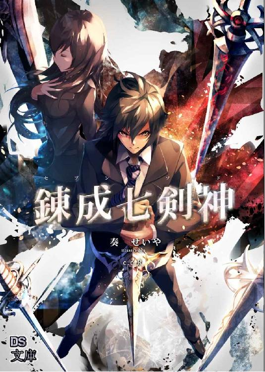
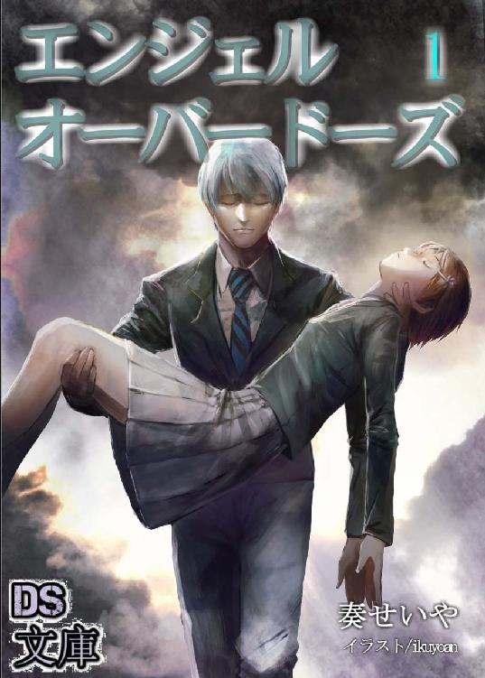
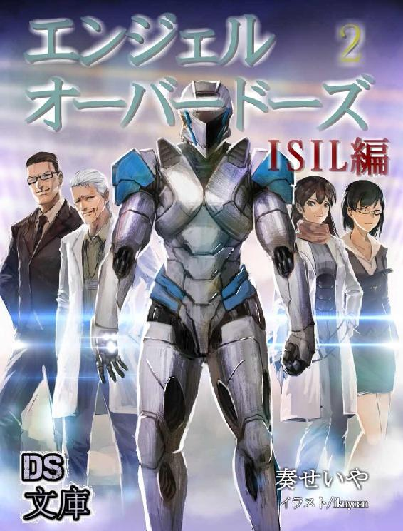

| 天下界の無信仰者（イレギュラー） 5巻 慈愛連立編 | |
| 奏せいや | |
| (2018) | |
天下界の無信仰者 五巻
---------------------------------------------------------------------------------------------------------------------------
奏 せいや


プロローグ
むかし、そう、これは遠いむかし。とある無人の村に、一体の天羽が舞い降りた。
時刻は深夜、周りには土を固めた家々が並んでいる。電気がないこの時代、夜空には無数の星々が輝いていた。まるで宝石のようだ。
けれど、その美しさを称える者はいない。ここは無人の村。周りにある家もそのほとんどが崩れ落ちている。破壊と蹂躙。その後に残った残骸がここだった。
その中央に白い長髪の女性天羽が立っていた。高位の証である八枚の翼を折り畳み、一人で佇んでいる。純白のバトルドレス。その姿は夜空の下で一層映え、澄んだ真白の髪は夜風に小さく揺れている。
その立ち姿は儚い。物憂げな雰囲気を漂わせ、彼女は崩壊した村で沈黙のまま佇んでいた。
知ってる者からすれば目を疑うことだろう。ここにいる天羽こそが、炎の化身とまで言われたかの四大天羽ウリエルであることを。その輝きは太陽の次に眩しく熱いとまで言われ、数多くの戦場では武勲を立てた。
その彼女が沈んでいる。存在感も希薄で、風が吹けば灰のように飛んでしまいそう。空虚な心は行き場を失くしウリエルは途方に暮れる。
ここに来たのは、人間に会うためだった。戦うためではない。裁くためでも滅ぼすためでもない。
ただ会いたかった。会えずともただ見たかった。
笑顔を。
武勲を立てた報酬を。これが私の功績だと、胸を張れる光を。
だけどどうだ、見るがいい。そして思い知れ。
崩壊した家を。
無人の村を。
自分の無力さを。
叩き付けられる現実になにも出来ない己を呪うだけ。
なんと憐れで無様なことか。
これが結果だ。報酬でも功績でもない。望んでもいない。けれど、これが事実。
自分が起こした現実なのだ。
周辺にある村は全部回った。ここが最後だ。天羽たちの布教に抗う者たちが住まう地域、ゆえに先ほど天羽たちによる執行が行われた。それを聞いて駆け付けたが結果はご覧の通り。生存者ゼロ。
戦った。戦ったはずだ。理想を掲げ、正義に燃えて、求めたもののため全力を尽くしたはずだ。
なのに、ないではないか。どこにも。欠片も。これが報酬か。今まで理想を信じてきた自分への。
ウリエルは、途方に暮れていた。もうどうすればいいのか分からない。突きつけられる現実に立ち止まる。歩こうにも行先が分からない。
これから、なにを信じて進めばいいのか、分からない。
ウリエルが忘我の心境で佇んでいる中、彼女の背後に別の天羽が舞い降りた。着地前の羽ばたく音がすると両足が地面につく。ウリエルは静かに振り返った。
「ラグエル......」
そこにいたのは白衣に身を包み、黒の髪を切り揃えた男の天羽だった。精悍な表情をしている、四十代ほどの落ち着いた雰囲気のある天羽だった。
彼から声が掛けられる。
「ウリエル様」
畏まった言い方が暗闇に響く。そこには敬愛の念が感じられた。彼の真面目な気質だろう、顔つきも隙のない表情をしている。
ウリエルは小さく苦笑を浮かべた。
「様なんて付けなくていい、君は偉大な天羽だ」
「いいえ。あなたは四大の天羽。あなた方より偉大な者などいません」
ウリエルは天羽の中でも最も優れた称号である四大天羽だ。しかしラグエルもそこに三体を足した七大天羽に数えられる高位の天羽。ほとんどの天羽が見上げる偉大な天羽だ。しかし彼から驕りや権力志向のようなものは感じられない。彼はどこまでも真面目なのだ。
「ですが」
ラグエルが表情を僅かに引き締めた。尊敬の眼差しはそのままに気迫が宿る。
「天羽を見張り堕天羽を裁くのが私の使命。それは四大天羽でも例外ではありません。あなたも執行対象です、ウリエル様」
彼がここに来た理由。それは徒でも世間話をしに来たのではない。
仕事だ。己の役目を果たしに来たのだ。
「これ以上の干渉はお止めになってください。しばらく天界でお休みを。でなければ本当に......」
ウリエルがしていたこと。地上に降りているのは無断であり、人との接触は規則違反だ。間違いなくウリエルは天羽の法に触れている。
いかに四大の天羽といえどこのままなら堕天羽だ。そのことにラグエルは心配していた。ウリエルは尊敬する天羽、それが堕天羽になることを彼は望んでいない。そのため警告に留めウリエルを連れ戻しに来たのだ。
「それは......、無理な相談だ、ラグエル」
しかし、ウリエルは断った。ラグエルの気持ちは分かる。心配してここまで来てくれたのも分かっている。
それでも、ウリエルは顔を縦には振れなかった。表情は陰を落とし、彼女は彼の申し出を断った。
「なぜ、どうしてですかウリエル様。なぜあなたが！？」
明らかな拒絶を前にしてラグエルは叫んでいる。理解が出来ない。このままでは間違いなく堕天羽だ、それは分かっているはず。なのになぜ断る？ なぜこだわる？
人間に。
「誰もがあなたに憧れていた。尊敬していた！ その迷いのない目と、神の愛に応えんとする情熱に、すべての天羽が敬服していたというのに------」
「ラグエル」
ラグエルの熱弁をウリエルは冷めた声で遮った。無表情に近い顔で。
「私がしてきたことのすべては......」
ラグエルの言っていた客観的な評価。ウリエルを称える数々の言葉。
しかし本人からしてみれば虚しいだけだ。そんなもの飾りでしかない。本当のことを自分は知っている。
「人を殺したことと、同族を殺したことだけだ」
「ウリエル様......」
それだけのこと。言ってしまえばそれだけのことだった。
これのどこがすごい？ どこが素晴らしい？ こんな醜悪でしかないものを今まで正義だと思い込んでいた。
けれど気づいた。すべては虚構の正義だったことを。
「私はね、ラグエル。気づいてしまったんだ。私が行なってきた行為によって生まれた、人間の苦しみ、痛み、悲しみ。それらすべてがひどいことだと。今では、ルシフェルの言っていたことが良く分かる」
「反逆者の言葉です！ 耳を貸すことはありません！」
ウリエルの言葉に、即座にラグエルが噛み付いた。
「いや。私はもっと早くに耳を傾けるべきだったんだ。彼の言葉が今では重い。人間の意思とは自由であるからこそ尊い。それを誰かが奪うべきではなかったんだ」
そう言うウリエルの顔は儚く、下を向いている目は遠い昔を見ているようだった。
その時、ウリエルの瞳から涙が零れた。
「ウリエル様......？」
静かな落涙。涙はゆっくりと頬を伝っていく。
思い出す。思い返す。湖の底から泥が舞い上がるように、記憶が浮上する。
蘇るいくつもの記憶。自分の過去。それら過ちの歴史にウリエルは今も涙が零れている。
「救えると信じていた。私の行いで、いつか、誰しもが幸福になれると。地上は愛で満たされ、平和がみなを笑顔に変えると。私はそう信じて今までを生きてきた！」
悲しみの諦観、悔恨の怒り。ウリエルの心は揺れている。悲しみと怒りが行ったり来たり。
「だけど......、それは間違っていた。私は、目の前を見ていなかった。まさに今、そこにある悲劇から目を背け、信仰の輝きに目が眩んでいただけだったんだ」
思い出すだけで押し潰されそうだ。瞼を閉じれば裏側には過日の光景が見える。燃える街、悲鳴を上げる人々。
それを容赦なく行う自分。
「私の炎で、多くの人が亡くなった......。苦しみ、痛みながら。彼らは泣いていたんだ」
悲しい。それだけしかない。
「なぜ気づけなかった？ 私は、本当は、その苦しんでいる彼らをこそ救いたかったのではなかったのか！？ 苦しんでいる者を救いたい、笑顔に変えたいと、そう思っていたはずなのに！」
怒り。それしかない。
「私は、誰も笑顔に出来ていなかった。私の行いは、私の努力は、私の信仰は！ ぜんぶ、無価値なものだったッ」
ウリエルは泣いた。叫び、涙を飛ばした。こぼれた涙が宙を飛ぶ。
ウリエルは叫んだ姿勢を正した。顔は依然と下を向き、前髪に隠れて表情は見えない。まるで幽鬼のような佇まいでウリエルは言った。
「ラグエル、私はもう戦えない」
告げたのだ、もう戦えないと。
戦うための動機を失った。今となっては抜け殻だ。理想も正義も失くしてしまった。
だがそれは彼女だけじゃない。これは誰しもが陥るかもしれない、理想の代償なのだ。
『兄さん、私はもう戦えない』
それはとある信仰者の言葉。これから二千年後の未来でも起こる葛藤だった。誰であれ苛まれる理想と現実。それほどまでにこの矛盾は深いのだ。
救うために殺す。
この矛盾を背負って生きていくにはあまりに重い。理想に燃え、未来に想いを馳せて、己を厳しく律しようとも。困難には気持ちを鼓舞し、理想のためにとすべてを捧げても。
いつしか気づく。
現実と理想の乖離。
救いたかった。守りたかった。平和を作り愛を育てたかった。
そのために殺すこと。壊すこと。争いを起こし命を刈り取ること。
悲劇どころじゃない。ひどい喜劇だ、醜悪すぎて笑いが出てくる。
同時に、涙が零れる。
気づいた瞬間自分が保てなくなる。自己矛盾に押し潰される。
ウリエルは気づいた。だから彼女は戦えない。戦うために必要な動機がなくなってしまったから。あれほど熱く燃えていた信仰心は燃え尽きて、吹けば飛んでいく灰へと変わってしまった。
ウリエルの変貌。それはかつてと比べものにならないほど憔悴したものだった。それを目の当たりにしてラグエルの表情が曇る。
「やはり、間違いだった。あなたは人間と接触し過ぎた。地上への布教が交代制なのは我々天羽が人間に染まらぬようにするためだ。我々の崇高さと純真さを保つため、人間との接触は最小限に保たねばならない。だが、あなたは戦場に居すぎた。あなたならば大丈夫だろうと楽観していたが、よもやあなたがそこまで......！」
ラグエルに去来するのは後悔だ。憧れや尊敬は時に目を曇らせる。誰もが予想だにしていなかった。ウリエルがこうも変わってしまうこと。だが誰も彼女の苦しみに気付いてあげれなかったこともまた事実。
「失望か？」
「............」
ウリエルの言葉にラグエルは答えられない。
「褒めては、くれないか」
「............」
返答はない。そのことにウリエルは寂しそうだった。それを見てラグエルも寂しそうな表情を浮かべた。
その後表情を引き締める。気持ちを切り替え、ここに来た目的を思い出す。
「ウリエル様、あなたに堕天羽登録の警告を発します。身柄を拘束し、天界へと連行します。抵抗する場合、堕天羽の認定を行ないます」
天羽を見張り堕天羽を裁く。それがラグエルの役目だ。その性質上彼の位は高い、七大天羽なのも頷ける。その執行となれば四大天羽であろうとも逆らえない。
「ウリエル様。どうか応じてください。私も出来るだけ便宜を図ります。みなもあなたの帰りを待っている！」
ラグエルの言葉に偽りはない。ウリエルの行為が天界で裁かれることになっても擁護はするし、多くの尊敬を集めるウリエルが戻ってくることは天羽みなが願っていることだ。
「............」
「ウリエル様！」
けれど、ウリエルは答えない。黙秘を続けている。
代わりに、
「ラグエル」
ウリエルはラグエルを見た。
悲しそうな瞳で。
夜の暗がりに純白の翼が広がる。翼が開く音と共に八枚の羽が展開された。羽自体が微かな光を発しウリエルを照らし出している。ウリエルは左の掌を上に向けると、そこから炎が渦を巻いて現れた。熱風に煽られ白色の長髪が巻き起こる。
輝く翼、揺れる長髪は優雅だ。渦を巻く赤に、なびく白色。暗闇の舞台に白衣のドレス。彼女の持つ色彩が幻想的なまでの一致を見せる。
その中で、彼女は悲哀に満ちた瞳を向けていた。
「ごめんなさい」
それは問答の終了を意味していた。言葉ではすでに止められない。彼女の諦観はそこまで深く、固かった。
「......フッ」
ラグエルは笑った。あれほど拒まれ続けていたことに胸は焦燥していたというのに。彼女は堕天羽としての道を進もうとしている、止めねばならない。ここで止めねば彼女は敵になってしまう。それだけはなんとしてでも阻止しなければならない。
そう思うのに。
それすら失念するほどに、
「お美しい......」
彼女は美しかった。見目も、その心も。悲哀の美とでも表現するような、そんな儚いがゆえの美しさがあったのだ。
その美しさに心を惹かれ、ラグエルは小さく笑った。
抵抗はしなかった。ウリエルから放たれる炎の奔流を、ラグエルはむしろ受け入れた。
「がぁああ！」
全身を呑み込む炎熱、体を蝕む熱量にラグエルは声を漏らす。
ウリエルの攻撃に吹き飛ばされたラグエルは地面に倒れた。それを見てウリエルは翼を羽ばたかせ、夜空へと飛び立った。決別の言葉はなく、無言での別れだった。
飛び立つウリエルを見送りラグエルは瞳を閉じる。その表情は、微かに笑っていた。
この日より、ウリエルは正式に堕天羽となった。天界の法を破り天羽を裏切って。
それから少しして天界紛争は終戦した。堕天羽たちは逃げ去り、同時にルシファー協定により多くの天羽は天界に戻り、天界の門は閉じられた。残された天羽だけが特別に人間に紛れ、彼らを見守り続けていくことになる。
人類史における天羽の歴史。それはこうして幕を下ろしたのだった。
しかし、それから二千年後。
人類史に、新たな天羽の歴史が刻まれる。
「「「「開かれよ！」」」」
人類が彼らの存在を忘れていた頃、神が当たり前にいるこの時代に。
「「「「天界の門！」」」」
無数の軍勢、天の御使いは現れる。曇天に空いた光の穴から、その者たちは町に舞い降りた。
人類は知るのだ、天羽は存在したことを。
天羽は争いを無くすことの必要性を説きながら街を回り、多くの者を自宅へと閉じ込めた。突然のことに人々は戸惑い、警察や軍も出動したが天羽たちの力の前では成す術がなく、反動はすぐさに鎮圧された。町の至る所で起こる銃声、爆発。しかし無数の天羽にそんなものは意味がない。
町は瞬く間に占拠された。この事態に街を捨てた者は聖都エルサレムを目指し、残った者は捕らわれの身となって天羽の支配下に置かれていた。
首都ヴァチカンの陥落。
その様子をミカエルはサン・ジアイ大聖堂の高みから見物していた。会議室の窓から外を眺める。
空を覆う天羽の翼が地上を占めていく。順調な、否、当たり前の進行に驚きこそないものの、だけれども、やはり昂る気持ちに嘘はつけない。
「第二段階は終了。思惑通りか？」
背後から掛けられた声に振り返る。声はガブリエルであり、彼女以外にもここにはラファエルやウリエル、サリエルが座っていた。
「ふん」
ミカエルは上機嫌に鼻を鳴らして自分の席に着く。その後優雅に足を組んだ。
「当然だ」
その表情には自信があった。勝利を確信した顔。なにしろ援軍が到着したのだ、最大の戦力が。問題はそれをどうやって出現させるかであって、その問題を達成すれば目的は果たしたも同然。
「これからはどうするの？」
ラファエルの問いにミカエルは背もたれに体を傾けた。
「まずは戦力を整える必要がある。ここを拠点とし、整い次第聖都エルサレムを落とす。ゴルゴダを完全に掌握するのが当面の目的だ。それまで君たちにはここの守護をお願いするよ。それぞれが結界の四方を」
「分かっている」
そう言ってガブリエルは席を立った。その後に皆もついていき退室していく。ミカエルは席に座ったまま皆の退室を見送るが、最後の一人に声をかけた。
「ウリエル」
彼女の足が止まる。他の皆は出て行った。会議室には二人きりとなる。
「なんだ」
ウリエルは振り返り、その際に長髪がさらりと揺れた。会議室に置かれた長椅子の一番奥の席に座る不敵な笑みにウリエルは隙のない顔で対峙する。
「分かっているはずだ」
見る者を威圧する冷酷な瞳。そんなウリエルに睨まれても動じることなく、ミカエルは不穏な空気を滲ませる。
ミカエルは言った、分かっているはずだ。なにかは決まっている。ウリエルは黙ったままミカエルを見つめていた。
「なぜ神愛を始末しなかった？」
「............」
天羽長ミカエルの命令を無視し、対象である神愛を助けたこと。明確な裏切り行為だ。空間転移によって生じるひずみは丁寧に隠したつもりだがバレていたらしい。
二人とも見つめ合う。空気は緊張の度合いを高めていき、指一本、動かすだけでも気が抜けない。
そんな中、さきに動いたのはウリエルだった。視線をミカエルから逸らした。
「見間違いか。死んだと思っていた」
「ふふふっ。止めろ止めろ、下手な冗談だ。あれを死んだと間違える君じゃない」
そんな間抜けをするようなら、そもそも審判の天羽とは呼ばれない。わざとなのは明白だ、言い逃れは出来ない。
背信行為の露呈。しかしそれで狼狽えるほどウリエルの精神も弱くはなく、表情を一切動かすことなく立ち続けている。それだけでも並外れた胆力だ。
しかしそれも当然のことかもしれない。目の前に自身の危機を見ながらも、胸にある想いは自分ではない。
「あの子は特別かい？」
「............」
宮司神愛のことを思っているのだから。
後悔はない。あるはずがない。だから狼狽えない、動じない。覚悟ならあったから。世界を救うと決めた彼女の中で、それはたった一つの矛盾。けれど譲れない、大切な矛盾だ。
ウリエルは、神愛を助けたことを後悔していない。
ウリエルの黙秘に嘆息し、ミカエルは片手で頬杖を付いた。
「仕方がない、処分はサリエルにでも頼もうか」
「ミカエル」
その言葉に即座にウリエルは口を挟んだ。
「彼に......」
凄みのある声、戦意を隠しもせずに、彼女は天羽長である彼に反論した。
「彼に、手を出すな」
神愛を殺す、ミカエルはそう言った。それだけは認められない。あってたまるか。ウリエルの胸の内側で激しい炎が渦巻いている。
彼だけは、絶対に守ってみせる。
「おお〜、怖い怖い。しかし手を出すなだって？ 残念だけど、君が私に命令できる権限など------」
「ミカエル、止めろ」
ミカエルの言葉を遮り脅迫めいた口調で告げる。
これが自分のわがままだと自覚はしている。世界の平和。そのために人類と戦う決意をした。なのに、自分は彼だけは助けようとしている。ひどい矛盾、わがままだって分かってる。
それでも、彼を守りたい。
自分を認めてくれた、初めての人だから。多くの宝物をくれた彼を殺すなんてこと出来ない、死なすなんてこと認められない。
好きだから。彼のことを想うたびに胸が熱くなるこの熱で、わが身が焼かれるのなら構わない。
「ふっ、そうかい。ではこうしよう」
ウリエルの想いの強さが通じたのか、ミカエルは追及を止めた。本来ならすぐにでも処遇を告げられてもおかしくない状況。しかしミカエルの判決は執行猶予、条件を言い渡してきた。
「彼が邪魔しに来なければ、またこの計画を成功させてくれれば、彼を処すのは止めよう。しかし、彼が邪魔しにくれば、失敗するようなら、容赦なく殺す」
その顔は真剣だ。まっすぐなウリエルの視線に応え、見つめ返すのはミカエルの真剣な目。
「どうだ、これ以上ない条件だろ？ これが呑めないと言うなら交渉の余地はない」
確かに、ミカエルとしても計画の成就が最優先。それが邪魔され手出しするなと言うのは無理な話だ、ミカエルの言う通りこれ以上ない条件だ。
「分かった、それでいい」
どれだけ神愛が強くても相手が天羽軍となれば敵わない。計画に支障をきたすイレギュラーとして殺されてしまう。だが、要は彼がここに現れなければいいのだ。そして自分がミスをしなければいい。役割を全うし、平和を実現させる。それで彼を救うことが出来る。ウリエルは承諾した。これが彼を守る唯一の方法だった。
「彼は君にとってなんだい、ウリエル」
話はまとまった。しかしミカエルとしてはそう簡単に見過ごしていい話ではない。なぜそこまでこだわるのか、ウリエルがどう考えているのか、それを確かめる必要がある。
「君に頼みがある。手始めに軍の基地をいくつか襲撃してくれるかな」
軍は政府の組織だ、当然神官長派の指揮下であり、その上官たちがこぞって敵に回ったのだから混乱は必至だ。軍だけでなく政府は一時的な麻痺状態に陥っており襲撃自体は容易いことだ。戦力を整える間、教皇派の意識を局地的な襲撃に向けさせるのは悪くない。
その人選をウリエルにするということは、試されているのだ。本当に天羽として振る舞えるのか、それともまた裏切るのか。
もし、手心を加え半端な仕事をしたのなら今度こそ処罰は免れない。さきほどの約束も反故にされかねない。自分は不審に思われているのだ、これくらいは当然。
「やってくれるね？」
「............ふん」
険しい表情のままウリエルは踵を返しそのまま部屋を出て行った。答えは言わずとも決まっている。ミカエルの良いようにされるのは癪だが納得している。
（神愛君。君だけは守ってみせる。今度は、私が）
理想と自己の想い。挟まれる矛盾があろうとも、ウリエルの歩みは止まらない。
世界を平和にしてみせる。
人々を笑顔にしてみせる。
そして、愛する人を守ってみせる。
迷うことなんてない。ウリエルは精悍な表情で前を向きながら、最寄の基地を頭に描いていた。
第一章 本当の気持ち
俺は、恵瑠と再会した。
そう、俺は出会ったんだ。恵瑠が生きていた。それはそれだけでガッツポーズをしたくなるほど嬉しいことだ。実際に出会った瞬間なんて胸の中で百万という俺がスタンディングオベーションだった。それくらい嬉しかった。
けれど、あいつとの出会いは予想とは違っていた。
あいつは自分をウリエルと名乗り、敵だと言った。友でもなんでもないと。
その後、炎を向けてきたんだ。
訳が分からなかった。だってそうだろ？ 俺たちはずっと友達だって、そう言っていたじゃないか。お前だって喜んでいたじゃないか。
あれは、ぜんぶ嘘だって？ 俺の勘違いだって？ そう言うのかよ？
俺はなにを信じればいい。これが俺たちの最後なのか？
分からない。なにも。自分が大事にしてきたものがなくなって、自分自身すら分からなくなってくる。
俺はいったいどうしたらいいんだ......。
目覚めた瞬間、俺の胸に過ぎったのはそんな感情だった。最悪と言っていい目覚めだ。犬のフンの臭いで目を覚ましたような気分。起きるなり眉間にしわが寄る。
が、それはそれとして俺は辺りを見渡した。
「あれ、どこだここ？」
気が付いた時、俺は知らない場所にいた。起き上がってみるも真っ暗な空間でなにも見えない。ここはどこ？ 俺は誰？ 俺は宮司神愛だってことしか分からねえ。
おかしい。俺は確か恵瑠と出会って、けれど炎の攻撃を受け意識を失ったはずだ。なのにこんなわけの分からないところに立っている。
「意味不明」
よく分からん。分からんがどうにかしないと。ここには誰もいないのか？
「ハロ〜、ヘルプ、ミ〜」
声を掛けるが返事がない、ただの無人のようだ。
「ようこそ」
「おお」
突然人が現れた。なんの気配もなくいきなり声をかけられびっくりする。
目の前に現れた人物。それは天和だった。
「天和、お前なにしてんだこんな場所で」
真っ暗な空間でもなぜか彼女だけははっきり見える。緑の髪に印象的な赤い瞳。そして無表情に近い顔。
それはいつも通りなのだが、一点だけ普段とは違うものがあった。
服だ。なぜか天和はこれでもかと言わんばかりのうさぎがプリントされた豪華な服装をしていた。無我無心の伝統衣装かな？ 緑色のはっぴ？ 袴？ 和服？ よく分からんけどそのすごいバージョンだ、緑と白が折り重なった裾が絨毯のように地面に伸びている。さらに頭には巨大な髪飾りまで付けていた。
「なんだよその格好、どこで売ってんだそれ」
「宮司君、私は天和ではないわ。うさぎ神天和よ」
ワッツ！？
「ハ？ 何言ってんだ天和、大丈夫か。ついに受信したのか？ だからあれほどアルミで頭を巻いておけって言ったじゃねえか」
天和は以前からおかしなやつだったが今回は飛び抜けてやばい気がするぞ。こいつの異変に比べれば暗闇の空間なんてどうでもよく思えるわ。
「私はなにも受信していないわ。ただうさぎを愛するあまりうさぎ神となっただけよ」
「それも十分やばいだろ」
「宮司君には重大なお知らせがあるの」
「知ってるよ、お前のことだろ？ 俺の目の前には高校生にも関わらず児童向けにしか見えないうらぎのプリントした服を着こなし、うさぎ神を自称してるクラスメイトがいるんだぞ？ これ以上に重大なことがあるなら教えて欲しいわ」
「宮司君、これはあなたの夢の中なの」
「うそだあああああああああ！」
どういうことだぁああああ！？
「俺の夢？」
「そう」
天和、もというさぎ神天和はこくんと頷いた。
「これは宮司君が見ている夢でしかないの。だから外の世界とは一切関係ないのよ。ここで起こった出来事も人物も一切現実とは無関係なの」
「ああ、そういうこと言っちゃうんだ」
にしても俺の夢か。そうか、そういうことか。なんか強引だけどそういうことにしておこう。なんていうかこんなこと真剣に考えたくない。
「夢だからと言ってなんでお前が出てくるんだ、他のやつらは？」
「いい宮司君。現実世界では今たいへんなことになっていて、恵瑠さんを中心にみんな頑張っているわ。それに比べて私は活躍が少ないからこうして出てきたの。いわば救済回なのよ」
「知らねえよ！ 元の世界に帰してくれよ！」
なんでお前の出番に俺が付き合わないといけないんだよ！
「それを言うなら加豪だってそこまで活躍してねえぞ？」
「彼女は戦闘要員だからぼんやりあるのよ。私はうっすらとしかないの」
「ぼんやりもうっすらもそこまで違いないだろ」
「宮司君にはこれからある場所に来てもらうわ」
「無視かよ」
すると突然俺たちのいる場所が変わった。
「うお！」
空間が書き換わる。黒い空間は泥を水で洗い流すように消え去り、そこから現れたのは、遊園地だった。
さらに歌までも聞こえてくる。
『うさぎ〜、うさぎ〜う〜さぎの、楽〜園〜、うさぎ〜、うさぎ〜う〜さぎの、楽〜園〜』
「なんだこれ？」
俺たちは遊園地の中に立っている。メリーゴーランドにジェットコースター、観覧車などお決まりの遊具たち。しかしここが普通の遊園地と違うのはアトラクションの全部がうさぎをモチーフにしていることだ。メリーゴーランドもうさぎだし、ジェットコースターの正面にもうさぎの顔がついている。そしてなにより、行き交う人々がうさぎたちってことだ。ぴょんぴょん跳ねては乗り物に乗っている。
「ようこそ、うさぎの楽園、うさぎ界へ」
「ネーミングストレート過ぎだろ」
見た瞬間だいたい分かったわ。
それにしてもどんどん話がわけ分からんことに進んでいるぞ。どうなるんだこれ？
「そもそもなんだここ？」
「ここはうさぎの楽園、うさぎ界よ」
「聞いたわ」
「ここではうさぎさんたちは人と同じように暮らしているの。ここでの主役は人ではなくうさぎさん。ここは癒しと喜びで溢れるうさぎ界なのよ」
天和は無表情ながら自信を感じさせる口調で断言してきた。
「ここにいる住民はみんな可愛いうさぎさんたちばかりなのよ」
「可愛いって言ってもお前......」
こいつの言う通りうさぎ自体は可愛いと思うよ。たださっきから気になるのが視界に映るんだけど。
そこにはベンチに座る二羽のうさぎがいたのだ
一人はなぜか茶髪のリーゼントで、もう一匹が黒のパンチパーマだ。こいつらだけ改造した学ランを着ておりベンチを占領している。
「あいつらどう見ても可愛くはないだろ。おい天和、あれ見ろあれ、あれはありなのか？」
俺は二羽を指さす。すると向こうもこちらに気付いたようで足元に近づいてきた。立ち止まると後ろ足で立ち俺を見上げてくる。
「おお？ なに見てんだてめえ、やるウサか？ やんのかウサか？」
「喋るんかい！」
チンピラじゃねえか。これのどこが可愛いのか教えてくれ！
「ていうかウサってなんだよ。ワンとかニャーとかそういう感じかよ」
そもそもうさぎの鳴き声ってなんだ？ あいつら鳴くっけ？
そんなことを考えていると二羽はさらに距離を詰め俺を睨みつけてきた。
「やるウサか？ やるウサか？」
「舐めてんじゃねえぞウサ。ジロジロ見やがって。誠意見せろウサ誠意。これはニンジン三本くらい包んでもらわないと話まとまらないウサ」
「安ッ」
お前らそれでいいのか。
「いいよ、分かったよ。おごってやるよニンジンくらい」
「分かればいいウサ」
「じゃあ今すぐ出してもらうウサ」
「いや今はないよ」
「ないウサだとぉ〜！」
二羽は丸い目をくりくりさせながら俺を睨んでくる。すげー、びっくりするくらい怖くねえ。
「どういうことウサ！？ やるウサか？ やるウサか？」
「てめえ、話と違うじゃねえウサ。嘘つきやがってウサ、これは戦争ウサ、うさぎと人間の、全面戦争ウサ！」
「ふざッけんな！ 普段からニンジン持ち歩いてる奴いるわけねえだろ！？」
なんかすげーボルテージ上がってるぞこいつら。どうしてそんなすぐキレるの？ 可愛くねえしやたらムカつくんだけど。
「おい」
それで俺はしゃがみ込んで目線の位置を同じにすると、このチンピラうさぎ共を睨みつけた。
「お前ら調子乗ってると、両耳掴んでホーガン投げみたいに振り回すぞ？」
そう言うと二羽はビクッと体を震わした。すると頭の上からモクモクした煙のようなものが浮かび上がり、合わさった。そこには俺とこいつらの映像が映っており、きっとこいつらの考えていることだろう。
俺はリーゼントのうさぎの両耳をニンジンを引き抜くみたいに持ち上げると、そのまま回転し振り回したのだ。回転はみるみる速度を上げていく。その時だった。
『あ、千切れた』
『ぎゃあああああ！』
リーゼントウサギははるか遠くまで飛んでいったとさ。
「ひぃいい！」
「逃げるウサ！」
その後モクモクはなくなり、二羽は文字通り脱兎の如く逃げ去っていった。その後ろ姿に天和が声を開ける。
「待ってバニラ！ ショコラ！」
「あいつらそんな可愛い名前なの！？」
二羽はここからいなくなった。天和は彼らの逃げた先を見つめていたが、姿が見えなくなると俺に振り向いた。
「これがうさぎ界、人類が夢見る理想の世界よ」
「そうですか、すごいですね。それでは僕はお暇しますんで、早いとこ夢から覚ましてもらっていいですか？」
「それは出来ないわ」
「はああ！？」
出来ない！？
俺は天和に詰め寄った。
「おいおいちょっと待て、出来ないってどういうことだよ。なに、俺ずっとこのまま？ うさぎしかいないこの場所に閉じ込められるの？」
「夢のようね」
「面白くねえんだよ」
なに上手いこと言ってんだこいつ。
「ここから出る方法は一つしかないわ」
「なんだよ、教えてくれよ」
「私はうさぎ神。うさぎ界の神様。だからここで起こることはすべて知っているわ。未来さえもね」
「なんでもいいから早く教えてくれよ、なんかここうさぎ臭い」
ずっとこんな場所にいてたまるか。さっさとこの悪夢から解放してくれよ。
「宮司君が目を覚ますのは、『まるでうさぎのハルク・ホーガンや！』って言う途中で目が覚めるわ」
「どういうことだよ！ どんな状況なら俺はそんなツッコみを入れるんだよ！？」
もう駄目だ、無理だよそんなの。あるわけないだろそんな場面。
「はあー」
俺は絶望に項垂れ地面を見ていると、隣にいる天和が呼んできた。
「ねえ宮司君、あれを見て」
「なんだよ今度は......」
もういい加減にしてくれよ......。
俺はなんとか顔を上げ天和が指さしている場所を見てみた。コンクリートの道が続いている。いったいなんだろうか。
「ん？」
なんだろ、そこにやけに大きなものが見える。
よく見てみると、そこには人の形をしたムキムキのうさぎがバンダナを被って立っていた。
「まるでうさぎのハルク・ホー------」
＊
「ハ！？」
俺はガバッと目が覚めた。上体を起こし我に返る。
「ゆ、夢......？」
辺りを見渡してみるとここは以前泊まったことのあるホテルの一室だった。全体的に白い内装にお洒落な家具が並んでいる。うさぎ界じゃない、俺は戻ってきたんだ！
「よかった〜......」
起こした体をベッドに寝かせる。ホッとした気持ちに力が抜けた。
「主、目が覚めたのですか？」
すると後ろの方からミルフィアの声が聞こえてきた。その声に救われる。俺はすぐに体を起こした。
「ミルフィアか。いや〜、ひどい夢を見てさ」
「そうだったのですね。ですがもう大丈夫ウサ」
「............え」
ウサ？
嫌な予感がする。
「な！？」
俺はすぐに振り向くとそこはとんでもないことになっていた。
ミルフィアは扉の前に立っていた。しかしその頭にはウサ耳が付いており、服は黒のレオタード。さらにお尻には白のぽんぽんしたやつが付いている、完全なバニーガール姿だったのだ！
それが当たり前のようにミルフィアはとびっきりの笑顔で近づいてくる。
「そんな主を元気つけようとちゃんと用意しておいたウサ。はい、今朝採れたての、キャロットジュースウサ！」
ミルフィアはコップに入ったキャロットジュースを両手で突き出してきた。
「うわあああああああああああああああ！」
ああああああああああああああああああああ！
あああああああああああああ！
ああああああああああああああああああああ！
俺は起き上がり布団を蹴り飛ばした！ そして両手で頭を抱え込んだ！
「うわああ！ があああああああああ！」
ベッドの上で足をバタバタし暴れる。
嫌だ！ 誰か、誰か助けてくれえええええええ！
ドン！ ドン！ ドン！
「主！ どうしました！？ 主ぃ！？」
扉がいきおいよく叩かれる音がする。この声はミルフィアだ。乱暴にドアをノックするが俺が出ないからか今度はものすごい音が響いてきた。直後、ドアが壊されショルダータックルの姿勢でミルフィアが入ってきた。服装は至って普通な制服姿だ。
「主！ 大丈夫ですか！？」
「来るなぁああああ！」
しかし俺としてはさきほどがさきほどだから信用できない。こいつまで変な語尾でしゃべってきたら俺はもう出られない気がする！
「敵襲ですか！？ なにかされたのですか！？」
「来るなぁ！ 来るなあああ！」
「相当錯乱している......！ 大丈夫です主！ 私です、ミルフィアです！」
「だからお前が来るなつってんだろ！」
「え............」
「あ、いや、ごめん」
ミルフィアは地獄の底にでも落とされたような顔をしてしまった。マジごめん。
でもそうはいっても俺はここが現実なのか夢の続きなのか分からないんだよ。
「ミルフィア、一つ聞いていいか？」
それを確かめるべく恐る恐る聞いてみた。
「え？ は、はい！ 主からの問いかけならば、不肖ミルフィア、全身全霊に賭けてお答えしましょう！」
「ミルフィア、しっぽ付いてるか？」
「は？」
が、今度は豆鉄砲を食らったハトのようになっていた。そのままお互い見つめ続ける。
「「............」」
ミルフィアはゆっくり首を振りながら答えた。
「いえ......」
今分かった。これ現実だ。よかった、俺は今度こそ戻ってきたんだ。でもなぜだろう、なにか大切なものを失った気がする。
「主、大丈夫ですか？ 本当に大丈夫ですか？」
めっちゃ心配してる。
「悪いなミルフィア、寝ぼけてた。今のは気にしないでくれ」
「それならいいのですが......」
まだ腑に落ちないという感じだったがミルフィアは立ち上がった。
「どうやら無事なようでよかったです。敵襲ではなかったようですし。なにか飲みますか？」
「ああ、頼む。キャロットジュース以外でな」
「......キャロットジュースお嫌いでしたっけ？」
それからミルフィアが持ってきてくれた水を飲んで一息つく。どうやら本当に現実に戻ってきたみたいだ。今度こそ本当だ、良かった、マジで。
しかし、そんな俺にあるものが目についた。ベッドの端に落ちていたそれを手に取る。
それは白い羽だった。
「恵瑠......」
それを見て過去が一気に蘇ってきた。
そうだ、俺はエノクが落ちてきた場所に駆けつけそこで恵瑠と出会ったんだ。だけど、
『消えろ』
あいつが俺に向けた言葉を思い出す。攻撃を受けて、俺は倒されたんだ。
俺だけだったのか？ 今でも友達だって、ずっと友達だと思っていたのは。あいつは天羽で、俺とはもう仲良くなれないのか？
体に残った火傷の痛みが恵瑠が向けた炎が本物なんだと嫌でも教えられる。
あいつが俺を攻撃してきたのは、本当なんだ。
「あれ」
だがそこで俺は気づいた。
「なんで俺、ここにいるんだ？」
倒れた俺を誰かが運んできてくれたのだろうか。
「俺をここに運んできてくれたのは、ミルフィアか？」
「いえ、私では。神官長派の襲撃が終わった後、主を探していてここで見つけたんです。誰が運んでくださったのかまでは」
「そうか」
ここまで運んでくれたのはミルフィアじゃなかったか。ていうか、悪夢のせいで忘れていた。ミルフィアも俺と同じように捕まっていたはずだ。一日だけとはいえ離れ離れだったのがこうして会えている。
「ミルフィア、無事だったんだな」
「はい」
俺の確認にミルフィアは微笑んだ。以前の変わらぬ笑顔がそこにある。
よかった。改めてホッとする。ミルフィアと微笑み互いの無事を喜び合った。
「また会えて嬉しいよ。他の二人は？」
「はい。お二人は今戦略会議に参加しています。こうなってしまった以上、使える人材は誰でも使うということですね」
「戦略会議？」
物騒な言葉に持ち上がっていた口元が引き締まる。
「こういう事態って、神官長派が攻めてきたことか？」
神官長ミカエル率いる軍隊がサン・ジアイ大聖堂を襲撃した。ついに天羽としての正体を明かし決行してきたんだ。それによって出た被害は大きい。
だが、ミルフィアの表情は俺の考えていることとは違うと言っていた。
「主。実は主が倒れた日から、もう二日が経っているんです」
「二日！？」
俺は慌てて窓を見る。倒れた時と同じ昼間を思わせる天気だからついそんな時間は経っていないと思っていたが。くそ、俺は二日もあんなふざけた世界にいたのか。
「それで、その二日間で大きな出来事がありました」
ミルフィアの表情が真剣に引き締められる。それだけで、重大なことが起こったんだと分かった。
「天界の門が開きました」
「ヘブンズ・ゲートが......」
天羽たちのいる天界と地上を繋ぐ門。それが開いた。
始まったんだ、二千年前の再現。天羽たちによる地上への侵攻が。
「この街は？ っていうか、どうなっちまったんだこの世界は！？」
「落ち着いてください主。天羽たちですが、現状は大きな動きを見せていません。ただし首都ヴァチカンは彼らの手に落ち、街から逃げてきた難民たちはエルサレムに来ています。軍も抵抗したようですが、力及ばず。彼らもここに退避し、今も戦略会議に参加しています」
「そうか」
俺が眠っている間にそんなことが。
「悪いな、そんな時に俺だけ爆睡でさ。みんなはちゃんと眠れてるのか？」
「気にしないでください、今まで恵瑠を助けるためにいろいろありましたし、主も疲れていたんだと思います。あまり眠れていなかったようですし」
ミルフィアの言うとおり、なにをしてても恵瑠のことが頭に浮かんで最近はよく眠れていなかったな。
「私たちのことも大丈夫です。加豪は気丈です、この事態でも毅然とたち振る舞っています。天和は相変わらずですね。なにを考えているのか分からないですが、彼女なりに戦況を見極めているようです」
「そうか。ま、だとは思ってたけどさ」
あいつらのことだからそんな心配はしてなかったけど。ミルフィアの言っていたことは容易に想像できる。天和は複雑だけど。
「主」
あいつらの無事に俺が小さく笑う中、ミルフィアは表情を暗くして聞いてきた。
「どうした？」
聞くのを躊躇うような、聞きづらい感じだった。
「恵瑠のことですが」
だから、聞かれた内容に納得した。
ここに恵瑠はいない。あいつがどうなったのか、それを知っているのは俺だけだ。
二日前、あいつの姿を見たのは俺だ。
「あいつに、攻撃されたんだ」
火傷で痛む場所に手を当てる。二日経っても治らないのはあいつの炎が強力だからなのか、それとも俺の気持ちの問題だからなのか。でも、こんな痛みより、胸の奥からくる痛みの方が、俺にとってはよっぽど辛かった。
俺が言うことは予想してたと思う。けれど実際に言われてミルフィアは顔をわずかに下に向けた。
「人と天羽。彼女は、もともとあちら側ではありますが」
そう言うミルフィアは寂しそうな顔を浮かべている。恵瑠との敵対はミルフィアにとっても辛い事実だ。いや、俺たちだけじゃない。加豪や天和にだって悲しいことだ。
恵瑠。あいつは、俺たちの敵になってしまったんだろうか。疑いたくない。あいつは今も友達だって信じたい。でも、あいつが俺を攻撃したのは事実で、そのことが重くおしかかる。
分からないことが多かった。これから先どうなるかも、なにをすればいいのかも。ただ先行きに暗雲を感じるだけで、どうすることも出来ない。
俺は布団に視線を落として、ぽつりとつぶやいた。
「夢を、見た気がするんだ」
悪夢じゃねえぞ。その前だ。
「夢ですか？」
ミルフィアが聞き返す。俺は振り返らず、小さな声で続けた。
「あいつを、近くに感じる夢を......」
内容は覚えていない。気のせいなのかもしれない。それはとても曖昧で、意識がぼやけたものだった。
ただ、あいつが近くにいてくれた。とても近くに。その熱を、その息を感じる。そんな夢とも呼べない、気配のようなものを感じた気がするんだ。
「そういえば」
俺は置いていた羽を再び手に取った。どうしてこんなところに。俺の体にくっついていたものがそのまま運ばれたのかと思っていたけど。
「もしかして」
けれど、別の可能性が頭を過ぎる。
もしかして、ここには恵瑠が運んできてくれたんじゃないのか？ あいつが俺をここまで運んでくれた。ここに恵瑠はいたんだ、それでこの羽が落ちた。ぼんやりとした意識で感じたあいつの気配は本当だったじゃないのか？
そう思うといろいろ納得できる。俺はあいつの攻撃を受けたが、あの状況ではそうしなければ別のやつに殺されていた。なぜあの状況で俺は生きている？
決まってる、恵瑠が助けてくれたんだ！
「恵瑠......！」
羽の根本を力強く握る。疑念や不安が一気に晴れて、代わりに感謝の念が胸を覆ってくる。
あいつは友達だ、今だって！
俺はベッドを降りた。同時に火傷の跡を黄金のオーラが覆い治療する。
「ミルフィア、戦略会議がされてる部屋は分かるか？」
「はい。ですが主」
「案内してくれ」
俺はミルフィアを見つめた。戸惑ったようなミルフィアだったが、恵瑠への思いを込めた俺の視線に納得したように頷いてくれた。
「こっちです、主」
俺たちは部屋を出て会議室を目指した。
やっぱり諦めきれない。あいつが敵になるなんて、もう友達じゃないなんて。
ずっと一緒だったんだ、楽しい時間があった。それを全部捨てれるはずがない。
俺も。
あいつも！
俺はミルフィアの後を歩き会議室の前にまで来た。扉の前にはは二人の警備の人が立っていたが俺のことを聞いていたのか通してくれた。
扉を開ける。広い部屋だった。右側は全面ガラスで街を眺められ、左側の壁には絵画が飾られている。中央にはいくつもの長方形の机によって四角に組み立てられ、両側に人が座っていた。見たとこ左側が軍の人間で右側が聖騎士隊の人間だろう。
そこには加豪と天和も座っていた。
「神愛！？ あんた大丈夫なの？」
「おはよう」
「大丈夫さ。天和、お前絶対許さねえからな」
「え、どういうこと」
俺の入室に加豪が驚きながら無事を確認してくる。二日も眠っていたからな、きっと心配してくれてたんだろう。天和は平常運転か。まあ、こいつの場合驚かれてもこっちが心配するわ。
「起きたか」
「なにしに来たんだイレギュラー」
その後ペテロとヤコブからも声がかけられる。特にヤコブは露骨に敵意ビンビンで俺を睨みつけてくる。
「今は会議中だぞ」
「知ってるよヒゲ野郎」
「んだとぉ！？」
「落ち着けヤコブ。なにしに来た？」
隣の席で激高するヤコブをペテロが制しながら聞いてくる。
ペテロだけじゃない、この部屋にいる全員が俺を見つめていた。
「恵瑠に会いに行かせて欲しい」
「正気か？」
精悍なペテロの表情に少しだけしわが寄る。
「お前はその彼女に殺されかけたんじゃなかったか？」
「そうかもしれない。でも、俺は違う方を信じてる」
俺の負った傷は裏切りなんかじゃない。守るためだった。それを決別になんかしてたまるか。
「あいつは俺の友達なんだ。今だって。あいつと二人っきりで話ができれば、違う答えが返ってくるはずだ」
断言する。自信を持って言ってやった。俺が信じないでどうするんだ。
俺の発言に周りからは否定的な声が出ていた。「あるわけがない」「あれは敵だ」誰も信じていない。全員が敵だと思っていた。そうした雰囲気に気を強く持ってなければ呑み込まれそうになる。
けれど、俺は揺れなかった。
「もし違ったら？」
「それを確かめに行くんだよ」
ここにある否定の数々、それを全部払いのけて。
俺とペテロの間で無言の間が流れた。辺りも静まりかえり緊張の面もちで見つめてくる。
「............」
「............」
黙ったまま、自分の思いをぶつけ合った。
「失礼します！」
突然扉が勢いよく開けられた。何事かと振り返る。
「どうした？」
扉を壊す勢いで入って来た軍服の男にペテロが声をかける。
「ただいま入った情報です。第三基地が天羽の襲撃を受けているとのことです！」
「なに！？」
襲撃？ ミルフィアは大きな動きを見せていないと言っていたが、まさか本格的に攻めてきたのか？ 襲撃の報告に周囲もざわついている。
俺は焦るが、ペテロは冷静だった。
「数は？」
「それが」
ペテロの質問に軍人は表情を歪め、言いにくそうに話し出した。
「敵は一体のみ。長い白髪に炎を使うとのことです」
「長い白髪......？」
まさか？ そう言われて思い浮かべる天羽なんて一人しかいない。加えて炎を使うと言ったら間違いない。
「恵瑠！？」
あいつが、一人で基地を襲っているのか？
「やはりか」
「やはり？」
険しい顔でつぶやいたペテロに向き直る。
「やはりってどういうことだよ？」
なにか知ってるのか？ 俺は聞くが、その疑問には隣に立つミルフィアが答えてくれた。
「主、実は、白色の髪をした天羽による襲撃は初めてではないのです」
「そんな」
俺が眠っている二日間にそんなことが。
今回も、そして以前の襲撃も、白色の髪と炎を使うという特徴から恵瑠で間違いないだろう。
俺の信じることとは裏腹に、エルは天羽として抵抗する人間を襲っている。二千年前の伝説と同じ、審判の天羽として。
そのことに、俺は自然と目線が下がっていた。
「君の友人によって我々には多大な被害が出ている。彼女の行動は紛れもなく私たちへの攻撃だ。それでもか？」
ペテロが俺の意思を再び聞いてくる。どんなに信じようとも現実は変わらない。恵瑠は攻撃している、人類の敵だ。
だけど。
「それでもだ」
諦めるつもりはない。あいつのしていることが攻撃だって襲撃だって、あいつの心まで見えたわけじゃない。もしかしたら事情があるかもしれない。
その可能性を、俺はまだ諦めていないんだ。
俺の答えをペテロは黙って聞いていた。否定や質問を繰り返すことをせず、黙考は続いた。わずかに目を伏せ考え込んでいるようだったが、その目を上げた。
「どの道、救援は出さねばなるまい」
ペテロの顔は好ましいものじゃないが、妥協したということだろうか、その言葉に期待が沸いた。
「おいペテロ！ まさかこのガキをその中に入れるのか？」
すぐにヤコブから反論が入る。このおっさんにしてみれば俺は正面入り口の因縁があるし快くないんだろうな。
そういう意味では俺と一番因縁があるのはペテロだ。こいつにはいろいろ邪魔されたし邪魔してやった。だけど、ペテロはヤコブとは違った。
「お前の意見も分かる。だが、彼に力があるのは疑いようもない事実だ。それは私が保証する」
「ペテロ、お前」
ヤコブが意外そうにペテロを見つめている。俺が起こしてきた数々の問題は、自分で言うのもあれだが看過するには重すぎることだ。それをペテロは評価するところは素直に評価した、誰でもできることじゃない。
「現在、我々の戦力は天羽たちの思惑に乗せられ、両者の衝突もあって疲弊している。選り好みしている場合ではない」
教皇派と神官長派との対決。それによってゴルゴダ共和国の戦力はだいぶ落ちた。それもミカエルの計画だったんだろうな。ムカつくやつだったがこういうところは抜け目がない。
恵瑠を泳がせ天羽復権の条件を整えることも。
復活までサン・ジアイ大聖堂を襲い時間を稼ぎ、戦力を減らしたことも。
すべてが周到に用意されている。思いついてすぐできることじゃない。隙がないはずだ。
あいつは、こうなることを二千年も前から考えていたんだから。
俺たちはそれに立ち向かわなくてはならない。困難なのは言うまでもない。立たされている境地がそれを物語っている。
それが分かっているペテロだからこそ、手段を選ぶつもりはないんだ。
それに、何度もぶつかってきたから分かる。
こいつは、真面目だ。優先すべきは人を守ること。感情に流されて、それを曲げることはしない。そういう男だ。それに関しては断言できる。
と、俺がそう思っている時だった。
ペテロが驚くことを言ってきた。
「この少年は、誠実だ」
「なにぃ！？」
ヤコブが大声で驚いている。俺だって驚いた。俺が誠実？ いったいなんだ。
全員が驚愕している。そんな周りの反応を余所に、ペテロはいつもの調子で話していく。
「彼とは何度も衝突してきた。だが、そこに己のための戦いは一度もなかった。彼はいつも友人のために戦っていた」
「お前」
ついつぶやいていた。ペテロとは一番多く戦ってきた。こいつの強さはよく知ってるし、どんなやつなのかも戦ってきて分かってる。
でも、それはペテロも同じだったんだ。こいつも俺同様、相手がどんなやつなのか衝突する度に感じていたんだ。
「彼のしてきたことを許すつもりはないし正当化するつもりもない。だが、彼が友人を思う気持ちは本物だ、それを曲げることはしない。そういう男だ。その点は信用できる」
ペテロの話にいつしか疑問の声はなくなっていた。最初は完全に否定していたのが、今は半信半疑くらいにはなっている。完全に信用することは無理でも、ペテロにはそう思わせる説得力があったんだ。
「使える戦力は、多い方がいい」
言っていること自体は正論だ。こんな状況で、使えるものならなんでもかき集めて使うべきだ。
反対意見はなくなっていた。皆は顔を見合わせどうするか決めかねている。
「ふん。俺は信用ならん」
その中で、ヤコブだけが席を立って反対した。ヤコブに視線が集まる。この期に及んでまだ反対するとかどんだけ頑固だよ。
だが、しばらくするとヤコブは固い表情を崩した。
「だが、お前は信用している。しゃくだが従うさ、言うとおり選り好みしている場合ではないしな」
どさっと重たい体を椅子に戻す。表情はまだ渋いがヤコブが納得したことでこの場の雰囲気は賛成という感じで収まった。
これで救援に同行できる。それもペテロのおかげだ。まさかこの男に助けられるなんてな。まさかって感じだけど、ぶつかるからこそ相手の芯が見えるのかもしれないな。
俺はペテロに近づいた。
「ありがとな」
椅子に座ったペテロに礼を言った。ヤコブは嫌そうに睨んできたが、ペテロは俺の礼を聞き終えてからゆっくりと振り向いてきた。
「殊勝だな。お前らしくないぞ」
「ふっ。これでも王金調律の信仰者なんだよ」
完全に味方ってわけじゃないし、友人ってわけでもない。でも、最初に出会った時よりもお互いに分かり合っているんだろうな。
俺は離れ元の場所に戻った。それでミルフィアが声をかけてきた。
「主、でしたら私も」
これからすぐに襲撃を受けているという基地へと行く。それにミルフィアもついて来るという。
「私もつき合うわよ」
「ついて行くわ」
ミルフィアに続いて加豪と天和も声を上げてきた。席を立ち近寄ってきた。
三人だって恵瑠と会いたいに決まってる。俺と同じくらいその気持ちは強いだろう。危険を覚悟の上で三人はついて行くと言っている。
「いや、俺一人で行かせてくれ」
「主！？」
そんな三人に向かって、俺は申し訳なく断った。
「ごめん。わがままだって分かってる、お前たちの気持ちも分かる。でも！ あいつとは二人で話がしたいんだ」
「神愛......」
加豪がつぶやく。
三人の気持ちは分かる。自分がどれだけ身勝手なことを言っているのかも分かっているさ。
でも、どうしても。あいつの気持ちを確かめたい。学校での時間も、二人で逃走していた時も、ずっと一緒だった。あいつが追われて大変だった時、俺だけがあいつのそばにいた。
だから、俺じゃないと。あいつと一対一で、正面から立ち向かわないとダメなんだって思うんだ。
三人は黙っていたが、加豪が話しかけてきた。
「あんたがどれだけあの子を、ううん、友達を大事にしてるからは分かってる。これまでを見てればなおさらね」
「加豪」
加豪の話し方は寂しそうだったけど、その顔は笑っていた。
「いまさら、あんたを止めようなんて思わないわよ」
加豪は諦めたように、けれど笑ってそう言ってくれた。
「それが宮地君の望みなら」
天和も譲ってくれた。
「ありがとな、二人とも」
俺のわがままにつき合ってくれて。
これって、ほんとはすごいことなんじゃないか？ 友人なんてずっといなかった俺だから分からないけどさ、こんなにもいい友達なんているか？ 俺の勝手を聞き受けてくれる、応援してくれる。その笑顔と気持ちに俺は救われてる。
恵瑠も大事な友達だけど、こいつらだって同じ大切な友人だ。
「ミルフィア」
「私は......」
隣にいるミルフィアに振り向いた。彼女は顔を僅かに下に向け、その表情は暗そうだった。
一度俺は恵瑠に倒された。それは事実。またそうならないという保障はない。ミルフィアの心配は尤もだ。
「不安がない、心配しないと言えば、それは嘘になります。万が一のことがあれば」
だからミルフィアの顔は暗い。俺が一人で行くことに不安を感じている。その気持ちは嬉しい。誰かから心配されるというのは贅沢な悩みだ。
だからこそ心苦しい。その人の優しさを無駄にするようで。俺だってミルフィアがたった一人で危険な場所に行くと言えば心配するさ。
ミルフィアの気持ちを痛いほど理解しながら、それでも俺は言った。
「心配ないさ」
努めて笑顔で。なんでもないことのように。不安に思わなくていいと、そう伝えた。
「なぜそう言えるのですか？」
ミルフィアが顔を上げる。片手を胸に当て心配そうに見上げる。
その顔に言ってやった。
「あいつが、恵瑠だからさ」
「主......」
四大天羽？ 審判？ ウリエル？
知るかそんなの。あいつは恵瑠だ、俺の知ってる恵瑠なんだよ。
俺はミルフィアに悪い気はしたが横を通り過ぎ前に出た。
「連れてってくれ。あいつは俺が止める。その間に怪我人たちを搬送してくれ」
すでに事は起こっているんだ、もたもたしていられない。
方針が決まり辺りがばたついている。一人の男が近づいてくると現場まですぐ移動できるよう車で待機しているように言われた。
「行ってくる」
俺は振り返った。そこにいるミルフィアにそう告げると、彼女も覚悟を決めたように顔を上げた。
「主。相手が恵瑠だというのは分かっていますが、なにが起こるが分かりません。お気をつけて」
「ああ、分かってるさ」
彼女の忠告に頷き、俺は先導する軍人の後を追いかけ走り出した。
待ってろよ恵瑠、今行くからな。
＊
サン・ジアイ大聖堂から飛び立ちウリエルは青空を飛行していた。ミカエルから基地の襲撃を任されて二日、今も新たな基地を襲うために向かっている。巨大な剣を背負い、純白の羽を広げ風を切り、地平線と上空の間を駆け抜けていく。そこに迷いはない。
ただし、その表情は優れなかった。
今から強襲をかけるには戦意というものがまるでない。それは今回だけでなくすべての襲撃においても同じだった。これが天羽軍の情勢を万全にするために必要なことは理解している。そこに異は唱えない。
ウリエルが考えていること。それは襲撃を依頼されるよりも前のやり取りだった。
『あの子は特別かい？』
ミカエルは神愛を殺すつもりだ。彼はイレギュラー、なにを起こすか分からない。ならば消した方がいい。
だが同時に神愛はウリエルを操る手綱にもなる。彼の名前を出されたら彼女は従わざるを得ない。
『彼が邪魔しに来なければ、彼を処すのは止めよう。しかし、彼が邪魔しにくれば、容赦なく殺す』
いわば神愛は人質だ、これがあれば優位に立てることをミカエルは分かっている。神愛の力がどれだけ強くても無限の軍勢を誇る天羽軍には敵わない。ミカエルが神愛殺害の号令を出せばすぐにでも彼は消えてしまう。
（神愛君......）
よって、従うしかない。彼を守れるのは彼女、自分しかいないのだから。
けれど、守ったからといってなんになる？ その先で自分たちは昔のように笑えるだろうか。
そんなことはない。自分は天羽で彼は人間だ。
それは初めから終わりが決まっていた出会いだった。天羽と人間。本来交わることのない両者が出会い、共に時間を過ごしてきた。
それはおかしなことで、傍から見れば普通でも、本当は不自然な関係だった。
だけど、楽しかった。
あの時間にはもう戻れない。思い出となって脳裏に残るだけ。抱く想いは届かない。
それでも、
（君を守りたい）
決して叶わない想いだとしても。
思い出だけは今も輝いて、彼が言ってくれた言葉に救われたから。
『俺たちは、いつだって友達だ』
こんな自分を友達だと言ってくれた。これ以上の思い出なんていらない。あれだけで十分過ぎる。涙を流して感謝した思いをまだ思い出せる。
彼を救うためなら、なんだってする。
ウリエルは目つきを鋭くさせた。乗り気ではない胸に無理やり戦意を宿し、次なる標的に進む。ゴルゴダ共和国の第三駐屯地。街並みの中そこだけ切り取ったようにある広い敷地内にある、大きな施設がそれだった。鉄柵で囲まれた敷地内には運動場と巨大な建物、宿舎があり、ヘリもいくつか置いてある。
ウリエルは上空十メートルほどで立ち止まり駐屯地を見下ろす。足元ではすでに警報が鳴り響き兵士たちが隊列を組んでいた。軽装の甲冑姿に腰には剣が差してある。しかし空からの強襲に応じ肩には銃器をぶら下げ、中には携帯式ミサイルを肩に担いで現れた者もいた。兵士たちは銃を構え狙いをウリエルに定めていく。白い長髪の天羽。他の駐屯基地を襲った天羽と符合する。兵士たちに緊張が走り、すぐさま攻撃してきた。
「撃てぇ！」
いくつもの銃弾がウリエルに飛来する。鳴り響く銃声が地上から地鳴りのように届いてくる。
軍用フルオートの一斉射撃。その脅威が迫る。が、ウリエルはその場に留まっていた。視界を通り過ぎていく銃弾。ついにはウリエルに直撃した！
けれど、ウリエルには一つの傷もなかった。彼女は痛みすら感じていなかった。超越者である彼女の物理耐性は２になる。信仰者がいくら武装しようとも彼女を傷つけることは出来ない。
ウリエルに携帯式ミサイルが着弾する。爆発とともに広がる黒煙が彼女を覆う。その衝撃は人体なら粉砕するに余りある威力だ。
それでも、爆風はウリエルの長髪を靡かせただけだった。
彼女を誰も止められない。神聖なる襲撃者は二千年前の伝承通り、圧倒的な力で人間に襲いかかる。
ウリエルは右手を天に掲げた。手の平から舞い上がる炎が渦を巻き、一つの巨大な火球となっていく。彼女すら上回る大きさになると、それはいくつもの火球となって地上に降り注いだ。
まるで火山の噴火。空からの轟炎に兵士たちは顔色を変えた。すぐ横に落下した火球に兵士たちが吹き飛んでいく。爆発が至るところで発生し、炎が広がっていく。建物もひとたまりもなく崩壊していく。
すべてを無に帰す。炎はすべてを呑み込み灰にする。
眼下はすでに阿鼻叫喚だ、ウリエルの攻撃に悲鳴が飛び交っている。
苦しい。痛い。助けて。いくつもの言葉、いくつもの絶叫。
その光景を前にして、ウリエルは自分に言い聞かせていた。
（迷うな！）
瞼を強く瞑り、何度も自分に言い聞かせる。
でも、目の前がどうなっているのか分かる。鼓膜を通り越して悲鳴が心に突き刺さる。
何度も自分に言い聞かせる。これは必要なこと、仕方のないこと。意味のあること。なんでもいい、自分が納得できる言葉を探しては言い聞かせていく。
だけど、
「ぐああああ！」「ぎゃあああ！」「怪我人を搬送しろ！」「やられた！ やられた！」
迷いそうになる。挫けそうになる。
『ボクは、みんなが笑顔になれる、そんな世界がいいです！』
蘇るかつての自分の言葉に、表情が歪む。唇が震えた。
（迷うな！ 迷うな！ 迷うな！ 迷うな！）
目の前の光景に、ウリエルは自分がどんなに情けないか思い知った。
理想の決意？
犠牲の覚悟？
自分は馬鹿だ。仲間を前にあれほど豪語しておきながら、もう吹き飛びそうだ。
燃え上がる炎に、聞こえてくる悲鳴に、決意も覚悟も揺れそうだった。
いっそ、この炎で自分が焼かれたい。そう思えるほど。
戦いは、一時間ほどで終わっていた。兵士たちは駐屯所を後にして撤退を開始した。彼女の周囲は燃える音だけになっている。
ウリエルは地上に降りた。コンクリートの地面の上に立ち、胸に手を当てた。
「はあ......はあ......」
深く、重い息が出る。涙をぐっと耐え、溜め込んだ心労を吐き出すように。傷一つない体に守られながらも、心は鋭利な刃物で切り裂かれたように痛々しい。
ウリエルは今一度駐屯地を見渡した。炎上する建物、天にまで届きそうなほどの黒煙。地上を覆う炎の音。それらはぜんぶ自分がしたことだ。理想のため、平和のために。
そう、仕方がないことだ。ここにある痛みと悲しみは。それを目の当たりにしてしかしなにも出来ない。これは犠牲、救うことは出来ない。
ウリエルは姿勢を正し、現実を受け止めた。
（私にはもう、これしかない）
もう後戻りは出来ない。これだけのことをした、あとは進むしかない。
（そう、これしかないんだ）
一つを諦めて、一つを成す。
（世界から争いを無くすために）
彼女は愛を捨てて理想を選ぶ。
痛みを呑み込んで、進むのだ、これがみんなのためになると信じて。
ウリエルは悲哀の瞳で立ち尽くした。
（神愛君......）
これも彼のためだと自分を納得させて、ウリエルは悲しみに暮れる。
（今の私を見ても）
多くの人々を襲う非情な天羽。そんな身に成り下がろうと、
（君はまだ、友達だと言えるの？）
彼はまだ、思ってくれているだろうか。また、言ってくれるだろうか？
絶望と不安から救ってくれたように。
あの時と同じ言葉を。
「恵瑠？」
その時だった。背後から聞こえた声にすぐさに振り向いた。
「どうして......」
それは聞きたくて、しかし聞きたくない声だった。
そこにいたのは神愛だった。今しがた考えていたその人が目の前に立っていたのだ。
周囲が炎に包まれている中で、二人は対峙していた。
彼の背後には数台の車が見える。乗ってきた他の騎士たちは散開して負傷者や逃げ遅れた人たちの手伝いに向かっていた。数人が車の前に立ち、離れた場所から神愛とウリエルを見守っている。
突然の再会にウリエルは茫然としていた。まさか会えると思わなくて。目を丸くして神愛を見つめるだけ。頭の中は真っ白だ。考えようとしても頭がうまく回らない。
会えたことが嬉しい。
だけど彼を攻撃したことが辛い。
彼はどう思っている？ なにをしに来た？ 味方として？ それとも敵として？
思考は空回りを続け期待と不安が繰り返しやってくる。
そんな彼女に、神愛は言った。
「恵瑠、もう帰ろう」
「......！」
その目に敵意はない。自分を心配してくれて、声は柔らかだ。
彼は、味方として来てくれた。
不安が歓喜に変わった瞬間だった。
普通あるだろうか。攻撃し、炎に包まれて、それでも自分を信じてくれることが。
こんな自分をなお、友人として扱ってくれることが。
ウリエルは、再び感謝した。泣きたいほどに。
「お前が自分からこんなことするはずがない。なにか事情があったんだろ？ ミルフィアや加豪も天和も待ってる。他の連中はいろいろ言ってくるかもしれないが心配すんな、俺がなんとかしてやる！」
彼女を引き戻そうと必死に説得してくれる。
「だから、一緒に帰ろう。な？ まだやり直せるって！」
嬉しい。彼が真剣に言葉をかけてくれるたび、子供のように喜びたくなる。
だけど、だからこそ悲しかった。
「......なにも分かっていないんだな」
「恵瑠？」
「やり直せる......？ やり直せる！？」
嬉しいと思えば思うほど、悲しい。
『あの子は特別かい？』
『彼が邪魔しに来なければ、彼を処すのは止めよう。しかし、彼が邪魔しにくれば、容赦なく殺す』
神愛が自分に会いに来れば、彼は殺されてしまう。ただでさえ強力な天羽が無数の大軍となって押し寄せる。誰にも止められないし倒せない。
彼をそれから守るには方法は一つだけ。
彼を自分から遠ざける。もう、二度と戦場に現れないように。
胸が張り裂けそうだ。
涙が出そうになる。
悲しみに喉が詰まる。
だけど、言うのだ。
想いに反して、厳しくも優しい嘘を------
「お前など、初めから友だと思ったことなどない」
「！？」
ウリエルの言葉に神愛の顔が歪んだ。ひどい落胆と怒りが見える。
「なんで......なんでだよ！？ お前、それ本気で言ってるのか！？」
「目障りだ」
それが分かった上で、容赦なく言葉を重ねていく。
「お前など邪魔なだけだ。もう私の前に来るな。もし来れば」
偽りを今だけは真に変えて、神愛に殺意を送る。
「お前を、殺す」
そしてウリエルは飛び立った。それだけを言い残して。ここから一刻も早く立ち去りたかった。
そんな彼女の背中を彼が呼び止めた。
「待てよ！ 待てって恵瑠！」
必死に、混乱した思考の中でなおそれだけを訴える。
「なんでそんなこと言うんだよ！ 説明しろって！」
分からない。分からない。気持ちとはかけ離れた現実に感情は行き場を失い暴れた。
「なんで、なんでだよぉおおおおお！」
信じていたものに裏切られ、神愛は空に向かって吠えた。もう、点にしか見えない彼女に向かって。
けれど。
「う......」
その声は、ちゃんと彼女にも届いていた。
心が痛くて張り裂けそうだった。もうなにがなんだか分からなくなりそうで、感情が暴れ回っている。
それは口を衝いて、涙となって瞳からあふれ出た。
泣いた、泣いてしまった。ついに。
これが本音だ。どんなに決意で武装しようと、どんなに覚悟で身を固めようと。
辛いんだ、体が燃えるほど。
これで、もう神愛とは会えない。二度と。自分に会いに来てくれることはないだろう。
唯一の友達を切り捨てた。それが彼を救うためだったとしても、これほどの悲しみなんてない。初めての友人だったのに。感謝していたのに。
それが、こんな別れになるなんて。
「あああぁあ！ うわああああ！」
言いたいのはそんな言葉じゃなかった。もっと言いたい言葉があった。
なのにそれは許されないから。
彼女は本当の気持ちを押し隠し、誰もいない空で一人泣いていた。
第二章 仲間がいるから
あれから恵瑠と別れて、俺は教皇宮殿の部屋に戻っていた。ベッドに腰掛け重いため息を吐いた。
「はあー......」
胸が重い。鉛を飲み込んだようにっていうのはこういうのを言うんだろうな。気分は沈んで深く暗い穴に落ちていくようだ。
「......はあ」
またため息が出る。原因は当然恵瑠のことだ。
『私は、初めからお前を友だと思ったことなどない』
恵瑠に言われた一言が胸に突き刺さり抜けない。明らかな決別の言葉。
俺の思い上がりだったのか？ 友達だと思っていたのは俺だけで、恵瑠はすでに人間と天羽と割り切っているのか？
「............」
沈黙が重い。この部屋全体が葬式の会場みたいだった。
その時コンコンと扉をノックする音がした。けれど応える余裕がなくて、俺は無視していた。
「主？ いますか？ 入りますよ？」
扉は簡単に開き外からミルフィアが入ってきた。ミルフィアが破った扉は修復してもらったが鍵の交換まではそういえばまだだったな。
俺はミルフィアに振り向くことなく目線を下げていた。
「主......」
ミルフィアから心配する声が聞こえる。
第三駐屯地でなにが起こったかはミルフィアたちも知っているはずだ。俺はここに到着するなりこの部屋に戻ってしまったが、事の詳細は他の人が報告しているはずだ。
恵瑠が駐屯地を襲撃し、そのまま立ち去ったこと。人類に対する明確な敵対行為。恵瑠はもう完全な敵になってしまった。
おまけに、友人ではないと言われた。
ミルフィアは俺の前でしゃがみ込むと、そっと俺の手を握ってくれた。
「大丈夫ですか？」
俺を見上げ、のぞき込む青い瞳は心配そうに揺れていた。
ミルフィアだって恵瑠が敵になったことに落ち込んでいるはずだ。それを堪えて俺のことを考えてくれているんだ。
それは分かる。分かるけど。
「ミルフィア」
俺はミルフィアの顔から視線を逸らし、弱り切った本音を言った。
「気持ちは嬉しいけど、今は一人にしてくれ」
彼女の優しさは嬉しいし、心配してくれることもありがたいことなんだって分かってる。
でも、ダメなんだ。
「分からないんだよ......」
今にも泣きそうな声で、気持ちは真っ暗だ。
「友達だと思ってた。一緒にいて楽しかった。あいつだって笑っていた。友達だと言ってくれたんだ」
学校にいた頃のあいつの姿なら鮮明に思い出せる。俺の冗談に怒ってた時もあったけど、あいつは最後には笑ってくれたんだ。いつだって、あいつは楽しそうに笑ってた。
「なのに、違うと言われた。お前なんか友じゃないって......！ 友達ってなんなんだ？ これでもう終わりなのか？ ぜんぶ俺の勘違いで、初めから友達じゃなかったのか？ それとも、友達ってこんなものなのか？ 俺は今までできたことがないからさ、分からないんだよ」
考えれば考えるほど分からなくなる。迷って迷って、不安が大きくなって、その不安を消そうとまた考えるけど、結局迷う。
いつまでも苦悩と不安が消えないんだ。
「主......、でも私は」
俺の言葉にミルフィアの目が悲しそうに細められた。彼女は俺の話を静かに聞いていたが、心配からか、離れようとはしなかった。
「ミルフィア。......一人にしてくれ」
それを、俺は断った。
俺からの再度の頼みにミルフィアも顔を下げ、ゆっくりと立ち上がった。
「失礼します......」
そのままミルフィアは出ていき、扉が閉まる音がバタンと響いた。
「......くそ」
小さくつぶやく。
最低だな。ミルフィアはせっかく心配して来てくれたってのに、それを無理矢理帰すなんて。
でも、今は誰かと一緒にいれる気分じゃない。
俺はベッドに腰掛けたまま、晴れない思いにうなだれていた。
＊
神愛からの頼みにミルフィアは退室していった。
「失礼します......」
主である少年に小さく頭を下げ、部屋を出て行く足取りは重い。扉をバタンと閉めた後、反転して扉に背を預けた。
「はあ......」
小さなため息を一つ吐く。
神愛が落ち込んでいる。彼にとって友達とはそれ以上の意味を持つものだと彼女は知っている。ずっと一人で苦しんでいた彼の人生を変えた。それがあの三人だ。それについてミルフィアはとても感謝している。あの三人と友人になってから、神愛の様子は明らかに楽しそうに変わった。差別と偏見に満ちた人生が彼女たちのおかげで救われたのだ、彼にとって友達とは恩人だ。とても大切な人生の宝に他ならない。
それを失った。だけでなく敵対ときている。神愛のショックは計り知れない。
彼が苦しんでいる。大切な人が悲しんでいる。その辛さが分かる。
なのになにも出来ない自分が不甲斐ない。どうすることも出来ないことに、ミルフィアはもう一度ため息を吐いた。
「ミルフィア？」
そこへ声をかけられて顔を上げた。
廊下には加豪と天和が立っていた。天和は無表情だが今声をかけてきた加豪は心配そうにミルフィアを見ている。
「神愛は......？」
そっと傷口に触れるような聞き方に、ミルフィアは小さく顔を横に振った。
「そうよね......」
加豪は俯いた。恵瑠のことは報告で聞いている。それでショックを受けた彼女だが、それ以上に心配したのは神愛のことだった。その心配は当たり、彼は一人塞ぎ込んでいる。
「あいつ、ずっと心配して、頑張ってたからね」
「ええ......」
無謀で向こう見ずな行動ばかりではあったが、それも神愛が恵瑠を本当に心配していたからだ。それだけ強い気持ちでなければ教皇誕生祭に乱入するなど出来ない。
たとえ国家を敵にしてでも、神愛は恵瑠を助けに行ったのだ。
その恵瑠が敵になった。精神的なダメージは助けたいという思いが強かっただけに辛いものだ。
これからどうすればいいのだろう。どうすれば神愛は立ち直れるのだろう。廊下は沈黙し、先の見えない不安にそんな空気が流れ始めていた。
しかし、その重苦しい空気が動いた。
それは誰か。この空気すらブレイクする兆しを見せる、空気を読んで空気を読まない行動を取るようで本当に読めてないだけだと思わせる、要するによく分からない行動をするキテレツ。
それはこの人。
「私にいい考えがあるわ」
薬師天和その人である。
「え？」
「なんでだろ、いい予感がしないんだけど」
「大丈夫、問題ないわ」
天和をミルフィアと加豪が心配そうな目で見つめている。それは神愛に抱く心配とは違った意味で。
天和が言うことは結果的に正しいことが多いのだが、同じくらい不安も大きいのはなぜなのか。
天和は自信でもあるのか近づくと二人を見上げてきた。
「要は宮司君が笑えるようになればいいんでしょう？」
「まあ、今よりはその方がマシだろうけど」
加豪が答える。天和の言っていることは間違ってはいないが。
重要なのはその方法だ、その方法が分からなくてこうして行き詰まっているのに。
それに対して天和が出した答えは、
「なら私たちで笑わせればいいのよ。名付けて」
ババン！
「爆笑、誰が最初に笑わせられるか大会〜」
「............」
「............」
両者圧倒的沈黙。
「いや、そんな無表情で爆笑、誰が最初に笑わせられるか大会〜とか言われても」
「そうですよ天和。いきなりそんなことを言われても出来ませんよ」
間を置いて二人が反論する。当然だ、奇抜な発想にもほどがある。
けれど天和も退かなかった。
「出来る出来ないはやってみないと分からない。初めから出来ないなんて嘘つきの言葉よ。分かんないけど」
「分かんないんですか」
ミルフィアが呆れた風に言う。
「やってみればいいじゃない。それで拾えるものがあるかもしれないし、ダメでもいいじゃない。玉砕覚悟でいけばいいのよ。質問は？」
ミルフィアを無視して天和が確認してくる。それにミルフィアは小さく手を挙げた。
「あの、笑わせると言っても、どうやって？」
「質問はないようね、さっそく実行に移しましょう」
「ちょっと！」
無視された！
天和が扉に近づきミルフィアは道を退いた。天和の後ろに二人は立つが、いきなりのことに戸惑っている。芸人でもないのに突然ネタを披露しろと言われても無茶ブリだ。神愛の不安を取り除く作戦なのに不安しかない。
「まずは私から行くわ」
「あんたどうでもいい時だけ頼もしいわね」
妙にやる気満々な天和に加豪が一言ツッコんでおく。
突然始まった天和提案の大会は早速始まり、その一番槍は言い出した天和からに決まった。
天和は扉を開け部屋の中へと入った。
「宮司君、入るわよ」
「入る前に言えよ」
そりゃそうである。
神愛は依然とベッドに腰掛けており、天和はその前に移動した。
神愛の表情は優れない。部屋に来た天和にも暗い表情のまま言い放った。
「天和、今は悪いけど一人にしてくれないか。誰かといる気分じゃねえんだよ」
「突然突撃一発ギャグシリ〜ズ」
「は？」
聞き間違いか、あり得ないくらい場違いな言葉が聞こえた気がするのは。たまらず神愛も呆気にとられて天和を見上げた。
天和は普段と変わらない無表情のまま、神愛の前に立っていた。
「終わらないにらめっこ」
そう言うと天和はスカートのポケットから手鏡を持ち出し、体を横にズラすとそれをのぞき込んだ。
「............」
「............」
「............」
「............」
「............」
「............」
しばらくして、天和は手鏡を元のポケットに戻した。
「続きまして」
「は！？」
終わった！
「なに？ なに？ どういうこと！？」
事態がつかめず神愛が焦っている。
「突然突撃一発ギャグシリ〜ズ」
「ちょっと待て！ 説明してくれよ、事態が分からん！」
神愛は説明を要求するが天和は答えない。
「ライオンに食べられる直前のシマウマが言った、渾身の一言」
天和は「んん」とのどを鳴らしてから、神愛を見つめ言い放った。
「食べないで、焼いた方が旨いから」
「............ふふ」
「............」
「............」
「............」
「............」
「続きまして」
「あの、さっきからなにが始まってるんです？」
未だに事態が把握出来ていない神愛。それでも説明しない天和。
「バレンタインデーに、女生徒が憧れの先輩に手作りチョコを渡し、それを食べた先輩が言った一言」
天和はまたも「んん」と声を慣らすと、神愛を見つめ言い放った。
「お前のチョコ甘くないな」
「ふふ」
神愛の口元が少しだけピクピクした。
「突然突撃一発ギャグシリ〜ズはこれで終わりよ。それじゃあね」
天和はそう言うと扉に向かって歩き始めてしまった。
「おい、帰るのは構わないけどその前に説明してくれよ、おい！」
が、それで天和が止まるわけもなくそのまま出て言ってしまった。扉がバタンと閉められる。
「ほんとに帰るんかい！」
説明なしで本当に帰っていった。
「なんなんだあいつ」
神愛はベッドに座ったまま首を傾げる。理解が追いつかない、どういうことなんだ。
よく分からないことに巻き込まれたようだがきっと事故だろう。ドライバーも相当頭が飛んでいたようだしこのことはもう忘れよう。そんなことより今は静かでありたい。
が、またもドアがノックされ扉が開かれた。
「入るわよ」
「今度はお前か」
入ってきたのは加豪だった。少しだけ緊張した様子で神愛の前にまで歩いてくる。
「天和はともかく、お前までどうした。気でも触れたのか？」
「あんたに言われたくないわよ、こっちは心配してやってんのに」
「心配？」
「それよりも」
神愛の追求を振り切り、加豪は強引に話題を切り替えた。
「実は以前にミルフィアが甘いものを食べたいって言ったからね、二人でケーキが食べれるお店に入ったのよ。受付のガラスケースにいろいろなケーキが入ってあって、どれにしようかなって私は眺めてたのよ」
「なんの話だ突然」
「いいから聞け」
「う、うん」
突然始まった加豪の話にとりあえず合わせ神愛は相づちを打った。
「そしたらミルフィアはたくさんあるケーキの中わき目も降らず一点だけをじーと見てるの。いったいなにを見てるのかなーって、私もそれを見てみたわけよ。そしたらね」
加豪は一端そこで話を止めると、神愛を見つめ言い放った。
「ミルフィアが見る、ミルフィーユ」
「............」
「............」
「............」
緊急速報。二人の間にブリザード級の寒気が訪れる。
「あれ？」
神愛のリアクションがないからか、手応えのなさに加豪はおかしいなという表情をした。
「あのね、ミルフィアのミルが、見ると、ミルフィーユのミルとかかってて」
「いや、分かってる分かってる。そんなこと説明されなくても分かってるんだよ。俺が知りたいのは、どうしてそんなしょうもないダジャレを言うためにお前がわざわざこの部屋に来たのか、ってことなんだよ」
「............」
「............」
部屋になんだか気まずい空気が流れる。二人は少しだけ無言のまま見つめ合った。
そしてすべてを理解した加豪は、神愛から顔を背けると扉に向かって歩き始めた。
「ごめん、今のは忘れて」
「ちょっと待てって！ 説明してくれよ、どういうことなんだ！？」
「うるさい！ 忘れてって言ったでしょう！」
バン！
加豪は乱暴な勢いで扉を閉め出ていった。
「どういうことなんだ......」
神愛は立ち上がった体をベッドに下ろし、額に片手を当てた。
加豪は廊下に出るが、表情は生気を失いグロッキー状態だった。
「死にたい............」
「加豪、頑張りました。よくやりましたよ」
そんな加豪をミルフィアが優しく迎える。ミルフィアは励ますが加豪は収まりきらず自棄になっていた。
「もう嫌だ私〜。帰りたい、五分前に戻りたい。死にたいもぉ〜！」
哀れ加豪、その望みは届かない。
加豪は惨敗に終わり、ついにミルフィアの番が回ってきた。
「それじゃラストね、オオトリだからって緊張しなくていいわよ」
「やめてください天和、緊張します」
ミルフィアは扉の前に立ち体を固くしている。こんなこと転生したいくつもの人生を含めても初めてのことだ。
ミルフィアは不安から背後にいる二人を見つめた。
「じゃあ、あと頑張って」
「死にたいもぉ〜」
頼れる仲間はみんな目が死んでる。
ミルフィアは仕方がないと意を決め、重い気分のまま扉をゆっくりと開いた。
「主、失礼します......」
「お前もか」
入室するなり神愛が呆れ顔だ。ミルフィアは神愛の正面に立つ。
「さっきから天和といい加豪といいなんなんだ、教えてくれよミルフィア」
「動物のモノマネをします」
「なんでだよ！？」
会話がすごい。
「早朝にいる、そこまで鳴くなら最後まで鳴けよ、と思う鳥の鳴き声」
「どういうことだよ......」
ミルフィアは神愛の質問を無視すると、今一度頭の中でやることを整理し、覚悟を決めた。
「............」
（やるのか？）
ミルフィアの動物のモノマネなんて見たことがない。というよりもこんなことがない。
ミルフィアは真剣な表情で大きく息を吸った。
「......フゥー」
（しないんかい！）
が、ミルフィアは一旦息を整えるとその場で小さくジャンプし肩を揺すり始めた。
（スポーツマンかよ）
ミルフィアは「んん」とのどを慣らし神愛を見る。
そして、ついにモノマネをやり始めた！
「ホホッホホーホー、ホホッホホーホー。ホホ......」
「............」
「............」
「......ふふ」
沈黙。そしてミルフィアは叫んだ。
「帰ります！」
「待てぇえええ！」
すかさず神愛はミルフィアの手を掴んだ。それでも帰ろうとするミルフィアを引っ張る！
「放してください！ 帰してください主ぃいい！」
「帰すか！ 説明するまでぜってえこの手離さないからなオラあああああ！」
二人で引っ張り合いにない壮絶な綱引き状態になっている。
そこへ扉が開かれた。
「私が説明するわ」
「お前だったのか」
天和が入室してくる。その後で沈んだ表情の加豪もゆっくりと入ってきた。
「あのなあ、お前らさっきからなんなんだ。こっちはいろいろ悩んでいるっていうのに......」
言って気づいたように神愛の表情が険しくなる。顔を逸らし、苦虫を噛んだような表情だった。
恵瑠のことで頭がいっぱいだから。
「だからよ」
「え？」
けれど天和に言われ顔を戻した。
天和は無表情ながらも真剣な雰囲気で言う。
「宮司君、悩んで迷って、落ち込んで。ねえ、それでどうするの？」
「それは、それを決めるために考えてるんだろ？」
「いいえ」
神愛はどうするべきか考えていた。答えが出ないから悩んでいたというのに、それを天和は否定したのだ。どういうことか分からなかった。
「答えならすでに出てるわ」
「すでに出てる？」
どうして本人でない天和がそんなことを言えるのか。けれど、赤い瞳は神愛の胸中を見抜いているように揺れない。
「宮司君が笑える未来って、どんなものなの？」
「俺が笑える未来？」
言われて、神愛は考える。
「悩んで落ち込んでるなんて、宮司君らしくないよ」
自分が笑える未来、それはどんな状況だろう。少なくとも今は違う。神愛は迷い落ち込んでいるのだから。
そこに、笑顔なんてなかった。
「それでお前たち、あんなことを？」
「ま、まあね」
「はい、お恥ずかしながら」
神愛の質問に加豪は顔を背けミルフィアは目を伏せる。二人とも恥ずかしそうにもぞもぞとしていた。
けれど、そんな姿がなんだか面白くて、嬉しくて、
「は、はは......」
笑みが、笑いが自然と溢れてきた。
「はっはっはっはっは！」
神愛は笑った。一人の時はあれほど落ち込んでいたのに。塞ぎ込んでいた思いが弾けるように笑った後、神愛は二人を見つめた。
「なんだそれ！ そんなことのためにあんならしくないことしてたのか？ ミルフィアも加豪も？」
「言っておくけど、提案したのは天和だからね」
「お前だったのか」
「私だったのよ」
気恥ずかしさが抜けないのだろう、ツンとした口調で加豪が答える。それに合わせて神愛は明るく言った。
その後三人を見つめる。落ち込んだ自分を励まそうと、方法はあれだけど、それでも頑張ってくれた三人へ。
「ありがとう」
神愛は柔らかな声で、そっとお礼を言った。
「俺のために、いろいろしてくれて」
しみじみと思う。友達の大切さ。そして笑うなんてこと、最近はなかったことに。
「なんだか思い出したよ。数日前には当たり前にあったはずなのに、いつしか忘れてた。やっぱり楽しいよ、お前たちといると。いい友達だよ、みんな。俺のためにこんなに頑張ってくれてさ」
一人の友人を想う。そのためにみんなが協力する。当たり前のようで、これが難しい。これほどまでしてくれる友達などそうはいない。
本当に、いい人たちなのだ。天和も、加豪も、ミルフィアも。
ここにはいない、もう一人の友人だって。
「みんな大切な友達だ。俺の絆なんだ。一つも欠けたくない、一人も失いたくない。でも、実際どうすればいいんだ？ あいつは俺なんか友達じゃないって言ったし」
大切だからこそずっと一緒にいたいと思う。けれど相手は違うと言った。望むものと突きつけられる拒絶に自分の本心が彷徨う。
そんな神愛に、天和は一言問いかけた。
「宮司君はそれを信じるの？」
「それは......」
本当なら信じたくない。けれどそれは自分勝手ではないか？ そんな不安から安易に選べなかった。
でも、神愛の知っている恵瑠とは、どんな人物だっただろうか。
信じるべきは、友としての恵瑠か、敵としてのウリエルか。
「今まで一緒にいた時間が嘘で、それが本当だって、それが栗見さんの本当の意見だと思うの？ 違うでしょう？ 少なくも、君の心は違うって叫んでる。だから悩んでるんでしょう？」
それは、恵瑠は友か敵か、という二択ではないだろうか？
「神愛君にとって栗見さんは友達？ それとも敵なの？」
なら、どちらを選ぶかなど決まっている。
「そうか」
答えはすでに出ていたのだ。
神愛はつぶやいた。ついに見つけた答えに重い蓋が外れた気持ちだった。
気分が、晴れあがっていく。
「強引な方が宮司君らしい」
それが分かったようで天和の雰囲気も柔らかいものへと変わっていた。
「ここで諦めるっていうのは、確かにあんたらしくないわね」
そこへ加豪も声をかけてきた。明るい表情で、そこに悲観の念はない。
「神愛、私からも言わせて。友達は確かに大切だし、楽しい。でもね、時にはすれ違ったり喧嘩したりする時もある。正面からぶつかって、初めて分かる時もあるわ」
「加豪」
加豪は明るくも真剣だった。顔は笑っているのに、必死に伝えようとしてくる想いが分かる。
「大切なものと向き合うってことは、ぶつかるってことよ。だってそうでしょう？ 相手も自分も正面向いて走って、どっちも譲る気なんてないんだもん。いつかはぶつかるわよ。でも、それが悪いことなんて思わない。問題はシンプルよ」
加豪は神愛に近づくと、拳で神愛の胸を軽く小突いた。
「道を譲るか、諦めずぶつかるかよ」
ポンと胸を叩かれる。それで神愛は苦笑した。
「はは、厳しいな」
「スパルタの女だからね」
神愛は二人の言ったことを振り返っていた。そのどちらも大切なことで、自分を導いてくれた。
「でも、そうだよな。天和の言う通り、加豪の言う通りだ」
迷いは晴れた。表情から陰がなくなり、雲が流れていき太陽が顔を出すように、そこには明るさがあった。
「悪い、手間かけさせた」
「別に」
「あんたにしては遠回りだったけどね」
神愛の礼に二人は軽く応える。
「でも、やはり主は主ですよ」
「ん？」
そこで初めてミルフィアが口を開いた。見れば、ミルフィアは微笑み神愛を見上げていた。
そこには安堵と、嬉しさが混ざった瞳があった。
「最後には、友を信じるのですね」
「......フン、当然だろ？」
笑えるだけの余裕がある。最高の友達に囲まれて。気持ちはすっかり軽くなっていた。
その流れで神愛は笑顔のまま冗談交じりに言い出した。
「あいつにはいろいろ言わなきゃ気が済まないからな。言いたい放題言いやがって。そもそもだ、ふざっけんなよあいつ！ .俺がせっかく会いに行ったのに友達じゃないだと？ その前に言うことあるだろ、てめえの炎が熱いんだよ！ 申し訳ないですねくらい断れよ！」
「それはまあ......」
たしかに重要である。
「こっちの心配も知らないで好き勝手やりやがってよ！」
「日頃の行いでしょ、嘘ばっかり吹き込むからその報いよ」
「うるせえよ」
それを言われると反論できない神愛であった。
「だから決めたよ」
神愛は言った。迷いに迷って、決めかねていた答えを。
それは紛うことなき本心であり、彼らしい答えだった。
「俺、あいつに文句言ってくる。そして連れ戻す。諦めるのはあいつの方だ！」
友達なのか？ 敵なのか？ もう昔には戻れない？ 二千年前の使命？
知ったことか、どうでもいいのだそんなことは。
文句を言いたいから言う。ついでに連れ戻す。それだけなのだ。正面衝突しようものならそれで上等、相手を吹き飛ばして自分の意思を通す。
無茶苦茶だ、自分勝手にもほどがある。少しは相手の事情を考えろと言いたくなるだろう。
普通じゃない。
けれど、それこそが宮司神愛。
天下界唯一の異端児なのだ。
そんな神愛に二人からもささやかな声援が届く。
「ふ、強引ね」
「でも宮司君らしい」
温かい雰囲気だった。まだなにも解決などしていないのに、ここには期待と希望に溢れる光に満ちていた。
その空気の中で、誰よりも彼を慕う少女は片手を胸に当てた。そして自身の主へと告げるのだ、自分の誓いを、今一度。
「主、あなたがそれを望むなら。私はどこへでも付いて行きます」
「......おう」
ミルフィアは恭しく軽く頭を下げる。神愛は頷くと二人は見つめ合い、小さく笑った。
人類と天羽の争い。ついに開かれたヘブンズ・ゲート。決戦を前に打撃を受けたゴルゴダ共和国。
勝利を確信する神官長ミカエル。
沈黙する教皇エノク。
勝敗は付いたかのように見えた。天羽は二千年前の使命をついに遂げ、空は白い羽に包まれる。
けれど、まだ諦めていない意思がここにはあった。
あらゆる必然も、すべての必定も、たった一つの想定外で覆る。
異端児神愛。
この争いがどのような結末を迎えるか、それはまだ決まっていない。
イレギュラーが、ここにいるのだから。
「よし！ あいつを助けるとか友達とか関係ねえ！ 文句だけ言ってくるか！」
神愛は陽気な声と、力強い拳を頭上へと上げたのだった。
ここから始まる、反撃の狼煙だ。
第三章 宿願の果て
時は遡り、ここはサン・ジアイ大聖堂、時は神愛たちが初めてきた日の夕刻だった。優美と荘厳な装飾を誇る廊下は慈愛連立の文化的誇りだ。小さめではあるが等間隔に置かれたシャンデリアは輝き純白の内装には一つの汚れもない。積み重ねた歴史がここには凝縮されていた。
そんな優雅な廊下を誰が気にもせず乱雑に歩くだろう。しかしそれはいた。踏み荒らすような歩調で進むのは、どう見ても政府高官には見えない司法庁長官、サリエルだった。白い制服に身を包んでも隠せない粗暴な雰囲気になにより薄い黒のサングラス。彼の能力上しかたのないアイテムではあるが、それを知らない者から見れば奇異な格好に小首を傾げるのも無理はない。
「サリエル長官、お疲れ様です」
「おう」
ちょうど廊下をすれ違った男性職員からの挨拶にも適当に応え歩いていく。彼の背後では職員が「どうしてあんな人が？」と言いたげな顔で背中を見つめていた。政府高官どころか慈愛連立にも合ってないとしか思えない。
「おおそうだ」
すると立ち止まったサリエルに職員はすぐに背筋を正す。振り返ったサリエルのサングラスから見える切れ長の目が職員を舐めるように見つめていた。
（まさか、バレタのか？）
職員に緊張が走る。
「ここに来るのは久しぶりだったから忘れちまったわ。売店ってどこだ？」
「あ、売店ですか？ ここの突き当たりを右に行ってもらえればすぐです」
「そうか、サンキューな」
サリエルは振り直り職員はホッとした。
「ああ、あともう一つ」
「はい、なんでしょう？」
しかしサリエルは一度は正面を向いた顔を再び職員に向けてきた。
「文句があるならてめえが出世しろや」
そして今度こそ廊下を歩いて行った。
（バレテたのか......）
職員はその場にとどまりサリエルの背中を唖然と見つめていた。
サリエルの性格は不良のそれだが高い能力の持ち主であることは疑いようがない。好戦的な性質も天羽を裁く天羽という役割に合っている。彼本来の職務上戦闘が多いからだ。
七大天羽サリエル。ここにいる職員は知る由もないが、彼こそは由緒ある天羽の一体だ。
サリエルは職員に教えてもらった通りに進んで行くと右左側に売店が見えてきた。新聞や雑誌から、小腹が空いた時に助かる軽食やお菓子などが置いてある。
それ自体は他の売店と大差ないが、ここには少し変わったものが置いてあった。
それがラップに包装されたチーズケーキだ。一ピースにカットされたものが棚に置いてある。
「お、一つか」
残り一つだったそれをおもむろに手に取りレジに持っていく。職員である中年女性が退屈そうに立っていた。もう何年も顔なじみのここの主だ。
「あんたもそれ好きねえ」
「うるせえよ」
商品をカウンターに置く。
「ほらよ」
「二八〇サインね」
「分かってるよ」
いちいちうるせえなと胸の中で愚痴を吐きつつポケットを探る。
「ん？」
が、探してみてもなかなか手ごたえがない。反対側か？ と両手で探ってみても中は空っぽだ。
「ちっ」
財布がない。どうやら忘れてきたようだ。
「なあばあさん」
「お姉さん」
「ああ？ てめえのどこがお姉さんだ年考えろったく。財布忘れた、支払いはツケだ。もらってっていいだろ」
「いいわけないでしょ、それ持って私の視界から消えてみなさい。窃盗罪で捕まえるわよ」
「ちっ」
サリエルは舌打ちと同時にチーズケーキをレジに置いた。ここに何年も通う常連だが店員はチーズケーキのように甘くはないようだ。
「あんたねえ、司法庁長官ともあろう方がそんなんでどうするんだい。こんなこと売店のおばさんに言われてちゃ駄目でしょうが」
「そうだったなッ、忘れてたよ」
店員の忠告に厭味ったらしく返事をしてからサリエルは財布を取りに廊下に戻った。
「ったく、少しくらい大目に見ろよな」
それから部屋に財布を取って売店に戻る。廊下をイライラしながらサリエルは歩いていた。それでもうそろそろ売店が見えてくるという時だった。客でもいるのか売店から声がする。
「お姉さんこれください」
「あら偉いわねえ、二八〇サインよ」
「わーい！」
小さい女の子の声だからどうというわけではないが、レジ前にいるその人物を見た瞬間だった。
「なに！？」
目に飛び込んできたのは白色のツインテールに学校の制服。小柄な体のその女の子は、
「ウリエルだぁ！？」
彼の元同僚にして堕天羽である、ウリエル、栗見恵瑠だった。
「ゲッ！？」
サリエルの声に恵瑠が振り向く。そこに立つ元同僚にあからさまに嫌な顔を浮かべていた。
まさかの再会にサリエルは驚愕するが、まずは平静を装い近づいていく。
「おいおいおい、会うなりゲッとはご挨拶じゃねえか。何年ぶりだ？ こうして会うのはよぁ。まずはお久しぶりですサリエルさんじゃねえのか？」
「死んでください」
「あああ！？」
だが恵瑠から返ってきた言葉に声が荒れる。数年ぶりに会ってその第二声が死んでくださいだ、彼が怒らないわけがない。
反対に恵瑠はすこぶる嫌な表情だ。会いたくなかった人物との再会にあれほど楽しそうだったテンションが激落ちしている。三日連続でカレーを出されたような顔をしている。
「え〜、サリエルなんなんですか？ ボクもう帰っていいですよね？」
見上げる目が死んでいる。本当に彼は苦手なようだ。
「いいわけねえだろ、なんだてめえは。喧嘩売ってんのか？ ああ？」
「うわ、昔のまんまだ」
呆れたように恵瑠が驚く。それにサリエルは鼻で笑った。
「てめえは変わったがイラつかせるのは変わらねえな」
突然の出会いに驚いていたサリエルだった少しずつ思い出していく。こいつとは昔からの因縁がある、それを清算しなくてはならない。借りは利息が膨らんではち切れんばかりだ、そのせいでこの二千年、サリエルは苦汁をなめ続けられた。いつもいつも、理不尽な状況にプライドはズタズタだ。
それもすべてこいつのせい。目の前の女のせいなのだ。積年の恨みが静かに燃え上がていく。
「まさかこうしてお前と会うとはなぁ。分からねえもんだ。てめえにはいろいろ言いたいことがあったんだよイカレウリエル、頭がふざけてんのは今も同じか？」
サリエルは前屈みになり恵瑠に顔を近づける。それを恵瑠は嫌そうに顔を背けた。
「ちょっとあんた、こんな小さな子をいじめるつもり？ 恥ずかしいわねぇ」
店員は見た（目の前で）！
正面で繰り広げられる司法庁長官が少女を脅すという現場に店員まで呆れ顔だ。思わぬ援護に恵瑠も強気になる。
「そうだそうだ！」
「うるせえ黙ってろ！」
余計な外野に牽制を放ちサリエルは再び恵瑠を見下ろす。苛立つ、腹が立つ。思えば昔もそうだった。悪いのはこいつなのになぜか割を食うのは自分だけ。おかしい、理不尽だ。そんな目ばかりに遭ってきた。
ここに店員がいなければ直視しているところだ。
「なにをしているサリエル」
そこに新たな声が加わった。廊下を見れば、そこにいたのはガブリエルだった。冷たく鋭い視線が自分に向けられている。
「ガブリエル！ サリエルが〜、サリエルが〜」
急いで恵瑠がガブリエルの背後に隠れる。それを気にする様子もなくガブリエルはサリエルを見つめた。
「んだよガブリエル、古い友人とお話してただけじゃねえか。それがどうかしたのか？」
バツが悪そうに頭を掻きながらサリエルは姿勢を正した。邪魔が次々と現れる。しかも今度はガブリエルだ、一番厄介な邪魔が現れた。
「それだけならば退け。自身の立場を考えろ。そうふら付いていると示しがつかんぞ」
「そうだそうだ！」
「このぉ......」
虎の威を借りた鼠のように恵瑠が威勢のいい声を上げる。
どうする？ ようやく出会えた宿敵がこうして目の前にいる。本当ならば八つ裂きだ。
だが状況が悪い。それにこんな場所で、こんな出会い方で決着をつけるのか？ それだけじゃない。
（今のこいつじゃねえ）
栗見恵瑠とは仮の姿。本当の彼女はこんなガキじゃない。今のウリエルを倒しても意味がない。
時じゃない。決着をつけるのはまだだ。
彼女を天羽に戻す。その時こそが、本当の決着の時。
「ちっ、分かったよ。お前の言う通りだ、それに無駄話してるほど俺も暇じゃない。ほれ、さっさと行けよ。俺の気が変わらないうちにな」
「逃げろ〜〜！ サリエルに殺される〜！」
「殺さねえよ！ おい、なに物騒なこと言いながら走ってんだてめえ！」
慌てて廊下まで走り恵瑠の背中に怒鳴りつける。しかし恵瑠は廊下の角を曲がった後だった。
「ったく、ふざけたやつだ」
「そう熱くなるな」
欲求不満の不完全燃焼に怒りが燃えきれない。それをわき目にガブリエルは澄んだ顔で立っていた。
「お前とあいつの邂逅だ、思うところがあるのも分かるがな」
「だったらほっといてくれりゃよかったのによ」
「そうもいかんだろう」
ガブリエルが含み笑う。つかみどころのない彼女にサリエルは「ったく」と小さく呟きレジへと近づいていった。
「おい、財布持ってきたからさっきのやつくれよ」
とりあえず今回のことは流そう。時期ではないのだ、いずれ時は満ちる。青い果実など固いだけだ、食うにしてもタイミングがある。そう自身を宥めた。それに好物のチーズケーキもある、それを食べて落ち着けばいいじゃねえか。サリエルは店員に注文した。
「ないよ」
「ああ？」
だが、店員のおばさんは至って普通の顔でないと言ったのだ。
「チーズケーキはさっきの子が買っていったよ。あれが最後の一個さ」
「な......」
思い出す、そういえばチーズケーキは最後の一個だった。それをよりにもよって、財布を取って戻ってくるという短時間に、よりにもよってウリエルに先を越されたというのか？
「ふ、ふざけんなよウリエルゥウウウウウウ！」
サリエルは天井に向かって吠えた。青い果実？ 知ったことか、乱暴にむしり取って食い潰したい気分だった。
チーズケーキの一件によりサリエルの私怨にウリエルが火を点けたのは事実だが、両者の因縁はもっと深く長いものだ。それは二千年前にも遡る。
天界紛争。ミカエル率いる天羽軍と、反逆者ルシファーによる堕天羽たちとの戦いだった。元は同じ天羽が思想の相違によって殺し合う。それは悲しくも壮絶な戦いだった。
かつて栄華を誇った人の都はしかし崩れ落ちていた。人々で賑わった城下街には誰もおらず、栄えある建築物は倒壊している。澄んだ青空とは反対に地上では土色の建物が亡骸として横になっていた。
ブロック状に散らばった建物の瓦礫。それを踏みつける足があった。さらに切迫した発声と激しい剣戟の音。
ここには人はいない。いるのは羽を持つ者たち。純白のワンピースを身に纏い、兜で顔を隠し、盾と剣を携えた天羽たちが天地の境なく争う戦場だった。
どちらも己の信じる正義のために剣を振り、敵となった仲間を倒す。信念のぶつけ合い、その度に命が飛び散っていく。
後に天界紛争と呼ばれるこの争いは、総数では圧倒している天羽軍が優勢だった。そもそも堕天羽軍はもとは天羽軍、その三分の一だ。要は二倍の戦力差。不利なのは言うまでもない。
しかしこの戦場に置いて勢いは堕天羽軍に傾いていた。天羽軍はみるみると数を減らしていき劣勢に追い込まれていく。
天羽軍の窮地。そこへ、駆け付ける翼があった。
「あれは！？」
それに一体の天羽が気づいた。遥か上空、青空を切る白い一点に目を奪われる。次々と他の者たちも気付き、連鎖的に歓喜と緊張が湧き上がった。天羽軍は歓迎の声を。堕天羽軍は不安の声を。
傾いていた士気が変わっていく。登場するだけで味方を鼓舞し敵を怖気づかせる魔力がその天羽にはあったのだ。
それは誰か。その名を、敵が叫んだ。
「『四大天羽』のサリエルだ！」
天羽軍劣勢の戦場に現れた、それは八枚の羽を持つ赤髪の天羽だった。
「悪いな同族諸君、俺の役目は知ってんだろ。お前ら悪がき共を叩く鞭だ。とりわけ俺の鞭は強烈だがな」
サリエルは宙に浮遊する。白のロングコートの端が揺らめき、裏地の黒が見える。風になびく髪は血のように赤く、両目は包帯が巻かれ隠されているものの口元は笑っていた。
だがなにより目を引くのは、彼が肩に担いでいる大鎌だ。全体が黒く、細い柄をしたそれは小枝を伸ばしたように形がやや歪になっている。その刃によって断たれた堕天羽は数多い。彼は裁きの者であると同時に処刑人。その姿は天羽と呼ぶには相応しくない。
白い死神。それこそが、天羽を裁く天羽として生まれたサリエルに相応しい呼び名だろう。
サリエルはゆっくりと地上に降り立った。軽く上がる大気に頭の後ろで結ばれた包帯の端が長髪のように揺らめいた。
数ある天羽の中でも最上位の称号である四大天羽を冠するサリエル。その実力は天界紛争でも遺憾なく発揮されていた。耳に入ってくる彼の伝聞に優勢のはずの堕天羽たちから余裕が消えていく。
そこへ、堕天羽たちを掻き分けて、奥から新たな堕天羽が現れた。
全身がプレートアーマーに包まれた天羽だった。身長は一八五センチほど。騎士として細身ながらもしっかりした体格なのが鎧越しでも伝わってくる。二枚の翼は折り畳み、メタル色の鎧は日の光を受け鈍く輝いている。顔を隠す兜からは赤い光がライトのように二つ灯っていた。
「久しいな、サリエル」
精悍な声が響く。そこに隙はなく、戦場に身を置く者の覚悟が宿った声だった。
「アザゼル......、お前も裏切ったかよ」
彼の名はアザゼル。堕天羽軍として活躍する強力な天羽の一体だ。この戦場が堕天羽優勢だったのも彼の奮闘だ。強さだけならば間違いなく上位に入る。
だが敵だ。サリエルは侮蔑を含めて言ってやる。
「人間なんか娶りやがって、変態ヤロー。そもそもてめえ、人間なんて眼中にねえみたいな素振りしておいてどういう風の吹き回しだ？ ああ？」
「フッ、そうだな。過去の私の振る舞いについては訂正しよう。人間は美しい」
「そうかねえ〜」
「お前も直視できれば気が付くさ」
「そりゃ嫌味か？」
「いいや、他意はない。私も聞かせてもらおう」
久しぶりに出会った知人と交わす他愛もない会話。そんな印象を思わせる。だが、アザゼルは剣を抜き緊張感が跳ね上がった。赤い眼光が強烈な威圧とともに放たれる。
神の如き強者、アザゼル。そうとまで呼ばれた彼が、本気の戦意をぶつけてきている。
「手を退く気はないか？ お前たちのやっていることは弾圧だ、正義ではない」
「ハッ、吹かしやがる」
それを軽々受け流すサリエルも流石だった。修羅場は何度も経験しているし殺し合いは数えきれない。なにより神のために創られた天羽が裏切っておきながら正義を語るとは片腹痛い。
「ならお前の正義を見せてみろ」
悠長な話し合いはここでお終いだ。あとは血なまぐさい戦いでしか終わらない。もとよりそのつもり、ここは戦場で自分は裏切り者を裁く処刑人。
サリエルは肩に担いでいた大鎌を片手で振るうと、空いた片手を頭の後ろに回した。
そして、包帯を解く。
「この『眼』にな」
開眼される正真正銘の邪眼。視界は魔界だ、彼に見られた者はそれだけで寿命が減っていく。耐性のない者なら彼の支配下に置かれ洗脳することも発狂させることも一瞬だ。もし耐性があっても体力の減衰は免れない。力は制限され寿命は刻一刻と目減りしていく。最後に行きつく先は死に他ならない。
彼最大の武器が解放されたことによりアザゼルから声が漏れる。逃げ遅れた堕天羽たちは悲鳴を上げながら墜落していった。当然のこと味方である天羽たちは撤退している。彼の邪眼は問答無用だ、巻き添えを食らってしまう。
味方はいない。彼は常に一人。そして勝ってきた。
その自負、その自尊。自分は強くそれゆえの四大天羽。最高位の天羽だという誇りがある。
サリエルの邪眼に体を強張らせながらも、アザゼルの戦意は少しも衰えていない。
「この程度かサリエル！」
「抜かせ裏切り者！」
二人は互いの武器を構え衝突した。同時に駆け出し刃と刃をぶつけ合う。サリエルの戦いはその性質上短時間で決着がつく。何故なら視認累積時間六〇秒で相手を殺す眼だ。相手は特攻して短期決戦に持ち込むしかない。それをのらりくらりとやり過ごし六〇秒相手を見るのが確実な戦術かもしれないが、それは彼の性格が許さない。相手が正面から斬ってかかってくるならそれをぶっ潰す。逃げて殺すなど臆病者のやることだ、誇りを持つ天羽のやることではない。
よって両者の戦いは激闘必死。時間制限付のデスマッチだ、いきなり全力でぶつかり合っている。強者同士の戦いは拮抗し、戦いは五〇秒の終盤に差し迫った。
二人は武器の間合いに入っていた。
先手はサリエル。彼の大鎌の刃が差し迫る。それを、アザゼルは剣で受けなかった。刃はそのまま彼の胸に突き刺さる。激しい痛みに彼から苦鳴が漏れるがこれは覚悟の上、ここで我慢しても一〇秒後には死ぬのだ。ならば肉を切らせて骨を断つ。アザゼルはサリエルの鎌を封じ、心臓目掛け片手剣を突き刺した！
「ちぃ！」
アザゼル必死の反撃。サリエルは咄嗟に片手を大鎌から放すと突き出される刀身を掴んだ。止めるだけの余裕はない、出来て狙いを外すことだけ。
アザゼルの剣はサリエルの腹部を突き刺した。
「くっ」
「がは」
刃が突き刺さる苦痛をサリエルもアザゼルも堪え手は震えていた。
「相打ち、か」
「アホ、てめえだけ死ね」
サリエルの怪我は致命傷ではなかったが放っておけば死ぬ傷だ。それでも決め手を欠ける今、トドメを先に刺すのはサリエルだ。
「一分だ。あばよアザゼル、くたばっちまいな」
邪眼のタイムリミット。段階的に呪いを上げていく死の視線の終着点。決まっていた時がくる。死だ。
「アザゼル様！」
だが両者の間に突如堕天羽が割り込んできた。次々と迫り来る堕天羽たちにより視界からアザゼルが消える。
「クソがッ」
突き刺さっていた刃は抜けサリエルとアザゼルは離れた。サリエルは大鎌を振るい襲ってくる堕天羽たちの相手をする間、アザゼルは膝を付き他の堕天羽たちに支えられていく。
「アザゼル様、撤退を！」
「......仕方がないか」
アザゼルは翼を広げ浮上した。その姿がちらりと見えるがすぐに堕天羽の翼によって隠されてしまう。
「てめえ！ 逃げてんじゃねえぞ！」
「さらばだ」
アザゼルは数体の堕天羽たちを引きつれ飛び立った。邪眼の効力が視認累積時間とはいえ長時間離れればリセットされてしまう。すぐにでも追いかけ息の根を止めたいところだが、彼の仲間が立ち塞がる。
「四大天羽サリエル、アザゼル様がつけたその傷、無駄にはしない。その命、この場でもらい受ける！」
一斉に剣を構える。その気迫もそうだが彼の視線に耐えているだけで雑魚ではない。手練れの天羽。信仰者でいうところのスパーダクラスたちだ。
頭に血が上っているサリエルとてそれは承知している。どんな状況でも彼我の差を見誤るほどサリエルの戦闘能力は低くはない。だがあえて叫ぶ。
「ザコ共が......！ 舐めてんじゃねえぞこの俺を！ アザゼルの居場所を教えろや。あいつはどこにいる、なにしてやがる、死に方はなにがいいか聞いてこい！」
腹に突き刺さった痛みを無視して大鎌を構える。かなり痛いしほっとけば死ぬがまだ耐えられる。その間にこいつらをやる。そしてアザゼルの居場所を聞き出し決着をつける。アザゼルを殺すまであと五秒見れば十分。そこまで追い込んだのだ、逃すわけにはいかない。それが出来ると判断し、サリエルは交戦の構えを見せる。
「なに？」
だが、ここで急遽事態が一変する。
目の前にいた堕天羽の一体、その足元から炎の柱が立ち上ったのだ。堕天羽の全身を覆うほどの炎柱は五メートルにまで即座に到達し、その燃え盛る炎の熱量に堕天羽は悲鳴を上げる前に蒸発していた。残った僅かな灰だけを残し、火柱は墓標のように燃え盛り聳え立つ。
「これは？」
突然も突然。サリエルは当然のこと、敵である彼らもこの事態に唖然と炎の柱を見上げていた。なにが起こった？ これはなんだ？ 誰の仕業だ？ 黙っていても相手が考えていることが分かる。ここにいる全員が同じことを考えていた。
そこへ響くのは、美しくも冷徹な声だった。
「神に逆らう愚者どもよ、これは裁きだ。その罪は炎で浄化され、その魂は慈悲深き天主の元へ導こう」
その声に導かれ全員が宙を見上げる。
青空を背景に、日の光を受けて、そこにいたのは純白の八枚の羽を広げ立つ白髪の天羽だった。まるでウエディングドレスを思わせる優雅さに四肢に備わった防具、凛とした姿勢は女性ながらかっこよく、美しかった。
「我が名はウリエル。恐れることはない。死は、救済だ」
言葉の後、いくつもの炎が柱となって燃え上がった。その直上にいた堕天羽たちは一瞬で燃やされ消滅していく。まさに瞬殺、戦場は炎が走り彼女を称えるように燃え盛る。
白い髪の天羽。なにより比類なき炎の使い手。サリエルは驚愕するものの納得していく。
「ウリエルだと？ こいつか、噂になってる天羽ってのは」
彼女のことは彼の耳にも入っていた。いくつもの戦場で堕天羽討伐の功績を上げている白い髪の天羽がいるとか。どのような不正にも毅然と立ち向かう正義感と気高さ。もとから気品を備えた天羽たちからも尊敬される神の炎。
ウリエル。彼女は次々と堕天羽たちを強力な炎で消滅させていく。
「消えるがいい、哀れな魂よ」
一切の躊躇いなく、彼女は炎を振るっていった。
「おいてめえ！ いきなり現れてなにしてやがる！ 全員消すつもりか！？」
淡々と作業をこなすウリエルだがサリエルからしてみれば堪ったものではない。このままではアザゼルの居場所を知る情報源が丸焦げだ。それで叫ぶのだが彼女から反応はない。まるっきり無視だ。
「シカトしてんじゃねえぞ！」
サリエルは大鎌を投げつけた。ブーメランのように回りながらウリエルに迫る大鎌。手加減なしの一投にそのまま首が飛んでしまいかねない。
よもや命中と思われたその直前、ウリエルは背負っていた長剣に手を伸ばした。純白と白銀で輝く剣を軽々振るい大鎌を弾き飛ばす。サリエルは空間転移を念じ弾かれた大鎌を手元に呼び戻した。
この攻防の隙に生き残った堕天羽たちは逃げ出しここには二人だけとなった。
「逃げたか......」
ウリエルはあくまで堕天羽狙いであり逃げ去った堕天羽たちの背中を見つめていた。すぐに追いかけんと羽を動かす。
「ちょっと待てや」
その前にサリエルは制止をかけウリエルの動きが止まった。その後今まで動かなかった青い瞳がサリエルを見下ろした。
「......なんだ？」
本人にその気があるかは知らないが、その視線は強烈な戦意と威圧感に満ちていた。断固とした決意は怒りにも似ている。それは正義感か。悪を許せないという彼女の怒りが、激しいまでの戦意となって滲み出している。
「なんだじゃねえだろアホ、なに俺の邪魔しておいて追おうとしてんだよ」
サリエルは大鎌を肩に担ぐと空いた手で包帯を転移させ掴んだ。目を瞑りその上に当てると包帯が自動で巻き付き頭の後ろで結ばれる。
ようやく落ち着いて話せる状況になったわけだがサリエルは苛立った様子で話しかけた。
「あいつら全員消したら聞きたいことも聞けなくなるじゃねえか。それをてめえ、ご丁寧に一体残らず灰にするつもりか？」
「これは正義だ」
「ああ？」
突然なに言ってんだ？ サリエルは小首を傾げる。ウリエルは地上に降り立つと正面をサリエルに向けた。精悍とした表情でサリエルに告げる。
「やつらは人を堕落させる。平和を乱す異分子だ。生かしてはおけない。この手で裁く、そう決めた」
真面目や愚直などとは桁の違う、それは固い信念と正義感からくる言葉だった。己の理想のため、そのためならば自分の命も厭わない。そうしたタイプだ。
反対にサリエルは己の死を避けるタイプだ。仕事には忠実だが理想に命をかけようとは思わない。仮にそれが実現してもそこに自分がいなければ意味がない。そこら辺をサリエルは弁えている。そもそも自分が死んでしまっては誰が天羽を裁くというのか。そうした自負があるからこそサリエルは死ねない。
「てめえには融通っていうのがねえのかよ。お前のせいでこっちは迷惑被ってんだよ」
「邪魔をするな」
「それはこっちの台詞だ」
互いに目指しているものは同じはずだがここで主張がぶつかり合う。サリエルはアザゼルを倒したい。ウリエルは堕天羽すべてを消したい。両者退かず、結果は必定。
戦って決めるしかない。
「なら仕方がねえ。言っても分からねえんだ、力ずくで退場してもらうぜ」
「お前は堕天羽ではない。私に戦う気はない」
「だが逃げた天羽を追いかけて殺すんだろ？」
「それが私の使命、私の正義だ」
「だったら同じだ」
問答に意味はない。しても仕方ない。理想に対する姿勢は違うものの、己の矜持に実直なのは同じだと既に理解している。サリエルに誇りが、ウリエルに正義があるように、それを手放すことだけはしたくない。
「構えな、俺の邪魔しやがって横取りクソ天羽」
サリエルは大鎌を回した後構える。鋭利な刃が光に反射した。
「天羽軍四大天羽サリエル。来いよ、しつけてやる」
対してウリエルは大剣を右手で二回振るうとサリエルに剣先を向けた。左手には炎が灯り青い瞳がサリエルを睨みつける。
「天羽軍審判者、ウリエル」
これがサリエルとウリエルの出会いだった。同じ戦場で同じ天羽として出会った彼らは、しかし対立する。己の胸にある想いを賭けて。天羽として生まれた己の誇りと正義をぶつけ合う。
この戦いが、宿命の始まりだった。
「そこ退けてめえ！」
サリエルが斬りかかる。両手で構える大鎌をウリエルに振るった。死の刃が襲う。それをなんなくウリエルは弾き返した。羽を広げ宙に飛び、ドレスの裾を翻す。
時間がない、もたもたしていれば居場所を聞くどころか邪眼の効力が切れる。
サリエルは包帯を掴み、引き抜いた。
「死の視線」
赤い瞳がウリエルを直視した。急激な体力の減衰、目眩に頭痛、吐き気。それだけに留まらない同時複数発症。彼の邪眼が持つ呪いは見る者を祟る。
「くっ」
さきほどとは違いはっきりとした直視にウリエルの端整な表情が歪んだ。明らかな体調の異変、それだけでなく見られるほどに激しくなっていく。このままではまずい。
ウリエルが弱まったのを確認しサリエルは再び構えた。最近調子に乗っている天羽をしつけるにはいい機会だ、ここらで長くなった鼻をへし折っておくのもいい。
サリエルは大鎌で殴りつけんと踏み込む------直前だった。
「はああ！」
宙に浮かぶウリエルの周囲を炎の柱が覆ったのだ。いくつもの炎上する柱がウリエルを囲む。それは炎の防壁。炎熱の猛威と熱量が敵の接近から物理攻撃を封じる。
だが、ここでこれが齎すのは別の意味だ。天高くまで昇るいくつもの炎柱はぐるりとウリエルの全身を隠している。そのため邪眼での直視が不可能となったのだ。
「目隠しのつもりかよ！」
こうなってはサリエルの邪眼も用をなさない。見る者を呪うという強力な能力ではあるが、仕組みが単純なだけに対処も分かり易い。物陰に隠れるか彼の背後に回り込む。それこそが死の視線の弱点だ。
ウリエルがファイア・ウォールを解く。サリエルの邪眼の特性を把握したらしく、すぐさに空間転移で彼の背後に移る。見られなければいいと分かれば簡単に導かれる答えだ。
「舐めんなよぉ！」
ウリエルが姿を消した瞬間サリエルは振り返り様に大鎌を振るいウリエルの大剣を防ぐ。自身の弱点は一番サリエルが知っている。相手がこういう手に出るのも百も承知。
ウリエルはすぐに離れると二人の間に炎の柱を出して視線を遮った。さらにはサリエルの足元からも次々に炎の柱を上げていく。
「ワンパターンかてめえ！」
サリエルは翼を広げ宙を飛んだ。襲い来るいくつもの炎を掻い潜り、ウリエルと接近していく。ウリエルの行うファイアウォールに視界を遮られるものの、それはあくまでなにもしなければの話。
カーテンが邪魔なら開ければいい。
サリエルは両手で大鎌を握り背中まで振り被る。それを思いきり振り抜き、三つの火柱を一閃したのだ。
「なに？」
「見つけたぜウリエル！」
堕天羽たちを一瞬で燃やし尽くした炎が、それも三つ同時に切り裂かれる。これにはウリエルも内心驚いたようで見開いていた。サリエルは次の一撃を打ち込むために振り被る。
しかしその隙にウリエルは姿を消しサリエルの背後に移動していた。さらに剣撃ではなく離れた場所から炎が浮かぶ左手を向け、炎撃してきた。極大の火炎放射がサリエルに直進する。
「ちぃ！」
間一髪で大鎌の柄で受けるも勢いに負け地上に落とされる。サリエルは両足で着地し大鎌を回転させた。それにより炎を分散させていく。しかし炎が持つ熱量まではどうしようも出来ず肌が焼けていく。
このままではジリ貧だ。相手を見ようにも背後に回られ続ければすぐには六〇秒とはならない。それに加えてこの高火力、その間にこちらが燃やされかねない。
「ふざけんな！」
戦場を渡り歩いた戦士としての頭脳がはじき出す答えに、サリエルは猛然と吠えた。
（俺が負けるだと？ 四大天羽のこの俺が！？）
誇りが叫んでいる、そんなこと認めないと。同格ならいざ知らず、こんなわけの分からない邪魔をされおまけに敗北など。
「認めるかぁ！」
サリエルは回していた大鎌で炎を断ち切った。火炎放射は真ん中から切断され消え去った。その先にいるウリエルまで視界は晴れ渡り、執念とも呼べる思いで彼女を見上げた。この眼で見る、そして勝利する！ 四大天羽サリエルが、こんなところで負けてなるものかと。
だが、視線の先で見たものに、サリエルは一瞬体が硬直した。
（なんだ、あれは？）
彼が見上げる先。そこにいたウリエルは左手を翳すと、前方で青白い炎が渦を巻いて現れ始めていたのだ。
彼女が冷徹な声で告げる。
「無価値な」
それを見た瞬間に直感が告げる。
まずい！ まずい！ まずい！ まずい！ あれは食らうな、絶対に躱せ。掠ってもいけない。防御は以ての外。絶対に回避しろ。でなければ死ぬぞ。
それは確信する予感。
そして、それは当たっていた。
装飾の施された煌びやかな大剣も、猛威を振るう炎熱も、しょせんは彼女の二次的な力に過ぎない。
これこそが彼女が持つ唯一無二の力。あらゆるものを消滅させる、炎の形をした概念攻撃。
「炎」
『無価値な炎』。物理的なものなら原子も残さず、概念であろうとも吹き飛ばす必殺の攻撃。サリエルはウリエルを直視している。しかしウリエルに体力減衰も死のカウントダウンも止まっていた。サリエルの『視線』という形のない概念すらもこの青白い炎は消滅させていたのだ。
完全に詰んでいる。このままではサリエルは勝てない。
渦巻く無価値なる炎が大きさを増していく。炎球は彼女の半分ほどにもなり、発射は目前だった。
すぐに射線から逃れるためサリエルは空間転移を発動しようとする。
「ぐ！」
だがそこで走る激しい腹部の痛みに転移が失敗してしまった。
（くそ、アザゼルの傷がッ）
戦闘時間が見込みより長い。これ以上は危険だ。手当をしなければ本当に死んでしまう。それにもともと腹に穴の空いた状態で戦う相手ではない。
まずい、直撃する！
「両者そこまでだ」
だがここに制止の声が挟まれた。戦場の援軍として到着したのは、
「ガブリエル......？」
サリエルは目を瞑り声がした方を向く。普段から目を隠している彼だ、聞き間違えることはない。
ガブリエルは大勢の部下を引き連れ天空から静かに下りてきていた。彼女も武装している。バトル用のドレスに胸当てが付けられ、籠手を嵌めている。地上三メートルほどの高さで滞空すると二人に向けて睨みつけた。
「私闘はここまでだ。聞かぬと言うなら私が相手になろう」
いつになく厳しい物言いだった。凄みのある言い方に彼女の本気が伝わってくる。
彼女の言葉にウリエルは無価値な炎を消した。あのまま放たれれば危険だったサリエルとしては命を拾った形だが、しかし彼はそんな風には思っていない。
決着はまだだ、まだついていない。自分はこうして生きているし相手もまだ立っている。ならまだだ、戦いはまだ終わっていない。
「なにしやがるガブリエル、俺はこいつをッ、がああ！」
喋る度にともなう痛みに声をもらしついにサリエルは片膝を付いてしまった。次第には意識も朦朧としてくる。
「止めんじゃねえ......！ こいつは、俺が......」
心が叫ぶ。胸中で暴れている。こいつと戦わせろ、そして決着をつけてやる。まだ示していないのだ。
己の誇りを。四大天羽としての誇りがある。
（俺は------）
そう、これは選ばれた者のみが授かる名誉。それは、
（俺こそが、選ばれた天羽なんだ！）
『天主イヤス』に認められたという、最大の栄光なのだ。
その自負がある、その誇りがある。名誉と栄光を持つ者として、こんなところで終わって堪るか。
そう思うのに、現実は彼に終わりを告げてくる。
「クソ......が......」
サリエルは意識を失いその場に倒れた。すぐに他の天羽が駆け寄り手当をしていく。
意識が昏い底に落ちるまで彼の意識を繋ぎ止めていたもの。
それは、誇りだった。
粗暴で好戦的な彼ではあるが、彼こそ四大に数えられる天羽の一体。
誰よりも誇り高い、天羽こそが彼なのだ。
だが、彼の誇りをあざ笑うかのように、ここからサリエルの転落が始まった。
アザゼルによってつけられた傷は呪的な効力があり回復が遅れた。手負いとなった彼は休養を余儀なくされ戦場を離れることになった。しかし今は戦争中、天羽軍の主力である四大天羽が欠けているなど士気に関わる。
そのためサリエルの代理として、天羽たちから人気を集めるウリエルが四大天羽に選ばれたのだ。ウリエルはその名誉に恥じぬ戦いをすると誓い、いくつもの功績を挙げた彼女が四大天羽に選ばれることをみなは歓迎した。
それを快く思わないのはサリエルだけだった。ふざけるな、横取りだろうが。お前が邪魔しなければ少なくともアザゼル一人は屠れたものを。その邪魔者が四大天羽だと？
何度怒りで目を覚ましたか分からない。傷の回復が遅れたことに憤怒があるのは間違いないだろう。しかしそれも一時の苦汁だと我慢した。この傷が癒え戦場に出られるようになれば元通りだ。正式な四大天羽は自分だ、やつは所詮代理。つかの間の名誉に酔っていればいい。
そう思っていた。
が、事態は彼にさらなる不運を告げた。
「ああ！？ ウリエルが裏切っただとぉ！？ ふざっけんな！ 勝ち逃げしようってかあいつ！？」
「落ち着けサリエル」
病室で横になるサリエルにガブリエルが告げたのは、まさかのウリエルの裏切りだった。
「どういうことだオイ！ ガブリエル、あいつが堕天羽になったていうのは本当なんだろうな？」
「言った通りだ、ウリエルが人間との接触を行なっている。天界の規則違反だ、よってウリエルを堕天羽と認定。それだけだ」
ガブリエルはあくまで事務的な口調だ。そこには感情の起伏は見られない。ご立派なことだがサリエルはそれどころではない。
「おいおいちょっと待てよ、それだけってことはねえだろう？ あいつは四大天羽だ。ってことはだ、そこに空きが生まれるってことだよな？」
「いや、そうはならん」
「なにぃ！？」
「確認したが四大天羽の登録情報はウリエルのまま変わっていない。天主イヤス様の意思だ、素直に受け取れ」
「どういうことだ！？ そもそもなぁ、四大天羽の一角は俺だったんだぞ！ それを代理で勤めてただけの奴がおまけに反逆行為だぞ、それがなんで未だに四大天羽のままなんだ？ ああ！？ 今すぐ俺と交代しろや！」
サリエルの怒声が部屋中に響き渡る。すさまじい熱量が彼から放出されているがそれでもガブリエルの冷静さは変わらない。
「何度も言わせるな、すべてはイヤス様の意思だ。お前はこのまま七大天羽として継続、役目を果たせ。以上だ」
そう言ってガブリエルは出ていった。サリエルは病室に一人残され顔を俯かせる。
「............ふざけんな......！」
怒りが燃えている。胸の内から湧き上がる炎の熱はウリエルのそれをも上回っていた。
「ふざけんじゃねえぞウリエル......！」
納得できない。できるはずがない。
「なぜ俺じゃないッ。四大天羽の栄光は、俺のはずじゃなかったのか！？」
選ばれた四人の天羽。四人だけの天羽。自分はそれに選ばれた。特別の愛をいただいたのだ。
その証を取られ、挙げ句やつはそれに泥を塗ったのだ。
サリエルは吠えた。怒りのままに大声を天井にぶつけて吠える。
「逃がさねえぞ！ いつか、てめえを倒し俺の方が強いと証明してやる！ 勝ち逃げなんて認めねえぞ、ウリエルぅううう！」
許さない。やつのすべて、やつの一切を。
そしてやつを賞賛し、歓迎した周りを見返してやるのだ。
四大天羽の栄光。その一つはやつじゃない。
この俺、サリエルのものであることを。
サリエルはその胸に一生消えることのない火を灯した。
それは驚くことに、二千年もの間続いていくのだった。
＊
時は天界の門を開けた後、サン・ジアイ大聖堂の一室にて、ミカエルたちが話し合いをした後だった。ガブリエルとラファエルが退室し、残ったミカエルとウリエルの間で交渉が行われる。神愛の処遇。そのことにウリエルは黙って条件を飲みこの部屋から出て行った。
ミカエルは一人残される。しかしここに寂しげな雰囲気はなく、天羽長の威光が充ちていた。その美貌と存在感はただの部屋でしかないこの場所を異界に変える。並みの者ならば息を呑み身動きすら取れないだろう。
全人類を支配下に置き、神の愛に応えんとする者はそれほどの存在感を持っていた。
そんな空間で軽口を吐ける者がいるのならば、その者もまたただ者ではないということに他ならない。
「くだらねえ」
「サリエルか」
一度は退室したサリエルが椅子に座っていた。定位置となった自分の席に腰掛けさきほど行っていたウリエルとの会話を振り返っていた。
「すでに事は起こってんだ、なのにこの期に及んでまだ縋ってやがる。情けねえ」
最大の転換点、天界の門は開かれた。人類との戦いはもう始まっている。にも関わらずウリエルには抱えている一つの矛盾があるのだ、その優柔不断、情けない。サリエルは心底呆れたと「ったく」と愚痴を吐く。
「気に入らないのか？」
「そりゃそうだ」
憮然とした顔でサリエルは答える。
「職務上こういうことをされるのはなあ。なにより、こっちの方が都合がいいっていうのがなおさらな」
「フッ、皮肉だな。だが理に適っていないわけではないさ。初めから君の望みは歪んでいる、二つや三つの矛盾はあって当たり前だ」
「違いねえ」
天羽再臨。この計画を実行するために二体は協力した。思惑は違ったわけだが利害は一致している。サリエルには長年抱いてきた禍根があったし、ミカエルとしても天羽を監視するサリエルの懐柔なくして行動は出来なかった。
自分とは違えど、彼が長年抱いてきたその執念とも呼べる願い。自分と同じくそれが実を結ぼうとしている。
「君の願い、始まりはいつだったかな」
そのきっかけ。天羽再臨も厭わない彼の執念はいつから始まっていたのか。ミカエルはふと思い返してみる。
「覚えてねえな」
それに答えるサリエルは素っ気ない態度だった。というよりも答えたくない様子だ。
「彼女といい君といい、嘘が下手だな。覚えていないんじゃない、思い出したくないんだろ」
「気づいても言わないのが優しさなんじゃねえのか、ミカエル天羽長様よぉ？」
「指摘こそが相手の成長を促す優しさだと思うんだ」
「ケッ、相変わらずだなお前はよ」
嫌味の利いた指摘に表情を歪めるもののすぐに切り替える。サリエルは目線を上げ、感慨深く呟いた。
「長かったなぁ〜......」
「いよいよか」
彼の望みを知っているミカエルも同様につぶやいた。
「ああ。ようやくあいつとの決着が付けられるんだ。俺にはその理由があるし、立場上の理由だってある。ここまでは読み通り。お前の手の平ってわけか、ミカエル」
「約束だったからね。私は誠実なんだ」
「それはよかった。なら、俺は報酬をもらうとしよう」
サリエルは席を立った。扉に向かって歩く後ろ姿へミカエルは言葉を贈った。
「武運を祈るよ、サリエル」
天羽長からの声援にサリエルは足を止め、獰猛な獣を思わせる口元を大きく吊り上げた。
「ハッ、見てろよミカエル。世界が変わる前にリセットしてやるからよ。あるべき形にな」
そう、時が近づいている。宿願を果たす時がもうじきやってくる。天羽再臨の先に、約束されていた報酬を受け取るのだ。
「俺の戦いは、これからなんだよ」
サリエルは両手で扉を押し退け出ていった。興奮がじわじわと胸を焦がしている。まるで子供のように急かされる。幼稚なくらいに自分が抑えられない。けれどこの時だけはそんな自分が嫌いになれなかった。この興奮に酔いたい、酔い痴れたい。興奮して当然。待ちに待ったのだ、この時を。
サリエルが部屋を出て廊下に出た先、そこにはガブリエルとラファエルが立っていた。ガブリエルは普段通り背筋を伸ばした威厳のある佇まいにラファエルは物静かに立っている。二人がここにいる理由は一つしかない、それにサリエルは「フ」と笑った。
「話は聞いての通りだ、文句なら今の内にしてくれよ」
四大天羽の二体を前にして、けれどサリエルに畏まる素振りはない。もとよりそんな態度を示す男でもないが、上司と呼べる立場である二体と『対等のように話す』。
そして二体もそれを咎めない。むしろ目の前の男が殊勝に話しかけてきても不気味なだけだだろう。
それでサリエルはふてぶてしく接するが、さきに応えたのはガブリエルの方だった。
「文句などないさ」
返ってきたのは肯定だ。彼女のことだ、こうなることは分かっていたのだろう。そこに迷いはなく彼を支持していた。
「ラグエルは気の毒だったが、結果としてお前の行動は天界の門の解放に繋がった。引いては神の愛に応えるものだ。健闘ご苦労、天主もさぞやお喜びのことだろう。そして、お前の願いも理解できる。我ら天羽の悲願成就の前に、お前の願いを達成するんだな、サリエル」
ガブリエルらしい声援にサリエルは飄然とした小さな笑みを鳴らし、次にラファエルを見る。
「ありがとよガブリエル、そうさせてもらうわ。で、お前はどうなんだラファエル」
「私に聞く必要あるのかしら？」
ガブリエルが毅然としているのとは反対に彼女の表情には陰が差し声は暗い。乗り気でないのは明らかだ。しかしそれで退くほどサリエルは繊細ではない。
「とりあえず話を通しておくのが筋だろう？」
それに観念したかのようにラファエルは目線を下げた。
「そうね、私も構わないわ。私情を挟まなければあなたが正しい。『堕天羽が未だに四大天羽というのは不自然』だわ」
ラファエルもサリエルの願いは知っている。彼女からしてみればよく二千年経っても枯れないなと感嘆する。よくも飽きもせず今まで保ったものだ。
けれど同時に嘆息するのは、彼の仲間意識が自分とは大きくかけ離れていることだ。
「分かってるじゃねえかラファエルちゃんよぉ」
「それ止めて」
だから乗り気ではない。今もサリエルからの言葉に顔を逸らした。
だが、何度も言うがそれを気にするほどサリエルも繊細ではない。
改めて二体に向かってサリエルは確認した。
「じゃ、二人とも文句なしってわけだな」
対してガブリエルは毅然に答え、
「ああ、お前の本懐を遂げろ」
対してラファエルは憮然と答える。
「止めても無駄なら私からは一言だけ。彼女は強いわよ？」
「負け惜しみのつもりかラファエル？ でも安心しな、戻ってくるのはこの俺だ」
サリエルは笑った。 許可はもらった。あとは行動に移すだけだ。
「じゃ、行かせてもらうわ」
二人に背を向け歩き出す。己が戦いの場へ、心が赴くままに。
二千年経っても風化しない。手段も問わない。彼を突き動かすのは極大の渇望。
それは誇り。
手に入れるのではない。
取り戻すのだ。
奪われた栄光を、己の誇りを、今度こそ。
「あいつが戻って来た時、それが決着の時だ」
サリエルが抱く積年の願い。
ウリエルとの決着。
その宿願の時は、もう手の届く場所まで近づいていた。
白と荘厳さを兼ね備えたサン・ジアイ大聖堂は薄い黄色の結界に覆われていた。現在だけでなく過去や未来、平行世界からの干渉、それだけに留まらず世界改変すら防ぐ無敵の結界。空間転移も無論通さず、この結界がある限り天羽軍の地上侵攻の拠点となったサン・ジアイ大聖堂は安泰だ。
その結界を支える柱はサン・ジアイ大聖堂を中心に東西南北に別れ、北にガブリエル、東にサリエル、南にラファエル、西にウリエルという配置となっていた。彼、彼女らが結界の鍵であり、四方を守る彼らを破らなければ中央、天羽長ミカエルには届かない。
決戦の首都バチカン、そこは厚い雲に覆われ暗がりとなっていた。そんなヴァチカンで伝統的な町並みを残す西の区画。両側には三階立ての建物が並び一階にはカフェや服飾店が並んでいる。
普段ならば人々が多く行き交い伝統的な美しさにおしゃれな雰囲気を感じられる人気の場所ではあるが、天羽に占拠された今ではゴーストタウンだ。灰色に近い白の建物が続く大通りは無人であり、黒いアスファルトの道路には車一台ない。
代わりにそこに立つのは、白い髪を靡かせるウリエルだった。天羽軍の多くは前衛に立ち、ウリエルの背後を通ればサン・ジアイ大聖堂はすぐそこだ。ウリエルは西の区画最後の砦として、そして結界の鍵としてここに一人立つ。
ウリエルは振り返り、背後の上空、そこに浮かぶ天界の門を見上げた。曇天の合間に立つ巨大な門。ここに並ぶ建物と同じ大きさはある。そこでは群を成した天羽が旋回していた。
天界の門全開まであと一日ほど。それすら済ませればミカエルは本格的な侵攻に踏み切るだろう。正真正銘、無限を誇る天羽の軍勢によってまずはゴルゴダ共和国の実権を握り、次にスパルタ帝国、最後に無我無心の本拠地コーサラ国を攻め落とす。天羽の支配によって地上から争いはなくなり人類は初めて平和を得る。
それは彼女の望みでもあった。理想であった。人の笑顔に微笑み、人の涙に胸を痛めた彼女の。
これを最後の争いとして、人類に平和をもたらす。
祈るだけでは駄目だ。
願うだけでは駄目だ。
理想実現のために、彼女は躊躇いを振り切り願いを叶える。
彼女はヘブンズ・ゲートから視線を外し、正面を見た。ここに現れるだろう敵を見据え、防衛の要として戦意を瞳に湛える。
それはまさしく、二千年前に烈火の如き天羽として風聞された、神の炎、ウリエルの姿そのものだった。
愛する者を守るため。そして理想を実現するために。
その瞳は冷徹だ、彼女は覚悟を決めた。愛する彼を裏切ってまでここに立つ彼女に迷いはない。
一度は堕天羽になり、人となった彼女が戻ってきたのだ。審判者として人を裁き天羽からも賞賛された彼女が。長き年月を経てようやく、ついに、四大天羽ウリエルが降り立った。
彼女こそ神話の中に生きるもの。神聖なる審判者。その意識は非情なる正義ただ一点。
迫る決戦の時を感じながら、嵐の前の静けさの中で、彼女は立ち続けている。
そんな彼女を天羽の誰しもが待ち望んでいた。
そして、それを誰よりも待ち望んだ者が、ここにも一人。
「よう、クソ天羽」
二千年前から続く宿命を果たすため、その者は現れた。
陽気なまでの声。彼女の鉄の意思に比べれば緊張感の欠片もない声で、その男は話しかけてきた。
ウリエルの意識が移る。最終決戦のこの場面、全員が持ち場に付くこの時に誰が話しかけようか。しかして、この男はここにいた。
「サリエル......？」
ウリエルは背後に振り向いた。自身とは反対の東を担当しているはずのサリエルがそこにはいた。道路の上に二人は並ぶ。
サリエルは揺らめく赤い髪にニヤついた笑みを浮かべている。それはいつものことと言えばそうだが、しかし、今日の彼はいつになく楽しそうだ。それが不穏な空気を掻き立てる。
「なぜここにいる？ 持ち場を離れるな、すぐに敵が来るぞ」
姿どころか音も聞こえないが、それは数多くの戦場を渡り歩いた者特有の勘が告げていた。空気というべきか、嵐の前のような気配を肌に感じる。
だが、多くの戦場を経験してきたのはこの男とて同じはず。それがなぜ、どのような理由でこんな場所にいるのか。
そんなウリエルの質問にしかしサリエルは答えなかった。そんなことはどうでも良かったのだ。それよりも愉快で仕方がない。
道中もそう。全身が興奮に沸き立っている。胸が脈打つたびに情念が湧き上がる。それは危ういバランスで保たれた想念だった。彼の胸に燻るもの。それは怒りであり、増悪であり、しかし彼を掻き立てるのは歓喜に他ならない。感動的ですらあった。
「どうしてここにいる、だ？」
ウリエルの疑問に軽薄に応えつつ、不気味な薄い笑みを見せる。
「そういえば、『お前』と話すのはこれが初めてだったな」
サリエルはまだウリエルと会話をしていない。二人っきりになる機会もなかった。売店で顔を合わせたこともあるがあれはノーカウントだ、あんなものは別人だ。
「懐かしいなウリエル。こうして、今のお前と二人っきりで話をするのはよ」
思い返せば二人で話したのはいつぶりだろうか。もうかなり遠い出来事だ。特に交友関係が深いわけではなかったし接点もなかった。
「お前を久しぶりに見た時は驚いたぜ。あの小さいガキの姿のことだよ。よりにもよってお前があれだぜ？」
記憶とはかけ離れた人物像に面食らったのは事実だ。昔の彼女を知っている者であの少女を驚かない者などいない。あれほどまで陽気な彼女は想像すら出来ない。
まるでふざけた、あまりにもふざけて滑稽で出来の悪い冗談だったなと、サリエルは笑みを零す。
「ああ、思い出した。そういえばてめえ、俺のチーズケーキ横取りしやがったな。最後の一個だったんだぞあれ」
「......知らんな」
「そうかい」
それもそうだろう。名前が書いてあったわけでもない。それを責めるのはさすがに酷な話だ。
「まあいいさ。それで俺がここに来た理由だが」
世間話から話題を変えて、ようやくウリエルの質問に戻す。
「知ってるはずだぜウリエル、てめえの胸に手でも当てて考えてみたらどうだ？」
「なんの話だ」
ウリエルは振り向いただけの姿勢をサリエルに向ける。彼の薄いサングラスの奥からは話し声とは違い鋭い眼光が放たれる。
好戦的な雰囲気は彼の香水みたいなものだが、しかし、とりわけ今日は強烈だ。
それでようやく彼女も察したらしい。
これは殺気だ。そして、その矛先は間違いなく彼女に向けられている。
「もう一度聞くサリエル、なぜここにいる？」
同じ言葉、しかしそこにはさきほどとは違い警戒と牽制が含まれていた。視線にも鋭さがある。
「ハッ、ホントに分からねえのかよ。てめえの頭は飾りか？ 開けたら飴玉でも入ってんのかよ」
そこまで気づいて分からないウリエルの察しの悪さにに呆れるが、悪態を吐くものの言うほど彼に怒りはない。こいつの頭がトチ狂っているのは昔からだ、そんな些末なことに今更腹を立てようとは思わない。
ようやくこの日を迎えられたのだから。
サリエルの軽口をウリエルが睨みつける。
「おお、そうだ、それだよ。俺の知ってる目だ」
彼女の鋭い視線に晒されながらもサリエルは態度を崩さない。むしろ懐かしさが蘇ってくる。
この雰囲気だ、冷たい鉄を思わせる瞳。けれど一歩誤ればすべてを破壊する業火を宿した威圧感。それはまるでニトログリセリンを思わせる。静かだが、危機感を刺激するこの空気。
懐かしい、あの時と同じだ。あの戦場に帰ってきたと頭でなく心が感じている。
サリエルは自然な立ち姿で、とりあえず形式的な文句を伝えておく。
「お前、なんでガキを見逃した？ 殺せって命令だったはずだぜ？」
サリエルのにやついた表情。対してウリエルは無言で対峙する。
ガキというのは神愛のことだ。それをウリエルは助けた。命令違反であると同時に裏切り行為だ。なにより彼はそうした者を裁くのが役目、ここに来たのに尤もな理由だ。
「それについてはミカエルと話が通っている。確認してこればいい」
それについてもサリエルは知っている。この件はすでに終わっている。それでもこうして出したのは体面上、ここでのやりとりはあくまでそれを知らずやったということにしておきたいから。
「要件はそれだけか？」
「いいや」
そう、イレギュラーを生かした殺したなどどうでもいいこと。そんなことはどうでもいいのだ。
本題は別。それこそが本命でありすべて。
「今のはぶっちゃけ建前だ。正直言ってどうでもいい。回りくどい言い方になったが、そんなんじゃねえんだよ、俺がてめえに言いたいことはよぉ」
その目的、正真正銘ここに来た理由をぶつけるために、サリエルは一歩前に出た。
「茶番は終わりだ」
悠長な話し合いはこれでお終い。これから始まるのは長い間置き去りにされていた宿命の戦い。その開始の宣言をするために。
サリエルは前に出て、極大の殺意を押し付けた。
「会いたかったぜメンヘラアマ天羽、二千年前からずっとなぁ」
溢れ出す憎悪、長年溜め込んだ激怒が顔を出す。
「思えばてめえは初めからムカつく奴だったよ、俺の邪魔しに現れたかと思えば知らぬ間に四大天羽になっててよ。しかもふんだくっておきながらとんずらだと？ どんだけ俺をイラつかせるだお前はよぉ」
思い出す、これまでのことを。振り返る、なぜこんなことになったのか。
すれば出てくる出てくる、腹立たしい思い出が。自分から栄光を横取りしていったクサレ天羽が、それがどれだけ罪深いことかこれから思い知るといい。
「あの時は俺も連戦だったしよ、おまけに腹に穴も開いていた。決着の機会はいずれくるだろうと楽観してたが、まさかてめえが堕天羽になって雲隠れなんてよ。それを予期しろなんてさすがに無茶だぜ」
ベッドの上で待ち望んだ再戦。傷を回復させて、今に見てろよと思い続けて日々を過ごした。
それがどうだ、いざその時になれば相手は姿を消し勝負は勝ち逃げ。許せるものではない。
「でも、ようやくこの日がやってきた」
長い間だった、この日が来るまで。他の者なら風化して忘れてしまうだろう。もういいかと諦めてしまうだろう。
だが彼は違った。その熱は冷めることなく、驚くべき執念で保ち続けた。
再戦を。
挑戦を。
再び栄光を手にするその時を、彼は望み、望み続けた。
そしてついに、目の前にやってきた！
「あの時の決着だ、てめえをぶちのめし俺こそが四大天羽に相応しいと証明する」
サリエルの宣誓にウリエルも態度を変えた。理由を今度こそ理解した。それによって彼女に芽生えるもの。
「そういうことか」
それは怒り、許しがたいほどの激怒だった。ウリエルは拳を震わし、瞼を瞑った。
「そのために！ お前はラグエルを殺したのかッ？」
ここに至ってウリエルも真相を理解した。始まりの事件。監査委員会委員長暗殺事件。その犯人がサリエルであり、その動機は私怨。二千年前の使命ではない、この男は単なる自己満足のために仲間を殺したのだ。
「そうだよ、その通りさ。だがお前にそれを言われたくないなぁ」
ウリエルの指摘を認めるもそこに悪気は見られない。そんな些事に突っかかるなと態度で示す。仲間の死すらどうでもいい。それよりも重要なのは、これからなのだ。
「返してもらうぜ、俺の称号を。あの方から頂いた、至高の天に座す俺たちの父！」
それは栄光、それは名誉。なぜならそれは、天羽全員が尊敬と敬愛を示す、あの方から授かった宝物。
ぶり返る嚇怒の熱に全身を焦がして、サリエルは積年の想いを叩き付けた。
「天主イヤス様から頂いた、四大天羽の称号は俺のモンなんだよぉお！」
なにものにも勝る名誉。それは彼ら天羽の創造主、三柱の神イヤスからの贈り物。これ以上になにを誇れと言うのか。あるわけがない。これこそが至上最大の名誉だ。
サリエルはすでに戦闘態勢になっていた。手には空間転移で取り出した愛用の大鎌が握られている。黒の細身の大鎌。拳銃などというチャチなものではない。本気で戦う彼のスタイルだ。
「仲間を手にかけたのか......」
その最中、ウリエルは悲しみに震えていた。仲間の死、最後の別れを思い出す。自分を救おうと必死に説得をしてくれたラグエルの顔。それを無下に断る自分すら、彼は最後まで仲間として見つめてくれた。
優しく、思いやりのある男だった。偉大な天羽だった。
「ラグエル......！」
スイッチがここに入る。ウリエルは顔を上げた。
鎌首を上げる膨大な怒りの念。悲しみは反転し、敵意が思考を占めていく。
サリエルが誰よりも誇りを大切にしているように、
ウリエルにも、誰にも負けない正義感があるのだ。
「貴様、覚悟はあるんだなッ？」
青い瞳が最大限に見開かれサリエルを睨む。瞳の奥から感じる灼熱の意思。これを前にして逃走など不可能だ。彼女が認めた罪人が灰になるまでウリエルは手をやめない。
サリエルにしてみれば好都合。これだ、これを待っていた。本気のこいつを倒さねば意味がない。全力も全力、言い訳の余地がないこいつを倒してこそ、サリエルは四大の栄光へと返り咲く。
その歓喜を、その興奮を噛み締めながらサリエルは開戦の合図を告げた。
「天羽軍七大天羽サリエル」
今はこの名に甘んじよう。しかし、すぐに変わることになる。
目の前にいる、汚名の元凶を消し去って。
「さあ、始めようか！ あの時の続きをなあ！」
対するは伝説の天羽、神の炎。
「天羽軍四大天羽、ウリエル」
静かに名乗りを上げる。だが直後、爆裂する戦意がこの場に轟いた。
「焼かれろサリエル！ 天主に選ばれし四大の座において、貴様は私が裁く！」
「黙れ！ それはこっちの台詞なんだよ！」
ぶつかり合う戦意と殺気。それは大気を震わせた。二人の間では猛風が暴れている。互いに超越者、これほどの実力を持った両者が戦い合うなど天下界においても早々ない対戦カードだ。
ウリエルとサリエルの激闘。二千年ぶりの再戦、我慢に我慢を重ねた戦いだ。そこに手加減などあるわけがない。開始するなりサリエルはサングラスを外した。
「死の視線」
見る者の命を吸い取る呪われた両眼。その眼光がウリエルを捕らえ体力と寿命を減らしていく。
二人の戦いが、ついに始まった。
＊
「始まったな」
それを察知したガブリエルが小さく呟いた。ウリエル同様結界の支点守護に当たっている彼女は街並みの中一人立っていた。その視線が横を向く。建物の先で起こっている出来事を見つめるように。
『どちらが勝つと思う？』
彼女の耳にささやくように声が入ってきた。声はラファエルのものだ。超越者の空間転移を応用すれば自分の声を相手に転送することもできる。
「さて、私はどちらでも構わんが。しかし」
同僚からの問いかけに小さく肩を竦ませた後、ガブリエルは表情を醒めたものへと変えていた。
「厳しいだろうが、せいぜい奮闘するがいい」
それは誰に宛てた言葉だったのだろうか。つぶやきは、しかし当事者には伝わらない。
それでもささやかに祈るように。ガブリエルは天を見上げた。
「二千年ぶりだ、せいぜい悔いのないようにな」
ウリエルとサリエルの出会いを知っている、そんな彼女だからこそ。
その声は激闘の予感に反して、穏やかなものだった。
＊
二人の因縁の戦い。それは激突必至の戦闘だ。サリエルの執念は常軌を逸している。並大抵の意志ではない。そんな男が挑む相手はウリエルだ。伝説と化した天羽との戦いとなれば本気にならざるを得ないし、ウリエルも仲間を殺めたサリエルに手心なんて加えない。無慈悲なる正義の炎が仲間殺しの罪業を焼き滅ぼすだろう。
ゆえに、この戦いは激戦。もともとサリエルの特質上長期戦はあり得ない。全力の戦意がぶつかり合うのだから当然だ。二人の戦いがどのような展開を見せるのかは誰にも予想がつかない。
だとしても、そう、だとしてもだ。いったい、どこの誰がこのような戦いを予想できただろうか？ 戦いは始まってまだ一分も経っていない。
にも関わらず。
戦いは、サリエルの防戦へと追い詰められていた。
「ぐっ！ ガッ？ ああああ！」
上がるのはサリエルの叫び声。全身を襲う痛みに絶叫を上げていた。
ウリエルは、直径二メートルはあろうかという火柱を次々と起こしていたのだ。
「はあああ！」
翼を広げ宙に浮かぶ彼女が烈火の声を叫ぶ。それに連動してサリエルを狙い撃つ火柱の発生。それをみすみす受けるサリエルではない。空間を自在に飛行し時には空間を転移して回避する。
が、意図してなのか偶然の産物なのか。火柱の乱立、それによって起こるのは空間レベルでの燃焼だった。周囲の温度が、急激に上昇している！
地上から噴火の如き勢いで聳える火柱。町に無秩序に立つその数は三六を超えていた。暗黒の空とマグマのような地上は星の原始を連想させる。まだ生まれたての星のよう。絶え間ない噴火と豪雨を繰り返す原初の時だ。
だが、それは同時に無、生命が生まれる前を意味する。このような環境で命が生まれるはずもなく、また、許すはずもない。
周囲の温度は、数千度を超えていた。
「グゥウウ！」
それが最もサリエルを苦しませていた。攻撃を躱しても躱せるものではない。火柱の直撃は未だゼロだがこれだけは防げない。彼の死の視線もこと範囲と厄介さならば指折りだがこれには及ばない。
視界を上回る、これはまさしく空間攻撃だ。空間そのものが攻撃、ゆえに死角など存在しない。
激しい熱によりさらなる異変が発生する。この場にいくつもの竜巻が発生していたのだ。
火災旋風。激しい火災現場で見られる現象。熱は上昇気流を起こす。それは竜巻になり周囲の炎を巻き上げ猛り狂う。いくつもの炎の竜巻が、まるで生き物のように揺らめいていた。
灼熱の世界。あらゆるものすべて灰に帰す非情な正義。
その世界で八枚の羽を出し、優雅に浮遊するのはここの主ただ一人。
天羽軍四大天羽ウリエル。彼女の全力が、世界となってサリエルを襲う。
膨大な熱にその身を焦がされながらサリエルは突撃していた。宙に浮かぶウリエル目掛けサリエルも翼を広げる。黒の大鎌を両手に携えて、妨害してくる火柱を掻い潜る。戦いは明らかに劣勢だ、戦場すらいつの間に相手のホームになっている。いや、ウリエルにしてみればどこだろうがすべてを燃やしてホームにするのだろう。
そんな困難を踏破して、ようやくたどり着くものの、
「フン」
ウリエルは彼の背後へと転移した。
みすみす相手の攻撃を受けぬのはウリエルも同じ。サリエルが見れば炎で隠し近づけば背後に回る。戦いが始まってから、死の視線の視認累積時間は三秒も経っていなかった。
「あ、アアアア！」
その逆境、地形まで変える激闘にサリエルは吠える。見て殺す、そうでなくば斬り殺す。連続する空間転移と高速移動で撹乱し、妄執的な観察眼を働かせ、ウリエルの隙を見つけ出す。
その気概は実り、サリエルはウリエルの背後を取った。すぐさま鎌を振るって一撃のもと命を刈り取る。
それを読んでいたか、ウリエルは振り向きざまに大剣を振るってきた。両者の刃が激突する。
「うおおお！」
間合いに入った。サリエルは攻める。空間転移させる暇など与えない、押して押して押し通す。
サリエルが振るう大鎌の烈風とウリエルが突く大剣の轟風。それは地面を抉り亀裂を入れ大気に乱気流を生んでいた。サリエルが操る大鎌は独楽のように回転し死を振り撒く風車と化している。それを捌くのは至難の業だ。
だが、それを見事ウリエルは受け切った。剣技においてもウリエルは一流だ。対処の難しい鎌の軌道を見切り、自身の身長ほどある長剣でいなしては攻撃していく。
両者の一進一退の攻防。剣戟の音が鍛冶場のように鳴り響く。武器による戦いは互角だ、どちらが勝っても不思議ではない。
けれど勝負はウリエルに傾いていた。すでに空間は彼女の支配下だ、サリエルはウリエルの轟剣を躱そうとも灼熱までは躱せない。ウリエルも死の視線の体力減衰を受けているものの被害は比べるまでもない。
「クソがぁああ！」
その差が分けた。実力が互角だからこそサリエルは押し切られる。
その隙にウリエルはさらに火柱を打ち上げて、サリエルとの間に壁を作った。燃え盛るいくつもの柱はまさしく彼女の正義の具現。悪を根絶やしにせんとする思いの発露だ。
サリエルは攻める。自慢の邪眼と大鎌を遺憾なく発揮する。むしろそれしか術がない。玉砕覚悟でもなんでもいい、一撃、それだけ当てての逆転狙い。自身が灰になるより前に、敵を殺す！
我武者羅だろうが猪突猛進だろうが自然とそうなる。やむを得ない、もたもたしていれば本当にローストだ。時間制限に急かされる。本来は対戦相手が追い込まれる状況に自身が追い込まれていた。
なんたる皮肉。そしてだからこそ忌々しい。貴様、いったい誰の真似をしてやがると。
「てめえウリエルぅうう！」
叫び、何度も特攻する。大鎌の刃をウリエルの胸に突き刺す。
しかし、その度にウリエルは炎で身を隠すか空間転移で背後へと回ってしまう。まるで手慣れた闘牛士だ、いくらサリエルが攻めても躱されこの繰り返し。
ウリエルは距離を取ると左手をサリエルに向けた。狙いを定めると打ち上がっていた火柱が集まってきた。みるみると巨大な火の玉へとなっていく。
「はあっ！」
ウリエルの気迫と共に獄炎が放たれる。火柱だけでも天羽を一掃するのにこれの火力はその数倍、受ければひとたまりもない。
サリエルは受け切れないと判断し間一髪回避する。即死は免れた。だが、なお上昇していく温度の猛威。
「ぐぅ！ ぐっ、がああ！」
意識が飛びそうな熱だ、立っているだけで肌が爛れる。だが、恐るべきはこれは余波でしかないということ。あくまでおまけ。それだけで辺りはこのザマだ。
彼女の炎に周囲の景観は一変していた。
熱量にアスファルトは溶け出し水たまりになっている。空間そのものが膨大な熱量によって歪曲し街は水あめのように溶けて形を変えていく。
彼女の技が、正義を執行せんとする炎が空間すら変異させ襲いかかる。逃げ場はない、数千度と化した空間そのものがウリエルの味方となって異物を排除する。
ここは悪を滅する焼却所。赤とオレンジに変色した世界に焼かれ罪業よ浄化されるがいい。
「があああああ！」
全身を焼かれる痛みにサリエルは叫んだ。だが意識までは手放していない。戦意はまだある、尽きてはいない。
すさまじい執念でウリエルの姿を追いかける。邪魔する炎の柱と壁を切り裂いて、どこまでも追いかけた。
「ふぜけんじゃねえ、ふざけんじゃねえ、ぞ......ウリエルぅ......！」
だが、追い詰められているのは自分の方だった。
世界すら燃やし尽くすウリエルの炎に炙られる。それで形を保っているだけで僥倖だ、プリーストなら戦うどころかこの空間に入った瞬間に蒸発している。それほどの熱にサリエルも無傷とはいかず、肌は刻一刻と焼かれ炭化していく。
そんなサリエルの行動を無駄だと叩き付けるかのように、ウリエルは必殺の奥義を発揮した。
「無価値な炎」
左手の前で新たに燃え上がるのは青き炎。白が混ざったそれはあらゆるものを消滅させる概念攻撃だ。彼女が誇る絶対の力を揺らめかせ、ウリエルはサリエルを見下ろした。
「お前は負ける」
サリエルの死の視線は消滅している。そのためウリエルは悠々と姿を明かしていた。
「私には勝てない」
この状況、この優位。イービルアイの視線すら消滅させて、ウリエルは絶対的な貫録で宙に立つ。
「あ、ああ......」
勝てない、勝てるわけがない。そもそも相手が超越者という時点で背後を取られ、加えて無価値な炎を出されれば死の視線は完全に機能しなくなる。
サリエルでは、相性が悪すぎる。
熱に次第に体力は限界に差し迫り、なにより勝機が見当たらない。大鎌も邪眼も封じられ、攻撃する手段がない。
ウリエルは無価値な炎をサリエルに放った。青白い炎の放射がサリエルに迫る。触れるものすべてを消滅させるため炎や熱すら掻き消す無価値な炎は灼熱の世界にあって極寒だった。死など生温い完全なる消失。
それをなんとかサリエルは回避した。無価値な炎はさきほどまでサリエルが立っていた地面に直撃する。炎は広がると巨大なクレーターを作っていき、まるで一部だけ解けた氷のようだった。
一撃必殺のウリエルの攻撃を躱したサリエルだったが灼熱の世界は健在。躱すことの出来ない熱という名の広域攻撃、それをいいことにウリエルの連撃が攻める。
回避先を予期していたウリエルが両手に持った長剣を振り下ろす。勢いをつけた大質量の衝撃にサリエルは吹き飛ばされるが、空間転移で後方に先回りしたウリエルが再び一閃。サリエルは宙へと飛ばされた。それを追いかけウリエルが上昇する。長剣を頭上高くに振り被り、落下する直前のサリエルに振り下ろす！
「ぐううう！」
なんとか大鎌の柄でガードするものの地面へと急降下、だが、ウリエルがそれを抜き去った。
一足早くに地面に着地し、落ちてくるサリエルへ、最後となる剣撃を打ち付けた！
「があああああ！」
その衝撃、サリエルは濁流に飲み込まれたかのように成す術もなく吹き飛ばされていた。棒で叩かれたボールのように飛んでいったサリエルは建物を貫通し、いくつもの外壁を破壊してその次の建物に突入した。しかしそれでも勢いは止まらず、ようやく三回目の建物の壁にめり込んで停止した。
「ガ、グ、ウゥ......」
三階の壁に腕や足、体全体が完全に埋もれていた。体は指先すらピクリとも動かず街並みを俯瞰する。全身は痛みを危険信号として頭に送ってくるがすでに容量がいっぱいだ、どこがどれだけ痛いのかももう判別がつかない。ただ痛い、痺れる、それしか分からない。
事実、サリエルが負っている怪我はひどいものだ。全身の七〇％は火傷を負い左腕はあらぬ方向に曲がっている。天羽の肉体が人とは違うといえど重傷だ、誰が見てもドクターストップ。セコンドがいれば即座にタオルを投げ込む。
戦うどころか立つことすら困難な大怪我だ。にも関わらず、今も肌はじわりと焼かれ火傷の深度を増している。
相手は伝説の天羽、神の炎。空間すら自分の炎で塗り替える怪物だ。おまけに自分の武器も邪眼も通じない。
この、あまりにも勝ち目のない戦いに------
「クッ、クク......」
サリエルは、笑った。
それは異常としか呼べないものだった。ここまで大差を見せつけられて、なぜ笑えるか？
しかし、それでもサリエルは確かに笑っていた。激痛の中、愉快でならないと。痛みすら上回る愉悦に笑いが止まらない。
滑稽だ、愚鈍に過ぎる。その子供じみた傲慢がおかしくて堪らない。
「は、はは、ハハハッ......」
思い出す、やつがなんと言ったのか。
「お前は負ける？」
振り返る、やつがなにを言ったのか。
「私に勝てない？」
そうだ、ウリエルは言った。お前は負けると。私に勝てないと。この空間に居座る王の如き遥か高みから、まるで格下に言わんばかりの傲慢な態度で。
言われたのだ。
彼のプライドを、彼の誇りを汚したのだ！
「こんな安っぽい攻撃で......この俺が、てめえなんかにぃい！」
激昂する、しないわけがない。
その傲慢、どれほど浅はかか思い知らさねばならない。
「勝てないなんて、あのクサレ天羽は口にしやがったのかぁァアアアア！」
彼の怒号がこの場に轟く。完全に停止していた四肢は動きを復活し、彼は埋もれた壁からはい出した。
「ならば見せてやる、お前の死を」
サリエルが地に立った。しかしその立ち姿、それは天羽のものではない。殺気をマントのように翻し、世界すら震え上がるほどの極大の憤怒が溢れ出す。
それは死神。充満する死の気配を携えて、男は鎮魂歌を口にする。
「汝よ、休める時だ。傷ついた魂は休息し、新たな門出に備えよう」
瞬間、大気が静止した。
「ん？」
この異変にいち早くウリエルが反応する。八枚の羽を広げ宙から見下ろす動きが止まった。これからなにが起こるのか、それは予感だが確信する危機感が警鐘を鳴らす。
まずい、まずい、これはまずい。迫ろうとしている、この身すら死に追いやる絶対的な猛威が。
死神の足音が聞こえるのだ。歌声も、抱擁も、すべてが死に繋がる最悪の存在が。
「私は汝を抱擁し、その疲れと飢えを拭い去ろう。汝のすべてを祝福し、汝に最愛の歌を贈ろう」
サリエルが言葉を紡ぐ度、この場を覆っていく不吉な空気。恐怖が肌に突き刺さる。真っ当な人間ならこの場に近づこうとは思わない。事故現場や墓所、大勢の人間が亡くなった場所に人が寄りつかないように、この場はその究極である呪いの地に変貌していく。
「恐れるな、死とは旅立ちなのだから」
その準備は整った。
見るがいい、そして思い知れ。これこそが死の極地。両目に宿った呪いなどという受動的なものでなく、己の意思で扱う力。
七大天羽サリエルの、真の能力なのだ。
「絶対死の邪眼」
瞬間、空は昼から『夜へと変じた』。
「なに？」
日夜の変化にウリエルも驚く。曇天の空なため分かりづらいが、この場は一瞬で夜になったのだ。
それだけではない。
そのあまりの巨大さにウリエルは見上げたまま固まっていた。
空を覆う暗雲を押し退けて、月が顔を出したのだ。でかい、空が月によって蓋をされたよう。そもそもあり得ない、月がここまで接近するなど。
さらに月に変化が生じる。
わずかに振るえたかと思うと、真ん中に線が走り、瞳が開いたのだ。
「なんだと」
これは月であると同時にサリエルが保有する第三の眼、真の邪眼。
二人の直上に浮かぶ巨大な一つ目が地上を覗き込む。
その不気味さ、異様さ。身の毛がよだつ禍々しさだ。
これこそがサリエルの奥の手であり絶対の力。『絶対死の邪眼』。能力は死の視線の上位互換。体力を奪い取るのも死に追いやるのは無論、これは『あらゆるものを殺す』。
それは無機物だろうが寿命を削るということ。あれほど燃え盛っていた炎が、熱が、急速に冷めていく。まるで首でも締め上げられていくかのように、急速に勢いを無くしていくのだ。
さらにこの視線は千里眼も備えている。屋内に逃げ込もうがすり抜けて対象を呪殺する。加えて効果は死の視線と重複する。二つの邪眼で見れば効果は二倍。
三十秒で相手を殺せるのだ。
逃げ場はない、視界そのものとなった空間がサリエルの武器となって罪人を追い詰める。
ここは死に愛されし処刑場。黒と月光に彩られた世界に抱かれ罪人よ裁かれるがいい。
刑罰は当然、死、あるのみ！
「ぐうううう！」
今までの比ではない体力の減衰にウリエルは地上に降り、さらに片膝を付いていた。あらゆる効果が二倍であるため体力の減衰も半端ではない。しかも街を覆っていた炎も熱も今は地面に少し残る程度だ、炎の柱はすべて掻き消えた。表情は歪み肉体と精神、両面からの攻撃に苦痛を強いられる。
そんな彼女の姿を見て、サリエルは大笑していた。
「クックックッ。アーッハッハッハッハ！ どうしたウリエル、苦しそうじゃねえか。さっきまでの威勢はどうしよなあ？」
笑い声を上げるのは新たなここの主。死に愛されし、そして死に呪われた天羽ただ一人。
月とは古来より魔力を司るとされてきた。夜によって満ち欠けを繰り返し、海の満潮すら左右する神秘的な存在に人は不思議な力を感じていた。
その月を管理するのもサリエルの役割だ。月の出現と魔力を自在に操り、サリエルの怪我はみるみると回復していく。数秒も経たぬうちに火傷も左腕も元に戻っていた。
「ああ、いいねえ〜。お前が浮かべるそんなツラをずっと想像してたんだ」
想像の中だけで我慢してきた絵面が目の前にある。直に見るウリエルの姿に愉悦が止まらない。快感に全身が痺れる。幸福の蜜に浸かっているようだ。
「だがなあウリエル、お楽しみはこれからだぜ。とは言ってもすぐに終わっちまうんだがよぉ。まあいいさ、それくらい流してやる。てめえに預けた利息に比べれば微々たるもんだ。気にしないで死んでくれや」
全身から漲る快感はそのままに戦意が る。月の魔力で強化された肉体と新たな邪眼を引きつれて、宿敵ウリエルに刃を向けた。
る。月の魔力で強化された肉体と新たな邪眼を引きつれて、宿敵ウリエルに刃を向けた。
サリエルは月夜と死を司る死の天羽。逃さない。命を刈り取る死神の空間、見逃すはずがない。
ウリエルは苦しみながらも立ち上がった。じっとはしていられない。見られているだけで状況は悪化していく。体力の低下の度合いからして効果は二倍だと理解して、猶予も三十秒もないと察する。さらに空間すべてが視界となったことでサリエルの背後を取る戦術も通用しない。
さきほどの炎熱の世界に場違いなプリーストが迷い込めば一瞬で蒸発だろうが、この死の世界に踏み込めば一瞬で衰弱死だ。体力と寿命を根こそぎ奪われ一秒も生存できない。この世界でこうして生きていられるのはウリエルだからこそ。その彼女でもタイムリミットの三十秒では殺される。
「無価値な炎！」
であるならばこれしかない。
ウリエルは頭上に向けて無価値な炎を広げた。それにより巨大な邪眼の視線を大部分消滅させる。だがすべてとはいかず視線は漏れる。そこからウリエルの体力と寿命を吸い取っていた。またサリエルの邪眼までは防げていない。完全な防御は不可能。
「くっ！」
抵抗するも延命行為でしかない。もとの原因を断たねば命は尽きる。
「はあああ！」
ウリエルは叫びを上げ再び炎の柱を打ち上げた。猛烈な勢いで立つ十を超える火柱が周囲を再び熱していく。それすら殺さんと死の空間は燃焼活動を停止に追い込む。ならばとウリエルは続けざまに火柱や炎を巻き起こした。
この場は炎熱と死の簒奪が行なわれていた。勢いは拮抗し、空間の支配権を綱引きのように奪い合う。
両者は突撃した。ウリエルは炎をまき散らし、サリエルは邪眼で見つめながら。
「はあああ！」
「うをぉおお！」
宙で二人の刃が激突する。翼が空を疾走し、白い光となって二つの軌跡を描く。目まぐるしい高速戦、剣戟の音が空間を震わした。
「おらあ！」
サリエルは大鎌を片手で横薙ぎした。槍と同じく刃ではなく柄での打撃、広範囲の攻撃をしかしウリエルは刀身で受け止める。だがこれで終わりではない。
剣は振るう、槍は突く。そこに引くという攻撃はどちらもあり得ない。
だが、サリエルは引いた。それにより刃が背後から襲ってくる！
「！？」
ウリエルはすぐさましゃがんで回避した。白の長髪はふわりと滞空し、直後その場を刃が通り過ぎる。彼女の毛先が切断され風に流された。
ウリエルは炎を巻き起こしサリエルを攻撃した。彼女が誇る、全力の火力だ。
だが炎熱の猛威を振るうも牽制程度、この世界では瞬く間に線香花火のように儚く消えていく。さらに月の加護を得たサリエルの肉体強度はさきほどとは比べものにならない。仮に傷をつけても瞬く間に回復してしまう。
やるなら一撃による必殺、それしかない。
ウリエルは最大規模での無価値な炎を発動させた。すべてを消滅させる脅威が街を覆い建物は灰も残らず一瞬で姿を消した。津波の如き消滅行動に彼女を中心として直径十メートルは無と化した。
防ぐ術はない。サリエルはすぐさま空間転移で距離を取る。これだけは警戒しなくてはならない。必滅の炎を受ければ戦況など関係ない、その時点が勝負がつく。
ひりつく空気、下手をすれば一発で死亡という緊張感。けれど勝機はある、勝てるという可能性。それに向かってひたすら挑む。勝利に向かって走るのだ。
因縁の戦いの最中、サリエルは高揚していた。
楽しいのだ。楽し過ぎる。お前なんか嫌いだと思っているし、殺したいほど憎し現に殺し合っている。増悪だけで倉が収まりそうだ。
なのになんだ、なんなのだ。この興奮、この歓喜。サリエルは叫び出しそうだった。
（最高だお前はよ！）
「うおおおお！」
憎い敵に斬りかかりながらサリエルの表情は輝いていた。最大の困難を乗り越えてこそ、その先に栄光が手に入る。怒りも、憎しみも、名誉心も、すべてが歓喜になっていく。
サリエルの猛攻にウリエルは苦戦していた。二つの邪眼に対処は困難、無価値な炎で防いでいくもジリ貧だ。刻一刻と迫る終わりの時、これ以上は続けられない。
ウリエルは無価値な炎を攻防両面に用いながらサリエルに接近していく。長剣を構え、突撃した。
必死な彼女をサリエルは歓迎する。
「そうだ！ それでいい、それしか方法はないんだ。攻めて攻めて、俺の元に来い！ 相手になってやるぜウリエルゥウウウ！」
ウリエルが振るう大剣をサリエルは大鎌の柄を両手で持って受け止めた。ウリエルはすぐに左手を向け無価値な炎を放つも躱される。空間転移で真横に移動すると大鎌を回転させ、ウリエルもそれを体をわずかに横にずらして回避した。
武器を構える。次の一撃を放つため。正面にいる敵を睨みつけ、ウリエルもサリエルも刃を振り被り、同時に振るった！
迫る刀身と大鎌の刃。先に到達するのは大鎌の刃だ、先が相手に向いている分早く届く。
しかしウリエルは振るった剣で防御せず、刃はすれ違い、
「ぐぅう！」
大鎌の刃はウリエルの左肩付近に突き刺さった。激しい痛みに声を噛み殺して我慢する。
このことにサリエルの顔がハッとなるがもう遅い。
ウリエルの攻撃は大鎌を受けたことで止まっており、左手で大鎌を掴んだ。そして右手で扱う長剣を突き刺し、サリエルの腹を貫通した。
「ぐああ！」
腹部に走る激痛に叫ぶ。
「また腹かよ！」
懐かしい痛みに忌々しい記憶までも蘇る。
しかしこれで空間転移は扱えない。痛みと引き換えに好機を得て、ウリエルは剣を引き抜くと同時に左手をサリエルに向けた。
「無価値な炎！」
猛る青白き炎。必滅の火が彼の中心に直撃し、サリエルは胸から下を失った。
「な、にぃい！ ......ガァ！」
そこへウリエルは大剣を投げつけた。サリエルの胸を捕らえそのまま飛んでいくと建物に突き刺さった。
「ガッ、ああ......！」
サリエルから虫の息が漏れる。
ウリエルは地上に降りた。サリエルに刺された肩口の傷に右手を添えながら、外壁に磔にされたサリエルを見上げる。
「クッ、ククク......引き分けだな、ウリエル......」
サリエルの損傷は致命的でありもう助からない。にも関わらずサリエルは笑い、目を伏せて話していた。そこに悲観な響きはない。
「俺が死んでも当分その邪眼は終わらねえ。それで終わり。てめえはここで死ぬんだよ......」
頭上から空間全土を見下ろす最大の邪眼。その効力は今もウリエルの体力を奪っている。それにより彼女の表情は苦々しい。
ウリエルの苦しむ姿。確約された死。決着はついた。それを見れないのが残念だが、これが答え。
二千年もの間置き去りにされた決着の結末を知り、サリエルは満足そうな笑みを浮かべていた。
「お前を、お前をようやく......！ はっ、はは、は、は、は............は............」
笑い声は次第に弱くなっていき、最後には途切れ終わっていた。
七大天羽サリエル。最後まで恍惚とした表情で、彼は意識を失い頭を下げた。体は光の粒子となって風に運ばれていく。
彼は答えを得た。結果に不満がないといえば嘘になるが、それでも。
その退場は、清々しいものだった。
彼が消えるのをウリエルは黙って見送っていた。彼の消滅を確認する。それでもウリエルの表情は晴れない。脅威はまだ去っていないのだ。
見上げればそこには禍々しき月の邪眼。誰かに監視されるのが不快なように、その究極とも言えるこの邪眼が放つ精神攻撃は信仰者でも耐えれない。ましてや見るだけで相手を殺すなどデタラメにもほどがある、隠れても無駄などめちゃくちゃだ。
サリエルとの戦闘を経て、タイムリミットはあと、五秒に差し迫っていた。
サリエルの言う通りこの邪眼は未だに消える気配を見せず健在している。自然消滅するにはまだ時間がかかる。
タイムリミットまであと四秒。
邪眼の視界の外まで空間転移しようかとも考えるがすぐに無駄だと分かる。視界そのものが結界のようになっており外に出ることが出来ない。空間が固定されている。
このまま死ぬのを待っているしかないのか。
ぎり、と拳が握り締められる音がする。
まだだ。死ぬわけにはいかない、こんなところで。
まだ理想は道半ば、愛する人の明日も守れていない。
ウリエルは背中を大きく反って、月を見上げた。
タイムリミットまであと三秒。
ウリエルは八枚の羽を動かし、パイルバンカーのように地面に突き刺した。八枚の羽がそれぞれ地面に穿たれウリエルの体を固定する。彼女は左腕を月に向け、右手で左手首を持った。青白い炎が手の平に出現し、その量を増やしていく。
あと二秒。
みるみると巨大化していく。膨れ上がった無価値な炎は三メートルを超え、膨大な出力を溜め込んでいく。
「はああああ！」
それを、天に浮かぶ邪眼目掛け発射した。
あと一秒。
反動に地面が砕け散った。猛風に破片が飛んでいく。
発射された無価値な炎が天を昇り、青の一線が地上と天を繋ぐ。
無価値な炎は月の中心へと直撃した。黒目を焼き払い、白目へと広がっていく。あらゆるものを消滅させる炎が魔を払い、月すら溶かしていく。
炎上する月。空を覆うほどのそれが青く燃える様は歪な青空だった。炎の空だ。
ウリエルの炎は、月すら燃やし尽くしていく。
絶対死の視線は消滅し、それを追い出すように厚い雲が蓋をする。空は再び暗雲に包まれ昼間となっていた。
「......ふぅ」
ウリエルからようやく安堵の表情が漏れる。今まで体を蝕んできた視線は感じない。ようやく得られた解放感に表情が緩む。
羽を地面から引き抜き姿勢を正す。辺りは激戦を物語るように壊滅状態だ、建物は例外なく崩れているか溶けている。焦げ跡も周囲を覆うほどだ。
それを潜り抜け、ウリエルは立っている。勝負を勝ちきり生き残った。
しかし、決戦はこれからだ。二千年前の決着を清算しただけ。未来を作るのはこれから。
ウリエルは気持ちを切り替え、再び戦意の火を灯す。
来るがいい、ゴルゴダの騎士。その信念と決意を燃やそうとも、灰の中から生まれる新たな時代を作り上げるために。
ウリエルは正面を見据えた。決戦を間近に控え、伝説の天羽は一人立つ。
理想のために。
そして、愛する者のために。
決戦の時は近い。
第四章 決戦
俺は教皇宮殿の廊下を三人を引き連れて歩いている。目指す先は戦略会議室であり、俺は扉を開けた。
中にはペトロやヤコブ、他にも数人が机の前に座っている。会議中の重苦しい空気の中、俺は怯むことなく入室した。
「神愛？」
俺の入室にペトロが声を上げる。他の人たちも驚いたように俺を見てきた。
「どうしたイレギュラー、大事なお友達にふられたお前が今更なんのようだ」
俺のことを快く思っていないヤコブからヤジが飛ぶ。ヤコブだけじゃない。他の人間もなんの用かと目つきを細め俺を見つめてきていた。
あれだけ威勢よく出て行って、結果はこの様、ヤコブの言うとおりだ。俺は恵瑠を連れ戻せなかった。そんな俺がどう思われるかなんて分かり切ってる。
それでも、俺は言った。
わがままも甚だしいだろうが、俺は諦めないって決めたんだ。
あいつに会うって。どんなに反対されようが、俺の明日に、笑える未来にあいつがいなくちゃ駄目なんだ！
「サン・ジアイ大聖堂に行ってくる」
「ちょうどいい」
「ふざっけんな！ 俺は行くと言ったら......え？」
あれ、今なんて言った？
ぽかんとしたまま辺りを見渡す。てっきり反対されると思って口走っちゃったけど、え、今ちょうどいいって言った......？
半信半疑な目でペトロを見ていると、小さく笑ってから俺を見てきた。
「実はその話が今し方まとまったところだ」
俺が駐屯地で恵瑠と会っている間に会議は進んでいたのか。俺が二日も寝ている間なにもしていなかったから手をこまねいてばかりだと思っていたが、ここにいる連中も連中なりに計画を立てていたんだ。
「なんだその顔は。お前は私たちが無駄話でもしていたとでも思ったか？」
「............」
「............」
「いやあ、そんなことないよ。思う訳ないさ」
「まあいい」
呆れたようにつぶやくがすぐにペトロは表情を引き締めた。席を立つと会議室の奥、正面にあるボードの前に立った。そこにはサン・ジアイ大聖堂周辺の地図が張られている。いくつもの線や点が書き込まれており作戦立案の跡が見て取れた。
「我々は明日、天羽たちにより占拠されたヴァチカンを取り戻すべく、首都奪還作戦を行う。現場で交戦した兵士たちの証言からも敵の数は膨大だ。加えてサン・ジアイ大聖堂とその上空を含め結界が張ってあり、大聖堂並び天空の門には近づけない」
ペトロから真剣な声で作戦の内容が伝えられる。事の重大さに緊迫した空気が流れた。
「近づけないって、どうすりゃいいんだよ」
「斥候の情報ではどうやら結界は四つの支点によって機能しているらしい」
ペトロは赤のマジックを手に取り、四つのポイントに印を書き込んでいく。
「支点はサン・ジアイ大聖堂を中心に東西南北の四方に置かれている。結界を崩すには支点すべての破壊が必要であり、支点にはそれぞれ政府高官だった天羽たちが守護している。一人の例外を除いてな」
「例外？」
胸の中で小首を傾げる。
「支点の警護に就いているのはガブリエル、ラファエル、サリエル。ミカエルは守護ではなくおそらくサン・ジアイ大聖堂の中だと思われる。それで最後の一人だが、白い髪の天羽だそうだ」
「恵瑠！」
そうか、そこにいるのか。
守りは四人で行い、天羽長は中央。ヘブンズ・ゲートも結界の中だから守りの四人は絶対に倒さないといけないわけか。
「ヴァチカンは現在やつらの地上侵攻の本拠地だ。天羽軍からも激しい抵抗が予想される。それも無限の戦力だ、戦局ははっきり言って劣勢だ」
ペトロの切迫した表情が会議室を見渡す。皆も深刻な顔で見つめ返す。
「俺が聞くのもなんだが、教皇の様子はどうなんだよ？」
教皇宮殿襲撃の際にやつらと戦いエノクは倒れてしまった。あれから二日が経つが、もし戦えるならこれほどの戦力はない。
「教皇様はまだ寝込んでいる。神託物を二回も破壊されたんだ、無理もない」
どうやら復帰は期待出来そうにないか。まあ、一回目は俺が壊したんだが。......なんだか俺に冷たい視線が集まる。
「状況は険しいが、このままなにもしないわけにはいかない。敵の先兵を我が軍で抑えつつ、聖騎士全員で支点を守護する天羽を各個撃破していく。七大天羽に数えられる天羽はみな強力だ、勝利を確実なものにするためにも一対一の決闘は避けるべきだ」
ガブリエルやラファエル、そしてサリエル。俺はやつらがどんなに強いのは知らないが、ヨハネ先生やヤコブはそいつらと対戦して苦戦を強いられたんだ。そのせいでヨハネ先生は今も寝込んでいるし、やつらは弱っていたとはいえメタトロンも倒した。強敵なのは間違いないんだ、こちらの戦力を分散するより確実に潰していった方がいい。
「それだと手遅れだと思う」
「天和？」
そこで今まで静観していた天和が口を開いた。隣に振り返る。
「手遅れってなんだよ。天界の門はすでに開いているんだ、手遅れもなにもないだろう」
この戦いの要は天界の門を阻止できるかできないかだ。敵は地上に残った天羽四人だけだが、これがもし開いてしまえば無限の軍勢となって襲いかかってくる。戦力差が一気に逆転だ。そしてそれはもう開いてしまった。絶望的な展開だ。
でも、まだやれることがあるのか？ 天和の口ぶりはそう聞こえる。
「どういう意味だ？」
ボードの前に立つペトロも天和に問いかける。会議室にいる全員が天和を見つめた。
「もし天界の門が開いて、無限の軍勢が押し寄せるのならどうしてミカエルはすぐにも侵攻を開始しないの？ 栗見さんによる散発的な襲撃はあったけど、あんな真似しないで全軍でかかればいいのに」
「それはそうなんだよな〜」
天和の言ったことは俺もなんとなくは思っていたことだった。きっとなにか理由でもあるんだろうと深く考えていなかったが。
でもそうなんだよな、天界の門が開いたにも関わらず侵攻を開始しない理由ってなんだ？
「俺が知ってるミカエルっていうのはムカつくやつだったが馬鹿じゃない。ただ臆病者って感じでもなかった。そんなやつが天界の門が開いたにもかかわらず駐屯地の襲撃だけに留まるなんて奴らしくない」
これまでの敵の行動、それをミカエル一人で計画していたのならたいしたもんだ。腹の立つほど嫌味な男だが頭は冴える。そして大胆な時は大胆だ、そうでなきゃ軍を洗脳して教皇宮殿に攻め込むなんてしないだろう。
「計画的な男だ。だからこそ本格的な侵攻の前に私たちの戦力を削りたかったのでは？」
「それにしてもだぜ」
ペトロの言うことも分かるが、無限に戦力があるなら相手の拠点を潰すことにどんな意味がある？ 石橋を叩いて渡るじゃないが、慎重過ぎる。
「天羽軍は無限の軍勢、その必要はないと思う。むしろ栗見さんの襲撃は陽動、別のものを隠してると思う」
そこで再び天和が言ってきた。
「そういえば、ここを襲ったのも恵瑠を蘇生するための時間稼ぎだったな。やつらの動きが鈍いのも時間稼ぎか？」
「私はそう思う」
「なぜだと思う？」
天界の門は開いた。最悪の事態だ。それでも侵攻はまだ始まっていない。
その理由を、天和は言った。
「天界の門は開いたけど、たぶん、全開じゃない」
「全開じゃない？」
天和の言葉に全員興味深く耳を傾けている。そういえば前もこうして会議室で指摘をしてたよな。それまでは恵瑠の蘇生なんて誰も想像してなかった。無我無心だから状況を冷静に見れるのだろうか？ それにしてもすごいと思うが。
「天界の門っていうのは、わかりやすく言うと水道の蛇口よ。捻れば水が無限に出てくるけど、少ししか捻らなければ水滴しか出てこない。無限の軍勢といっても出てくるのが少数なら意味がないわ」
「そうか！」
全開じゃないっていうのはそういう意味か。それに天和の言うことは状況に合ってる。
「てことは、やつらはまだ戦力が整っていない？」
「私はそう思う」
俺の確認に天和は無表情のまま肯定してくれた。今もなにを考えてるのか分からない顔しやがって、いいとこ突いてくれるよ。
もしそうなら一気に希望が広がる。相手は無限の天羽だが、その出現数が制限されているなら抑えられるかもしれない。その隙にすべての支点を破壊し、天界の門も破壊すれば俺たちの勝ちだ。
「でも、そうなると問題は時間だな」
「たぶん残り少ないわ。急いだ方がいい」
会議室がざわつく。天和の言っていることはあくまで推測だが希望の持てる話だ。計画自体に大きな変更はないが、手詰まり感のあった士気がここにきて前向きになっている。
問題は時間と、支点を守護する天羽の撃破だ。全員で一つずつ回っていては時間が足りないかもしれない。となれば一対一で倒していくしかない。
それで誰と戦うかだが、そんなのは決まってる！
「俺は恵瑠のところにいくぜ。そこで今度こそ決着をつけてやる」
胸の前で拳を手の平に叩き付けた。バシンと音がなる。あの分からず屋に言いたいことが山ほどあるんだ。
「主」
そんな俺をミルフィアが少しだけ心配そうな目で見上げてくる。
「大丈夫だミルフィア。俺はこう見えて怒ってるんだぜ？ なら手に付けられないって知ってるだろ？」
「はい、そうですね」
俺は明るくそう言って、ミルフィアは破顔すると小さく笑った。
「ミルフィアは支点破壊に回ってくれ。お前でないと七大天羽は倒せないだろ」
「そうですね......。七大天羽は皆が超越者以上、並みの信仰者ではどれだけ集まっても勝てません」
超越者っていうことは物理耐性×２と異能耐性×２ってことだからな。耐性無効×１しか持ってない信仰者では傷もつけられない。思ったが、信仰者っていうのは信仰者と高位者の差がでかい。これだけで絶対勝てないんだ、高位者がエリートっていうのはそういうのもあるんだろう。
「私も戦うわよ」
「加豪」
その高位者でもある加豪が参戦を告げてきた。
「慈愛連立だけの話じゃないわ。私も手伝う」
加豪は厳しい表情で、この危機的状況に挑もうとしていた。
「でも！ お前が強いのは知ってるが、今回は相手が悪すぎる。ヨハネ先生ですら苦戦したんだぞ？」
加豪は強い。それはよく知ってる。でも相手は全員超越者、加豪よりも格が上ばかりだ。勝てる見込みは、言いたくないが低い。
「神愛」
それは本人もよく分かっているんだろう。加豪は両腕を組んで俯いている。雰囲気はやはり厳しい。でも、加豪は退かなかった。
「サリエルって天羽なら一度対峙したことがある」
「そうなのか？」
知らなかった。よく生き残ったな。
「確かに強かったわ。ヨハネ先生も苦戦したし。でもそんなこと言ってる場合じゃないでしょ。戦わずに退くなんて琢磨追求のすることじゃないわ」
加豪は俺を見て、静かに、けれど決意に満ちた声で言ってきた。
「でも」
「なら私が行くわ」
「なんでだよ！？」
そこで天和が近づいてきた。いや、なんでだよ！
「お前が行ってどうするんだ、完全足手まといだろ！」
「え、もしかして天和、私について来るつもり？」
突然の同行宣言に加豪も呆れ顔だ。
「大丈夫よ、きっとなんとかなるわ」
「きっとてねえ」
すっかり張り詰めた空気が解けている。こいつのぶれないマイペースはやっぱりすげえわ。
「宮司君。加豪さんは私がサポートするから安心して」
「なんだろ、この不安と安心の絶妙なバランス」
「ちょっと、私はまだいいなんて言ってないわよ！？」
「大丈夫よ」
「も〜う！」
こう言ったら天和は絶対ついてくる。ここで断っても来るに違い。こいつに目をつけられた時点で終わったな。
「なに、守護天羽なら俺も相手してやる。さすがにお前らだけじゃ荷が重いわ」
そこでヤコブが加勢してくれると言ってきた。確かにその方が安心か。それで加豪も釈然としない様子だったが納得したようだ。
話はまとまった。聞き終りペトロから改めて作戦の内容が伝えられる。
「では作戦の確認を行う。まずは私が率いる第一陣でサン・ジアイ大聖堂正面、北方面から突入する。敵の本隊も正面で構えている、総力戦だ。次にヤコブが率いる第二陣が突入、支点破壊の部隊を掩護してくれ。北の支点はミルフィアと神愛、北を破壊後西に向かってくれ。東にはヤコブ、加豪、天和が向かい、突破後南もそのまま破壊してくれ。慎重、かつ迅速にだ。ミスは許されない。一人一人の奮闘がこの戦況を左右すると心得て欲しい」
やることは決まった。俺たちの、いや、人類すべての未来を賭けた戦いが始まる。
「では」
ペトロの言葉に全員が立ち上がった。真剣な顔つきでこれからの戦いに挑もうとしている。
状況は依然と厳しい、それは変わらない。ただ希望はある。それを諦めちゃいけないんだ。
俺たちで、やつらから守るんだ。
笑える未来を。そのためにも------
「いくぞ」
待ってろよ、恵瑠。必ず会いに行ってやるからな！
＊
決戦の日は明日に決まった。時刻は夜になり俺は一人自分に与えられた部屋で横になっている。俺みたいな部外者、しかも前科持ちに個室なんて贅沢な話だが役割が役割なので十分に休んでおいた方がいい、ということだった。
「............」
部屋の電気はつけていない。窓から差し込む月光だけがこの部屋をわずかに照らし出している。俺はベッドに仰向けになり天井をぼうと見つめていた。
明日のことを思う。ゴルゴダ軍と天羽軍の激突。これは戦争だ。明日、人類の未来を左右すると言っても過言ではない戦いが始まる。
それは分かってる。俺も手を抜くつもりはない。そんなのごめんだし、やれることは全力でやるつもりだ。
だけど、それ以上に気がかりなのは。
やはり、恵瑠のことだった。
「フゥー」
吐く息が重い。あいつに会ったらなんて言おう。言いたいことは山ほどある。文句を言ってやると啖呵を切ったものの、本当になんて言えばいいのだろうか。
あいつの顔を見て、また友達ではないと言われたら？ その時俺はちゃんと反論できるのか？ そんなの信じないって。うるせえってはね除けて、自分の意地を通せるだろうか。
はあ。駄目駄目だな。天和に悩むなんてらしくないって言われてるのに、自分もそうだなと納得してもまだ悩んでる。俺、自分が思ってるよりも優柔不断なんだな。
ふとこんな月の光に照らされた夜のことを思い出す。恵瑠と一緒に泊まったホテルのことだ。あいつは大人の女性になっていて、妙に色っぽくて緊張したっけな。まったく。
あの時のことは今でもよく覚えてる。大変だけど、特別な夜だった。それだけじゃない。あいつといる日々のすべてが俺にとっては特別だった。
一緒にいる。それだけでいい。たとえここが地獄でもあいつらと一緒なら俺は笑ってみせる。
やはり、嘘なんて思えない。あいつは俺に友ではないと言ったが信じられない。
俺たちはまた昔のように戻れる。そう、自分に言い聞かせた。
「よし！」
俺は勢いよくそう言って寝返りをうった。今日はもう寝よう。明日だ明日。その時全力を出せるようにしないとな。
俺がそう考えると、まるで見計らったようにドアがノックされた。
トントン。
まったく誰だよ、こっちは今から寝ようっていうのに。
「主、私です。ミルフィアです」
ミルフィア？
俺はベッドから起き上がりドアを開けた。
「どうしたんだよ」
「いえ、その」
ドアの前にはミルフィアが立っており、俺は聞くがうつむきなにやらもじもじしていた。
「明日のことでお悩みではないかと心配になり、いてもたってもいられず......」
「まったく......。お前も相変わらずだな」
なるほど。まあ、実際そうだったわけだけどさ。
「申し訳ありません。失礼でしたね」
「そんなことないさ。入るか？」
「はい」
俺は部屋の明かりを点けミルフィアを入れた。二人でベッドに腰掛ける。
「そういえば前にもこんな時あったよな。ほら、俺と恵瑠が囮になって敵を誘いだそうって日の前の夜」
「そういえばそうですね」
「その時もお前はこうして心配して来てくれてさ」
懐かしい。最近のことなのにもう遠い日のような気がする。
「まったく。あの時もいろいろあったよ。でも、そうか」
「？」
「ミルフィアや加豪に天和。いつも心配してくれたり助けに来てくれたりしたよな」
思えばいつもそうだった。俺が捕まった時も、メタトロンと戦った後も。三人は駆けつけてくれた。真剣な表情で。
俺は世界中の人から嫌われてきた。それが当たり前の世界だった。そんな俺にあいつらは本気で心配しにきてくれるんだ。感謝しても仕切れない。二人には次会ったら本気で言っておいた方がいいだろうな。
その前に、俺は目の前にいる一人に振り向いた。
「特にミルフィアにはさ。ありがとうな。いつも世話になってる。なんか、悪いな」
「主」
俺からの礼なんだか詫びなんだかよく分からない言葉を、しかしミルフィアは微笑んでいた。それだけでなく俺の片手を両手で握ってきた。
「そんなことありません。これは私の意思でしていることなのですから」
「そうかい」
そう言ってくれることが素直に嬉しい。ありがたいことだって分かる。俺は胸の内でもう一回お礼を言った。
ミルフィアに手を放してもらい俺は正面に顔を向ける。表情は真剣になって明日への意気込みを語った。
「恵瑠に会って、こんな馬鹿なことを止めさせる。こんなの、あいつだってしたくないはずだからな。だから、俺がやる。俺がやらなくちゃならないんだ」
あいつは俺に堕天羽であることを教えてくれた。不安と恐怖を耐えて俺に明かしてくれたんだ。それにあいつとの約束だってある。
だから、誰かじゃない、俺があいつを止めなくちゃいけないんだ。
俺の決意は固く、発した言葉にも迷いはもうなかった。
「はい。主ならできます。あなたなら。ですが主」
「ん？」
ミルフィアに呼ばれ隣を見る。ミルフィアは固くはないが真面目な口調で言ってきた。
「逸るお気持ちは分かります。ですが自分の身を軽んじることだけは」
「分かってるよ」
明日赴くのは戦場だ。これは戦争なのだから。どんな心意気や信条があろうと死ねばそれまでだ。敵は全開でないとはいえ戦力差は歴然。苦戦は必至。俺だって無事でいられる保証はない。判断を誤れば一発で死んでもおかしくない。
「死にに行くんじゃない。俺は俺のために行くんだ。死んでたまるかよ。問題は、ちゃんとあいつに会えるかかさ」
「そうですか」
俺の答えに彼女は頷き顔つきを柔らかくした。
「分かりました。主は主の目的を果たすために明日の戦いに赴かれるのですね」
納得したような表情で、ミルフィアは俺に言ってくれた。
「なら、私は主の望みを叶えるためにお供します」
「ミルフィア」
「明日、どうか主の願いが叶わんことを。そのために、私も全力で立ち向かいます、主」
力強い瞳が俺を見る。明日の戦い、すべての決着をつけようと。
その視線に、俺も力強く答えた。
「応！」
明日、すべてが決まる。
それからミルフィアは部屋を出て行き時刻は翌朝になっていた。早朝の四時に起床し食事を済ませる。すぐさまここを出発しサン・ジアイ大聖堂を目指すためだ。軍も聖騎士隊の連中も教皇宮殿の広場で黙々と準備を進めている。あいにくの曇り空に先行きは暗いが士気は高い。俺もすぐに戦えるよう腕を伸ばしていた。
そこへミルフィアや加豪、天和がやってきた。
「おはようございます、主」
「おう。加豪も天和もおはよう。よく寝れたか？」
「まあね。むしろあんたの方が心配だったけど、どうやら大丈夫そうね」
「迷いは晴れたの？」
「おお。やることは決まってるんだ、うだうだしてたらその隙に死んじまうぜ」
「その意気よ」
三人と少し話をしただけだがなんだか心強く感じる。ミルフィアも、加豪も、天和も、みんなそれぞれしっかりした表情をしていた。それを見て俺も自然と自信がついてくる。
軍や騎士たちがばたばた動いている広場には装甲車などの軍用の車が何台も停車している。その中に混じって学生服姿の俺たちはずいぶん浮いているように見えた。
「加豪と天和は俺たちとは別だよな？」
俺とミルフィアは一緒にサン・ジアイ大聖堂へと向かうが加豪と天和は別の車で出発だ。
「ええ。次に会うのはいつかしらね」
「もしかしたら永遠にないかも」
「天和。そういうこと言わない」
「そこは気づけなかったわ」
これから戦場に赴くというのにいつもの光景と変わらない......。なんていうかすごいな。
「それじゃ私たちはもう行くわ。ヤコブって騎士は遅刻とか絶対許さなそうだし。ほら、天和も行くわよ」
「それじゃ」
そう言って二人は自分たちの車へと向かうため踵を返す。
が、俺は二人を呼び止めた。
「加豪、天和」
「ん？ なによ」
「なにかしら」
二人が振り向き俺を見てくる。加豪の黒い目と天和の赤い瞳が疑問を投げかける。
そんな二人に、俺は昨夜思ったことを実行した。
「今のうちに言っとくけどよ、ありがとな」
「は！？ なにが？」
「宮司君大丈夫？」
「うるせえ！ それにいろいろだよいろいろ」
お礼を言ったのになぜか心配された。どういうことだクソ。らしくないことをしている自覚はあるがこんな反応は予想外だぞ。
俺は頭をかきむしりながら顔を逸らした。そのまま二人にぶっきらぼうに言ってやった。
「それと、死ぬなよ」
それだけは、なんとしても回避したいことだったから。恵瑠を止めるための戦いで誰かを失ったら意味がないんだ。死んで欲しくない。それは本当に。絶対だ。
そう言うと加豪が俺に近づいてきた。なにかと思うと、加豪は俺に拳を突き出してきたのだ。
「神愛」
「......おう」
その拳に合わせ、俺も拳を作った。二人で拳をぶつけ合う。加豪らしい返答に俺たちは小さく笑った。
次に天和に振り向くがこいつはいつもの無表情だった。
「私は平気よ」
「その自信はどこからくるんだ......」
まあ、こいつがパニクった姿なんて見たくもないからいいけどさ。
「神愛。恵瑠のことは任せたわよ。その分、他は私たちがやる」
「興奮しすぎて自分を見失わないようにね」
「ああ、肝に銘じておくよ。二人も気をつけろよな」
それで今度こそ二人は去って行った。ここには俺とミルフィアがいる。
「よし」
俺は今一度気合いを入れ、隣にいるミルフィアに振り向いた。
「それじゃいこうか」
「はい、主」
ミルフィアも頷き俺たちは歩き出した。
これから俺たちは天羽軍と戦う。地上に生きるすべての人類の未来のために。
けれど俺にはもっと重要な目的がある。
恵瑠と話をつけてくる。いいや、そんな甘い話じゃない。
俺は、あいつと喧嘩をしにいくんだ。待ってろよ、最後まで付き合ってもらうからな！
俺はミルフィアと一緒に車に乗り込んだ。エンジン音が鳴り出し発車する。向かう先はサン・ジアイ大聖堂。天羽軍地上侵攻の本拠地。
いよいよ、決戦だ！
＊
神官長ミカエルが率いる天羽軍とゴルゴダ共和国の決戦が間近に迫っていた。共に譲れぬもののために、そこに多くの想いを乗せて。
曇天が空を覆い、不穏な空気が首都ヴァチカンを包んでいた。サン・ジアイ大聖堂正面、北の区画に立つガブリエルは目を瞑りながらその時を待っていた。剣で武装した多くの天羽が宙と地上で待機している。その最前線、正面にガブリエルはいた。
その彼女の目が開かれた。
「......来たか」
＊
首都奪還作戦。天羽たちに奪われたヴァチカンを取り戻すべく、そして地上侵攻を阻止すべくペトロが指揮するゴルゴダ軍はヴァチカンに向け進軍していた。兵士たちはハートがモチーフの国旗が描かれたジープに乗り込み、道路を埋め尽すほどの量で目的地を目指す。距離が近づくにつれサン・ジアイ大聖堂の威容と天高くに現れた天界の門が大きくなっていく。首都に入る前に車から降り装備を確認する。これからは徒歩だ。車中にいては襲撃に対応できない。兵士は軽装の銀色の防具をつけ肩からサブマシンガンをぶら下げる。対して騎士たちは接近戦を想定した厚い鎧に身を包み剣を腰に差し盾を持っていた。
ここに教皇派と神官長派という隔たりはない。皆が慈愛連立として、ゴルゴダの者としてこの決戦に挑んでいる。
ペトロたちは北の区画へと足を踏み入れていた。サン・ジアイ大聖堂まで一本道の大通りには純白の建物が並んでいる。染みすらないほどの白の町。
そこで、大勢の天羽を背後にガブリエルが立っていた。
両軍が対峙する。共に大軍だ、それが一つの町に集い雌雄を決しようとしている。
遠目に見えるガブリエルの姿と天羽たちが街を占拠しているのは異様な光景だった。まるでおとぎ話のような絵が実際に広がっているのだ、背中から羽を生やした聖なる存在がそれも大勢。
この光景に圧され、戦意が揺らいでいた者はいたかもしれない。それも当然だ、聞くと見るとでは大違い。お怖気づく者がいても仕方がない。
「聞けぇ！」
その時、今やゴルゴダのすべての戦力を預かる聖騎士第一位、ペトロは大声で叫んだ。背後へと振り返り、己の敵と直面した仲間たちへと告げる。
「この戦いは我々慈愛連立だけのものではない、天下界に生きるすべての者たちを守るための戦いだ」
改めてこの戦いの意義を伝える。それは大義であり、この戦いに挑む理由だ。
「そこには、お前たちの家族もいる。愛すべき者がいる。この戦いに破れれば我々はすべてを失う。なにより、己の信仰を無くすことになる！」
ペトロの言葉を誰しもが聞いていた。死ぬかもしれないという極限の状況、これは戦争だ。その中で、彼らはペトロの言葉に耳を傾け鉄の意思を固めていく。
「我々は慈愛連立だ、人を助けることを尊ぶ信仰だ。そこに教皇派も神官長派もない、この信仰を信じる者たちがこれほどまでいるのだ。この神理ならば身を捧げていいと、そう思えるほどの思想がそこにはあったはず。そこに費やしてきた、今こそ信仰を示す時だ。もう一度考えろ、なぜ戦うのか。そして思い出せ、今まで信仰に尽くした自分を！」
首都ヴァチカンで行われる神官長ミカエル率いる天羽軍とゴルゴダ共和国との戦い。それは人類すべての危機に他ならない。
これは守るための戦いだ。それは慈愛連立の本質、これを達成できなくば慈愛連立ではない。そこに費やしてきた時間も努力も無駄に終わってしまう。
それを決して無駄で終わらせないためにも。
今こそ、己が信じ費やしてきた、信仰が試される時なのだ。
「もう一度言う、これは守るための戦いだ。これに破れて、慈愛連立が名乗れるか！」
ペトロは剣を引き抜き正面を向いた。遠目に見えるのは大通りに立つガブリエル、その背後には数えきれないほどの天羽たちが待ち構えている。
けれど不安はない。怯えもない。胸には生まれた時から共にある、信仰が迷いを払ってくれる。
地上最大の危機に、彼らは立ち向かっていった。
「いくぞ、開戦だ！」
『うおおおお！』
ペトロは走り出した。彼の後に続き大勢の兵士と騎士が走り出す。
ゴルゴダ軍が走り出したことにより天羽軍も動く。
「ふん。行け」
ガブリエルからの命令に天羽たちが一斉に動き出す。翼を羽ばたき、低空を疾走、もしくは上空から襲いかかる。
白い大通りで両軍が激突した。まるで津波と津波の衝突だ、間では火花のように戦いを繰り広げている。兵士は銃口を宙に向け、騎士は正面から来る天羽たちと戦っている。
まさに乱戦、銃声から剣と剣がぶつかり合う音が響き合う。
ペトロは正面の天羽を斬り倒すと跳躍した。二階分の高さまで跳ぶ。眼下では至る所で激しい戦いが繰り広げられ上空には自分に襲いかからんと何体もの天羽たちが突撃してきていた。
その中で、ペトロは己の信仰、それにより到達した力を行使する。
「時よ、止まれ」
瞬間、世界は白黒の姿へと変じた。昔のフィルム映像そのもので色というものが世界から消える。
四次元の超越者。空間の操作が行なえるようになれればその者は超越者になったと分かるが、さらに成長したのが時間すらも操れるようになった超越者だ。四次元を操作できる彼らの力はすさまじく、同じ超越者である三次元とは一線を画す。どれだけ空間転移ができようと時間を止められてしまえばいい的だ、意味をなさない。一方的に攻撃ができるため四次元を操作できる超越者が絶対的に有利なのだ。
時が止まったことにより戦いの激しさも静止画同様に停止している。
この空間で色を持つのはペトロと、
「そうくるか」
戦いが始まってから一歩も動いていない、ガブリエルだけだった。
「だが、お前の行動は読めている。そのために私がここにいる」
ペトロはガブリエルに向かって跳躍しており下降しながら近づいていく。しかしその前、ガブリエルはおもむろに片手を前に出すと指をパチンと鳴らした。それにより時間は動き出し世界は色を取り戻す。動けるようになったことにより、ペトロの前には何体もの天羽が現れ道を防がれてしまった。
「ちぃ！」
正面に立ち塞がった天羽たちと戦いながら着地する。一糸乱れぬ剣閃に瞬く間に天羽を倒し、ペトロはガブリエルを見る。
「時間操作は私が修正する。通りたいならばここにいる全員を倒すことだな」
そう言っている間にも天羽たちが上空から降り注ぎその数を増している。天界の門から援軍が駆け付けその勢いは衰えない。このままではジリ貧だ、早く決着をつけねば敗北する。
ペトロは表情を苦くし、ガブリエルは涼しい顔で踵を返した。
「せいぜい足掻くがいい、お前たちがどこまで出来るか待たせてもらおう」
そう言い残しガブリエルは支点守護の位置へと消えていった。町のどこで時間操作を行なおうが修正できるというわけか。ペロとはすぐにでも後を追いかけたかったがこの場を離れるわけにもいかない。ペトロという主力を失えばすぐにでも勢いに押されてしまうだろう。ここに留まり戦うしかない。
ペトロたちは無限に湧く天羽たちとの不毛な戦いを強いられた。
だが、無駄ではない。これは敵の大部分をこちらに引き付けるための戦い。打開するための真の矢はこれからだ。
それを実らせるためにも、ここをふんばれるかがこの戦いを大きく左右する。
「気を抜くな！ 時間を稼げ、ここを維持しろ！」
ペトロの激が戦場に飛ぶ。司令官の言葉にやる気を燃やしゴルゴダの信仰者は武器を振るう。目の前の敵を倒すこと、生き残ること。信仰を胸に全力で天羽と戦っていた。
ペトロも戦場で剣を振るい多くの天羽たちと戦う。仲間のピンチには転移して駆け付け、超越者として最も活躍していた。大通りを縦横無尽に飛び回り、宙にいる天羽たちとも戦っていく。彼の戦う姿に仲間たちは希望と勇気を貰い己を奮い立たせていた。
刻一刻と迫るタイムリミット、敵の増援に戦況はペトロたちの奮闘をよそに劣勢に傾いていく。その度にペトロは剣を早く、空間転移の数を増していく。
焦らないわけがない。常に時間に終われた戦い、焦燥が胸を突き動かす。もたもたしていればこの戦争どころか大通りの戦いすら終わってしまう。
ペトロは転移した宙で天羽たちと戦っていた。落下しながらも空間転移を繰り返し、敵の背後を取っては斬り倒していく。空から多くの羽が飛び散り、着地したペトロの頭上で漂った。
その時だった。
希望の光が二つ、この場を走り去っていったのだ。
「どけぇええ！」
大勢の声がひしめき合うにも関わらず、それは誰よりも力強い少年の声だった。
「ここは通してもらいます！」
直後黄金の光線が浮遊している天羽たちを薙ぎ払った。
神愛とミルフィアが駆け抜けていく。神愛は黄金のオーラを身に纏い、立ちはだかる天羽たちを殴り倒していく。ミルフィアはいくつもの光線を放ち離れた敵を攻撃していた。彼らに道を作るため兵士や騎士たちも邪魔する天羽を抑え込む。
そうして道を切り開き二人は戦場を渡っていった。向かう先はガブリエルが消えた北の支点。
この戦いに勝つためには四つの支点をすべて壊さなければならない。そのために二人が大通りを突破した。
あとは彼らが無事支点を壊してくれるのを祈るばかりだ。人類対天羽の戦いはあの二人に掛かっている。
神愛とミルフィアの後ろ姿を見送り、ペトロは天羽たちに剣を向けた。正面には二体の天羽と宙にも三体浮いている。
「頼んだぞ......」
希望を彼らに託し、ペトロは再び剣を振るっていった。
＊
俺はヴァチカンの大通りを激走していた。道路には車は一台もなくこの先にはサン・ジアイ大聖堂が見える。隣にはミルフィアがおり今も思想統一の弾圧によって天羽を撃ち落としていた。
「気をつけてください主、天羽たちの大部分はペトロたちが引き付けているとはいえここにも警備の天羽はいます」
「分かってる！」
俺は地面を蹴った。王金調律で足を強化し跳躍する。宙から襲いかかってきた天羽に向かっている間に右手に黄金のオーラを集め相手に叩き付ける。天羽も同時に剣を振り下ろしていたが力は俺の方が上であり、天羽は吹き飛ばされ建物に衝突していた。
しかし攻撃した隙を狙って新たに三体の天羽が襲いかかってきた。空中で身動きが取れない！
「はああ！」
三体の天羽が光線に呑み込まれる。そのまま弾き飛ばされた。
俺は着地するとすぐに走るのを再開した。すぐにミルフィアが追いつき俺の隣を走っている。
ミルフィアは自信満々な顔で俺を見つめていた。
「......なんだよその得意気な顔は」
「いえ、別に」
その褒めてもらいたい子犬みたいな顔止めろ！
天羽たちの襲撃はあったものの俺たちは順調に進んでいた。ペトロたちのおかげだろう、少ない抵抗だけで済んだ。その分ペトロたちに戦力が集中しているってことだ。早く四つの支点というのを破壊しないと。
「主、見えてきます」
俺たちの進む先、そこにはサン・ジアイ大聖堂の正面が見えてきた。広大な広場は円形状でで外側にはいくつもの柱が並んでいる。中央には一際大きな柱が立っていた。しかし以前見た時とは違い仄かな輝きを発し、先端付近には魔法陣のような紋様が浮かび上がっていた。どうやらこの柱が結界の支点のようだな。
俺たちは広場に入る。サン・ジアイ大聖堂はもう目の前だ。だが、中央の柱の前に一人の女性が立っていた。
青のセミロングの髪と白のロングコートを靡かせて立つ、ガブリエルだった。
俺たちは足を止めガブリエルの前に立つ。辺りを見渡してみるが他に天羽は見当たらない。
「あんた一人か」
「見ての通りだ」
相変わらず物静かながらも厳しい雰囲気のある女だ。両手をポケットに入れ佇む姿には戦意すら感じない。
「たった一人なんて不用心じゃないのか？ それとも自信家なのか？」
「私を倒せるほどの者なら下級天羽がいくらいても意味がないのでね」
「そうかい」
悲観も苦笑もすることなく、ガブリエルは事実だと特に感慨もなく言う。潔さなのか客観的な思考が売りなのか。
ただ、その姿勢から戦いは避けられないと伝わってくる。戦う気も見せないくせに役割には忠実らしい。
ガブリエルの氷のような視線に見つめられる。恵瑠と同じ澄んだ青色の瞳が刃物のような威圧感を伴っている。
強い。向かい合って分かる。今までも見てきたが戦う相手として意識して見ればそれがよく分かる。
天羽の役職がどうやって決まっているのか知らないが、こいつ、天羽の中でも最強クラスだろ。
「主、ここは私が。主はさきに東区画に向かってください」
「ミルフィア？」
隣に立っていたミルフィアが前に出た。すでに戦闘態勢だ、ガブリエルを真っ直ぐに捉え隙のない声だった。
ミルフィアは、俺の前に立つと言った。
「ガブリエルは私が倒します」
ミルフィアはガブリエルと一対一で戦うつもりだった。
この戦いで重要なのは時間だ、もたもたしていれば天界の門は開き切り本当に勝負にならなくなる。そのためここで俺が東に行くのは分かる。
だが危険だ。相手はガブリエル、どんな力を持っているか分からないが一対一よりも、ここだけでも二人で戦うべきだ。
「でも」
「早く」
そう思って言おうとするのだが、ミルフィアにきっぱりと言われてしまった。
「彼女と二人で戦っていてはどの道手遅れです。直に見て分かりましたが、扉の開く速度が上がっています。今はまだ半分も開いていませんが、開くときはあっという間でしょう。私たちに時間はありません」
言われて見上げるが、天界の門の扉が開くスピードは少しずつ上がっているように見える。掛け算のようなものだろうか。今はまだ早くはないが、そのうち劇的に上がり瞬時に全開になるはずだ。
「それに」
ミルフィアの声に俺は視線を元に戻した。ミルフィアの小柄な背中を見つめる。
ミルフィアは小さく振り返ると、俺を見つめた。
「彼女が待ってます」
「ミルフィア......」
その目が言っていた。行ってきてくださいと。そこで俺の想いを叶えて欲しいと、彼女の目は優しく、そして力強く言っていた。
ありがとう。
こいつはいつだって、俺のことを考えてくれる。俺が望んでいることを叶えようとしてくれる。
その思いに応えるためにも、俺は決意した。
「......死ぬなよ」
「大丈夫ですよ、主」
胸の中で感謝する。でも心配な気持ちはまだあって、それで声をかけたのだが。
「私、けっこう強いですから」
こいつは、笑ってそんなことを言ってきた。微笑んだ顔は可愛らしくて、これから戦うなんてとても思えない。気が緩むというか、ホッとするような笑顔だったんだ。
つられて俺も小さく笑った。すぐに表情を引き締める。
「行ってくる」
「はい、ご武運を」
俺はミルフィアを広場に残し走り出していた。広場を出て東へと向かう。ミルフィアを心配する気持ちはまだあるがここは彼女を信じよう。
俺は一人で街を走っていくが、天羽の群れが上空から襲いかかってきた。
「くそ、まだこんなにいんのかよ！」
右手を王金調律で強化する。拳に黄金のオーラが集い、先頭の天羽を思いっきり殴りつけた。吹き飛んだ天羽は背後の天羽数体を巻き込み、まるでボーリングのピンのように弾け飛んでいった。しかし後続が続々と襲いかかってくる。なんて数だ、百体くらいいんのか？
めちゃくちゃな数だ、多勢に無勢にもほどがあるだろ。でも、これでもまだ全開じゃないんだ。ほっとけば百なんて単位が可愛く思えるほどの大軍がやってくる。こんなのさっさと突破して、俺は俺のことをやらなくちゃ。
みんな戦ってるんだ、
「そこどけてめえら！」
俺は走った。目の前には視界を覆うほどの天羽が剣を振り上げ、俺は激突した。
＊
ミルフィアはサン・ジアイ大聖堂正面広場に立っていた。目の前にいるのは外務省長官、そして四大天羽ガブリエル。無限に存在すると言われる天羽の中でも最上位の四大を冠する天羽。弱いわけがない、落ち着きながらも秘めた力の強大さが伝わってくる。
威圧感は、あのメタトロンほどまで膨れ上がっていた。視線が重い。広場が狭く感じられる。
それほどの敵を前にしてもミルフィアは気丈としていた。表情は引き締まり、いつ戦闘が始ってもいい体勢だ。
「話をしないか？」
だからこそ、ガブリエルからの提案は意外であり、愚策だった。
「いえ、無駄に時間を費やす暇はありません」
見え見えの時間稼ぎだ。天界の門の全開を防ぐため、そして大通りで戦っている者たちのためにも時間の浪費は出来ない。
よってやるなら初めから全力による短期決戦、そのためには先制攻撃。
ミルフィアは構え、弾圧を撃とうとした。
「本気か？」
そんなミルフィアの行動をガブリエルはいましめる。
「私と戦うつもりか？ 分かっているはずだ、私が神徒だと」
神徒。それは信仰者の階位において最上のもの。その者たちは信仰を極めたがために神となる。全能なのだ。
出来ないことなどない。世界改変が最低ラインなのだから、望んだことがそのまま現実となる。また全能であるが故に傷もつかない。全能は全能でしか倒せないのだ。
この時点で、ガブリエルはウリエルやラファエル、サリエルよりも強いということが確定していた。もしくは天羽長であるミカエルよりも強いのかもしれない。
「術はあります」
それを承知でミルフィアは戦う気だった。勝算はある。彼女は片手を天に翳し、思想統一のもう一つの力を発動した。
「あなたの理に反する者へ、布教する！」
ミルフィアの持つ布教の力。それは広場の上空を黄金の波紋となって走り、この場をまばゆい光で照らした。
「ほう」
これにはガブリエルも声を漏らした。見上げるのは黄金の布が風に揺れるかのような光景だ、美しいがしかし、自身に起こる異変に片手を何度か握ったり開いたりした。
「これがメタトロンを弱体化した技か。なるほど」
力が思うように出せない。それは神化の低下を意味しており、神理時代において脅威的なものだ。そうでなくとも神理がまだ存在しない人理時代では瞬く間に人々を洗脳してしまう。思想統一による弾圧と布教、それが持つ強力な攻撃と弱体化がミルフィアの戦術だ。
「神徒すら弱体化させるとなると相当だな。しかしこれでは時間がかかる。この程度ではメタトロンは倒せまい」
ガブリエルは自身の手を見つめていたがミルフィアに視線を戻した。弱体化は効いている。今もガブリエルの力を減らしているが、それはガブリエルからしてみれば微々たるものだった。彼女の強大さはこの程度ではビクともしていない。ミルフィア単体での布教では時間がかかる。
「どうだ、賭けをしないか？」
「賭け？」
ミルフィアはいつでも攻撃できるよう片手をガブリエルに向けている。ただしガブリエルの言う通り、今攻撃してもダメージは望めないだろう。ミルフィアの布教を持ってもガブリエルの神化にはまだヒビ一つ入れられない。
「もしあの小僧がウリエルを説得、もしくは倒せたのなら、私も支点を壊そう。ただし戦うのはやつ一人だけだ。そして、お前には私と話をしてもらおう」
「信用できませんね」
「そうか」
ガブリエルからの申し出を断る。ミルフィアとずいぶん話がしたいようだがそんなことは知ったことではない。神愛がウリエルを説得、もしくは倒せたなら支点を破壊できるならその方が戦って勝つよりも可能性が高いかもしれないが、それが果たされる保証もない。
戦いは避けられない。それで勝つ方が確実だ。
「ではこれでどうだ？」
そこでガブリエルが思いもよらぬ行動に出た。
ガブリエルは振り返ると右手を支点である柱に向け、白光する球体を打ち出し破壊したのだ。
「な！？」
まさかのことにミルフィアも驚く。支柱は砕け散り紋様は消える。ほのかに光っていた輝きもなくなり、結界の一つ、支点は間違いなく消え去った。
「これで話す気になったか？」
いったいどういうことなのか。ミルフィアには本気で分からなかった。結界の支点守護は天羽たちにとって要も要、最重要任務のはず。
それを、こうも容易く放棄するなど信じられない。
嬉しい誤算であることは間違いないが、それ以上に意図が不明であり不気味だ。ミルフィアは閉口したままガブリエルを驚きの表情で見つめた。
その彼女が正面を向く。その顔は平静としており躊躇いや後悔の類はまるでない。
「なぜこのようなことを？」
「正直に言おう。私は今でもこれには積極的になれなくてね。それよりも、私の関心は『お前だよ』」
「............」
ガブリエルが強調する『お前だよ』という台詞にミルフィアの目が鋭さを増す。
ガブリエルは地上侵攻を本気で考えていない。彼女の意識は初めから別のものを見ていたのだ。
それをようやく前にしてガブリエルの空気が変わる。
今まで伝わってきたのは力だ。大きな物を見た時に問答無用で感じる存在感。だが、ここで初めて敵意が混じる。そう思えるほどの強烈な意思。絶対に逃がさないという想念が伝わってくる。
ガブリエルが、本気で迫ってきていた。
「初めて会った時からお前も分かっていたはずだ。他の者は気づいていなかったようだが」
ガブリエルがミルフィアに近づいてくる。
「かつて、そう、かつてだ。我らが父、天主イヤス様がまだ人の身であったころ。その最後は柱に括り付けての火刑によるものだった。経緯はこの際置いておこう。ここで重要なのは、その火を点けた者だ」
優雅な足取りでガブリエルが過去を語り始める。神理慈愛連立を生み出したイヤスの死に際。それは彼ら天羽たちからしてみれば憤慨する場面だろうが、ガブリエルが言いたいことはそこではない。
「名をロンギヌス。そして、その妻の名が------」
そう、重要なのはそこではないのだ。
それもそのはず。何故ならば、歴史的場面において重要な存在であるロンギヌス、その妻こそが------
「エルフィア」
エルフィア。似ている、その名前。誰かのものとほぼ同じ。
そう、同じなのだ。名前だけでなく、その姿形すら。
そして、その者は目の前に。
「久しぶりだな、エルフィア。二千年ぶりか。まさかまたお前と会えるとは思わなかったよ」
ガブリエルは立ち止まる。眼前に立つ少女を押し潰すほどの目で見下ろして、ガブリエルは問い質す。
「そして聞かせてくれ」
大地が僅かに揺れていた。空気は振動し地面の砂埃を浮き上げる。
「お前は何者だ？」
「............」
ミルフィア。記憶の中にある女性と瓜二つの少女。それはあり得ない存在だ。
他の者は気づかないだろう。気づいたところで他人のそら似くらいにしか思わない。しかしガブリエルは一目で看破していた。他人ではない、間違いなく本人だ。魂の色とでも呼ぶのか、そうした気配が完全に一致している。
これがガブリエルの狙い。地上侵攻よりもなお重要視しなければならない、大問題だった。
「人間じゃないな、私たちと同じ神造体か」
「............」
ミルフィアは鋭い目でガブリエルを見上げるが口は固く結ばれている。百八十センチ近くある長身のガブリエルを真っ直ぐと直視した。
「黙秘か......。お前は誠実な女だった。それを信じて私は支点すら壊したんだ、答えてくれるんだろう？」
「......なにを言っているのか分かりませんが、あなたの言っていることはさきほど釣り合ったと思いますよ」
「なるほど、ロンギヌスか。失念していたよ。旦那が目の前で殺されたのは堪えたかね？」
瞬間だった。ミルフィアは弾圧の光線をガブリエルに撃ち放った。瞬時に発動したそれは回避を許さず、その規模はガブリエルの上半身を呑み込んだ。衝撃は大気を震わし手加減などない全力の攻撃だ。表情は怒りをあらわにし、殺気すら感じさせるほどだった。
「止めろ、無駄なことだ」
ミルフィアの攻撃後、ガブリエルを覆っていた煙が一瞬で晴れる。そこには無傷のまま立つガブリエルがいた。これが他の天羽ならば大怪我の攻撃だったがガブリエルはまるで意に介していない。
ガブリエルは戦っていない。ただ立っているだけだ。しかし無傷で立っているというその事実、それだけで強者の貫録が滲み出る。
「お前が普通の存在ではないことは分かっている。年は取っていないな。いや、外見上はあの時よりも若い。見た目を変えているのか、それとも転生かな？」
無傷のガブリエルにミルフィアは表情を苦くするがガブリエルは平然としたまま続ける。
「四次元の超越者なら若返りくらい出来るだろう。しかし二千年前のあの時代には神化もなければ神理もない。おもしろい。お前は人理時代から信仰者のような存在だったわけだ。これはいよいよ『創造論』も信憑性を帯びてきたな」
ガブリエルの口元が小さく緩む。おもしろいと言った言葉通り楽しいのだろう。この歴史的ミステリーを前にして興味を持たないわけがない。
神理が広がるよりも前の時代、人理時代。その時から存在する超越的な者。
それは一体、なにを意味するのか。
ミルフィアはガブリエルの問いには答えず背中を見せた。そのまま歩き出す。
「......どこへ行く？」
ガブリエルの呼び止めに歩みを止める。けれどミルフィアに話し合いをする気はなかった。賭けも支点破壊も相手が勝手にやったこと、それに付き合う必要はない。自分がやるべきことはなにか。
それは天界の門を阻止すること。
なにより、
「あなたに言っておきましょう、ガブリエル」
ミルフィアは背中越しに言う。一方的な言い方は話し合いを拒絶しながらも自分の考えを主張していた。
ミルフィアのすべきこと。それは今も昔も変わっていない。
「神とは唯一絶対」
「............」
この世界を創造し、自分を創ったあの方へ尽くすこと。
それが、この世界ができてから五千年、ずっと続いている彼女の使命であり名誉。
「あなたたちでは、真の偉大さを知ることは出来ない」
あの方と共に過ごす時間の中で、あの方を支えること。
それがミルフィアのすべきことであり、そして、なによりの幸福なのだ。
ミルフィアは駆け出した。神愛の向かっていった東地区へと足を走らせる。
ガブリエルはミルフィアを止めなかった。彼女の背中姿を見つめ、今しがた言われた言葉を振り返る。
「ほう......真の偉大さか」
言ってくれる。ガブリエルの胸中に静かな熱が渦巻いていた。小さな火が灯もる。
神造体である天羽に向かって、彼女は真の偉大さを知ることは出来ないと言ったのだ。
「ぜひ見てみたいものだ。だがな、覚えておくがいい、『ルフィアの系譜』」
それは最大限の侮辱。お前たちの神は偉大ではないという言いがかり。認められるはずがない。
真の偉大さだと？ そんなものすでに知っている。誰よりも。その自負があるからこそあの捨て台詞は気に入らない。
ガブリエルは決意する。いいだろう、そこまで言うのならいつの日か。真の偉大さがどちらか決めようではないか。だが覚悟するといい。
ガブリエルはミルフィアの消えていった虚空へ向けて、冷ややかに言うのだった。
「私たちの父も、それはそれは偉大だぞ？」
北地区の支点はなくなった。残りの支点はあと三つ。
人と天羽の攻防は、まだ続く。
＊
首都ヴァチカンを目指し飛行するいくつものヘリがあった。慈愛連立らしく白のカラーにハートの模様が描かれている。暗雲立ち込める空の下、突撃するのはゴルゴダ共和国軍の第二波だ。そこには聖騎士のヤコブと騎士が一人、さらに加豪と天和の姿もあった。これから戦場に向かう緊張感にこの場は静寂に包まれている。眼下の街並みを通り過ぎていき、向かうは結界の支点南区になる、ピストロ駅である。
「あれが......」
加豪は窓から外を見た。向かう先には地上から天まで続く薄い黄色の光でできた柱がある。その下にはサン・ジアイ大聖堂。そして上空には天界の門が収まっており、まさしく巨大な柱そのものだった。
「神愛たち、大丈夫かしら......」
第一波として突撃していった神愛たち。サン・ジアイ大聖堂正面にある北区は今や激戦だろう。無事に突破できたかどうか。心配から加豪の表情には陰りが見える。
そこへ対面ななめに座るヤコブが口を開けた。目は閉じ腕を組んでいる。
「今は自分のことに集中しておけ。いらぬ心配は心労を増やすだけだ」
北区にはペトロも戦っている。心配なのは彼も同じだろう。それでもヤコブは気丈としていた。また隣に座る天和からも励まされる。
「無事だと信じるしかいわ」
「......そうね」
二人の言葉に納得し加豪は表情を緩ませてからすぐに引き締めた。今は信じるしかない。言われた通りこれからのことに集中する。加豪たちの任務も他人を心配しながら達成できるほど簡単なものではない。
「敵影確認！」
パイロットが大声で叫ぶ。全員が即座に前を確認した。そこには白い羽を広げ向かってくる、天羽の大部隊があった。
「まずい！」
「まだ数が多い！」
北区でペトロたちが天羽を引き付けてくれているとはいえすべてではない。まだまだ制空権は天羽軍のものだ。十基にもなるヘリ部隊での突入にむこうも迎撃に出た。
ヘリから機銃を掃射する。天羽たちはすぐさま散開し襲いかかってきた。前衛に配置されていた三基のヘリに天羽たちが集中する。剣を突き刺し何体もの天羽が群がり、ヘリは制御を失っていく。時にはプロペラにわざと羽を巻き込ませ墜落させていった。
「ちぃ！」
ヤコブが盛大に舌打ちする。数の暴力とはこのことか。押し寄せる天羽たちに成す術がない。
「すぐ飛び降りてくれ！ このままじゃもたない！」
パイロットが叫ぶ。このままでは全滅だ。加豪たちは扉を開けるが、ヤコブは振り返りパイロットを見た。
「お前は！？」
ヤコブからの声に、パイロットは小さく顔を向けた。
「......お願いします、ヤコブ様」
「......まかせておけ」
彼の覚悟は受け取った。ヤコブは隣にいる騎士を掴むと飛び降りた。
「天和！ 掴まって！」
加豪も天和を片手で引き寄せると飛び降りた。ビルの屋上よりも高い高度から地上を目指す。パラシュートなどの類は一切ない。手ぶらでの落下だ。
加豪は落ちながらさきほどまでいたヘリを見上げた。そこには七体もの天羽が一斉に襲いかかり爆発し、煙を上げて墜落していくヘリの姿だった。その光景に悲しみが込み上げるがそのような気持ちに浸っている余裕はない。
空中という身動きの取れない隙を突き加豪の周りにも天羽たちが襲ってきた。落下中とはいえ関係ない。翼のある者たちは剣を振り上げる。
「雷切心典光！」
表情を歪めながらも神託物を出し右手で掴む。左手で掴む天和を離すまいと力を入れ、正面から襲ってきた天羽の攻撃を雷切心典光で受ける。
「くぅ！」
天羽と押し合いくるくると回りながら落下していく。
「はあ！」
加豪は押し返すと雷切心典光の電力を上げていく。そして回転しながら周囲の天羽に放電した。加豪からの攻撃に天羽たちは羽を焼かれ墜落していく。
加豪は着地前になんとか姿勢を正し、天和と一緒に両足で地面に落ちた。アスファルトの地面が衝撃で砕ける。
「天和、無事？」
「ん。平気」
それでも信仰者の二人に怪我はない。天羽からの攻撃も防げたようだ。
着地した場所はフォルティナ通り。正面広場の南にある通りであり両側を建物に挟まれた大きな道路が走っている。このまま進めば正面広場に出るが目指すは西区だ。そのためにもここは迂回しなければならない。
そこへヤコブが空間転移で現れた。ともに降りた騎士も無事なようだ。ほかにも無事だった騎士を集めていたようで、ここには二十人近くの騎士がいた。
しかし、それも当初より少ない。
「探してみたがこれだけだ。ヘリは全滅だな」
「半分は持っていかれたか......」
沈痛な雰囲気が漂う。仲間を失った悲しみに騎士たちの顔色も悪い。当然加豪も落ち込んだ。
けれど加豪は顔を上げる。士気は落ち込み悲哀が漂うが、覚悟を宿した瞳で言う。
「起こったことを悔やんでも仕方がないわ。ここに来る時点でみな覚悟は決めていた。あの人も。その遺志を無駄にしちゃいけない。生き残った私たちで役目を果たしましょう」
加豪たちをここまで運んでくれたパイロットには覚悟があった。ここでなにもしなければ彼らは無駄死にだ。そうはさせない。生き残った者たちが彼らの死の意義を灯さなければならない。
加豪の言葉に落ち込んでいた騎士たちも顔を上げ頷いた。みな目的を思い出したようだ。それを見てヤコブも気をよくしたか小さく微笑む。
「ふん。嬢ちゃんの言う通りだ。俺たちはこのまま予定通り南の支点破壊に赴くぞ」
盾をつけた左腕を一回りさせ剣を抜く。騎士たちもそれぞれ武器を構えた。すぐに戦えるよう備える。
「？ 待って、上から来るわ！」
加豪は地面にいくつもの影があるのに気付き上空を見た。そこにはさきほどの天羽たちがゆっくりと降下してきていた。宙で止まり剣先を向けてくる。天羽たちもやる気だ。
「私たちは神の教えを示す者。従わぬ者は執行対象です」
「私たちは神の教えを示す者。従わぬ者は執行対象です」
「私たちは神の教えを示す者。従わぬ者は執行対象です」
「うるさい！ すでに間に合ってるのよ！」
雷切心典光を一閃して威嚇する。信仰の押し付けなんて余計なお世話だ。天下界にいる人々には自分で選んだ信仰がある。これならば一生をかけられると思い、それを突き進んできた過去がある。
それを無駄にしたくない。誰かの指図で、今まで歩んできた歴史を捨てられるほど安くはない！
「通してもらうわよ。私の信仰にかけて」
加豪の言葉の後天羽たちが襲いかかってきた。二十人近い数に対して相手は五十体ほどいる。さらにもたもたしていれば援軍も駆けつけてる。
加豪は天和を守りながら剣を振るう。電撃による攻撃は相手を近づかさせず、掻い潜ってきた天羽も長身の刃と彼女が修めてきた剣術で切り裂いていく。如何に天羽であろうとも剣の腕前は加豪の方が幾段も上だ、これまでをそれに費やしてきた彼女の方が分がある。
他の騎士たちも剣を振るった。天和を守るように円陣を組み彼らが近くの天羽を、上空や離れた場所は加豪の電撃と------
「はあ！」
ヤコブの剣が倒していった。
ヤコブの空間転移が光る。瞬時に現れては斬り倒し、すぐさま天羽の背後を取っては斬っていく。その電光石火の如き早業に天羽たちの数がみるみると減っていく。
「やらせはせんぞ！ 我らこそ慈愛連立の信徒、人を救うことこそ本領。ここで退いてなるものか！」
怒涛の勢いでこの場の天羽は少数にまで減っていた。
いけるか？ そうした心の緩みが騎士たちからわずかに漏れる。しかし、それはすぐに裏切られることになった。
「援軍が来るわ！」
上空から響き渡る羽の音。遠目ではあるが、五十体ほどの大部隊がこちらに向かってきていた。これではキリがない。
「ええい、仕方があるまい」
ヤコブは苦い表情で加豪に振り向いた。
「琢磨追求の。護衛は付ける。お前たちだけでさきに行ってくれ」
「けれど」
「この数、俺でなければ食い止められん！ 時間がないのだ、早く行け。さっさと片付けてお前たちの後を追ってやる！」
言っていることは加豪も分かる。もとから時間の限られた戦い。短期で終わらせなければならない。それが分かっていても足が重いのは経験の少なさからか。仲間を置いて行くことに躊躇ってしまう。
そこへ、無我無心の天和が言った。
「ここで全員足止めされてたら意味がないわ」
天和は冷静だった。感情が希薄になりがちな無我無心だがその分平常心がある。情に惑わされずに的確にアドバイスしていく。その状況判断と決断力は優秀な兵士のそれと同じものだった。
隣の友人からの言葉に加豪も心の整理がつく。
「分かってる」
急がなくてはならない。もし時間切れになってしまえばどうしようもなくなってしまう。ヤコブと離れるのは痛いがそんな弱音など言っていられない。加豪は目つきを鋭くさせた。
これから向かう先、そこにいる強敵を見据えて。
「それに、あいつとは私一人でやるつもりだったのよ」
以前一度だけ会ったサングラスの男。チンピラめいた言動ではあったが漂う強大な雰囲気は間違いなく実力者だった。見られた瞬間に死が頭を過るほど。
しかし考えはある。だからこそ加豪はこの戦いへ参加することを決めていた。
「天和、行くわよ」
「うん」
「お前ら、彼女たちと共に行け。しっかり守れよ！」
「はっ！」
ヤコブからの指示で五人の騎士が加豪の後に続く。
「それじゃ、ここは任せます」
「おうよ」
他の騎士たちにも目礼し、加豪は走り始めた。後に続き天和や騎士たちも足を動かす。建物の路地裏に入り迂回し始めた。
建物に挟まれた薄暗い路地裏に入る。すると天羽たちと交戦が始まったのか、すぐに剣戟の音が聞こえてきた。
（急がないと）
振り返ることなく加豪は先頭を走る。胸の焦燥に突き動かされ目的地を目指す。
支点があるピストロ駅はすぐに見えてきた。線路が伸び駅のホームが見える。ゴルゴダ共和国の主要駅であるここも白の優雅さを備え、巨大な建物が駅のホームだった。
「あれね」
加豪たちは駅の入口前に来る。駅前の広場には隅にベンチが置いてあり中央には時計台が置いてあった。そこが支点となっているらしく薄く光っている。時計盤に紋様が浮かんでいた。
しかし、予想外の出来事があった。
「誰もいない......？」
ここには誰もいなかったのだ。ここを守護しているはずの天羽すら。
ここは本来ならサリエルが守護している支点だった。しかし加豪たちには知る由もないことだが、この時点でサリエルはウリエルと戦った後だった。そのため無人のまま放置されている。
「なにが起こってるの？」
加豪は得体の知れない不気味さを感じるものの目的を達成させた。
「はああ！」
雷切心典光の電撃で時計台を破壊し支点も消滅した。
「なんとか一つを破壊できましたね」
騎士たちから目的達成の言葉を貰う。みな喜んでいるようだが加豪の表情は優れない。
「ええ......」
支店の破壊は成功した。喜ぶのは当然。加豪も本心ではホッとしていたがやはり釈然としない。喜ぶ騎士たちに相槌を打つものの元気はなかった。それでも成功は成功と割り切り次に向かうことを決める。
「西区に行きましょう。支点の位置はヴァチカン庭園、そこにある教会ね。ここからだとまだ距離があるわ」
頭の中に地図を描く。ここからでは建物の隙間から木々の緑がかすかに見える程度だ。
「なにが起こっているのか分からない。周囲に警戒を怠らないで。行きましょう」
騎士たちが頷き加豪たちは走り出した。ヴァチカン庭園まで伸びる道を走っていく。両側には建物が並ぶが庭園に近づいてきたからか街路樹が多くなり緑が増えてきた。
「天羽だ！」
騎士の一人が叫ぶ。右方上空から天羽たちが襲いかかってくる。
「ちぃ！」
すぐさま雷切心典光を構える。敵も必死だ、支点守護のため二十体もの天羽たちが一斉に襲いかかる。
「これからまだ戦いが控えてるっていうのに！」
一番初めの天羽を電撃で撃ち落とすも後続を止められず近接戦に入る。騎士たちも懸命に剣を振るい天羽たちに対抗していた。彼らとて日々鍛えてきたゴルゴダの騎士だ、戦いの仕方は心得ている。
だが数の劣勢は覆しようがない。なにより心配なのは天和のことだ。襲ってきた天羽はどうやらすべてプリーストクラスのようで高位者の加豪なら傷つくことはないが、戦闘要員でない天和が危ない。気を抜けばすぐにやられてしまう危険があるのだ。
そのため加豪は常に天和を背中に隠し戦っていた。襲い来る天羽たちと自分たちの立ち位置を頭の中に入れ、天和を庇えるよう戦闘を組み立てていく。
自分の命だけを心配すればいいだけではない。背後には大事な友人がいるのだ。他人の命を背負う重みに、加豪はいつになく集中する。
「天和、私の傍から離れないでよ？」
天羽を一体倒し、背中越しに背後の天和へ声をかける。一瞬でも気が抜けない。加豪の声からは焦りがありありと感じ取れた。
そんな中、天和は加豪の背中から目的地へと視線を移した。木々の向こうに教会の頭がうっすらと見える。情報によればそこにいるのは四大天羽ラファエル。ヤコブすら破った強敵だ。
「............」
天和はその教会をじっと見つめていた。
それを知らぬ加豪は天羽と戦いながら背後の天和に気を配る。
「こんな状況で分断されたらすぐに各個撃破で狙われるわ。だから私の傍から離れないで。いいわね？ 絶対よ？ 絶対だからね！？」
前方から来る三体の天羽を放電でまとめて倒し、その後から天羽が突撃してきた。勢いのある剣撃をしかし加豪も雷切心典光の一閃で打ち合った。普通なら刀身同士で押し合いだが、電力を溜め込んでいた雷切心典光の刀身にはまだ十分な電気が帯びており、天羽は感電し悲鳴を上げた後その場に倒れていった。
五体目の天羽を倒す。高位者の力は伊達ではない。信仰者クラスならばどれだけ集まろうと加豪には敵わない。
そこでさきほどから返事がないことに気が付いた。こっちが守るために戦い心配までしているのに返事もないとは少し腹が立つ。
「ちょっと、天和聞いてるの！？」
加豪は必死に戦いながら振り向いた。
そこには、すでに天和はいなかった。
「えええええええ！？」
いない？ いない。え、いない！？ いない！
辺りを見渡しても天和の姿はどこにもいなかった。
「ちょ、どういうこと！？ なんでいないの！？」
意味が分からん。どこに行ったのあの電波女と思い探してみるも見当たらない。
「あああ、もう！ どっかでこうなるって思ってたわよ！」
困惑するが戦闘は続行中だ。天和の姿を追いかけている間も天羽たちは襲いかかってくる。加豪は応戦するがすでに辺りを囲まれてしまった。
「くっ！」
（まずい！）
すぐにでも天和を探しに行きたいが、そのためにはこの包囲網を突破しなければならない。
「天和、無事でいなさいよ......！」
焦りと祈りを持ち合わせ、加豪はいきおいよく雷切心典光の刃を天羽たちに振り下ろすのだった。
その頃。
天和は一人ヴァチカン庭園の敷地内を歩いていた。庭園というだけありアスファルトで固められた広めの道の両側には木々が整然と並び、木自体も枝を切り揃えられている。曇りなのが残念ではあるが、晴れの日では散歩をするのに絶好の場所だろう。
落ち着きと緑溢れる庭園。しかしここは敵地である。どれだけ優雅でも油断ならぬのであれば意味はない。そんな場所を天和はなんの感慨もなしに歩いていた。
支点、ヴァチカン庭園の教会に向かって。
「待って下さい天和さん」
天和が通ってきた道から声がかけられる。振り返れば護衛の騎士たちが慌てた様子で駆け寄ってきていた。彼らはどうやら天羽たちの包囲網を突破できたらしい。
「天和さん。単独行動は危険です。すぐに合流してください」
ここに来ている中で一番の戦力は加豪だ。その彼女から離れるのは危険が大き過ぎる。足止めを受けてはいるがもしかしたらヤコブたちも追いついてくれるかもしれない。
しかし天和はいつもの表情で気にしていないようだった。というよりも彼女がなにを考えているかは誰にも読めない。
「私は一人でいいわ。あなたちは加豪さんを手伝ってあげて」
「そう言われても......」
一番の戦力外がそう言われても困る。
騎士たちは困ってしまうが天和は歩き始めた。
「待って下さい！」
騎士たちの制止も聞かず、そのまま進んでいってしまった。騎士たちもなんとか説得させようとするがその前にたどり着いてしまった。
ヴァチカン庭園にある教会。木々に覆われた教会の前は広い駐車スペースがありコンクリートで平らにされている。サン・ジアイ大聖堂と比べれば小さいものの穏やかな雰囲気に立つ、離れの教会といったところだろう。支点の紋様は入口前の地面に描かれていた。
「あれが支点か？」
騎士たちが騒ぎ出す。すぐに破壊しようと走り出そうとした。
「待って」
天和がそれを止める。直後だった。
暗雲から一つのまばゆい光が教会に落ちてきたのだ。光は突き出した一階部分の屋上に降り、光の量を減らしていく。
そこにいたのは黒い長髪を風に流し、白の制服に身を包んだラファエルだった。スカートの裾も小さく靡いている。背中にはすでに八枚の羽を露わにし右手には自身の身長ほどもある弓を持っている。なにより、その目はするどく天和たちを見下ろしていた。
そこに、普段の優しい彼女はいない。
決戦に赴く、四大の天羽として彼女は降臨していた。
「天羽！？」
ラファエルの出現に騎士たちが剣を構える。だが、直後彼らは糸が切れたようにその場に倒れてしまった。そのまま横になり一人も起き上がらない。
昏睡か。気絶か。
いいや、死んでいるのだ。天和以外、ラファエルに敵意を向けた騎士全員が一瞬で絶命していた。
戦いにすらならない。それほどまでにラファエルと騎士たちでは力の差があった。
天和は倒れた彼らに動揺することなくラファエルを見上げる。
そんな彼女に、ラファエルは話し出した。
「悲しいわね......」
厳しかった表情を、わずかに悲哀に染めて。
「ごめんなさい、そう言って済む話ではないし、ここでそんな言葉を贈るなんて偽善でしかないって分かってる。でもね、それでも思ってしまうのよ」
天和に向かって話す彼女は、やはりラファエルだった。そこには慈愛とそれゆえの悲しみがあった。
彼女は四大天羽のラファエル。誰よりも慈しみと癒しを与える、優しい天羽なのだ。
「ウリエル、ううん、恵瑠の友人として出会ったあなたたちと、今度は敵として出会うということ。......なんでだろうね。私はただ、苦しむ誰かが笑顔になれればそれでよかった。怪我人とか、病人とか。お腹が空いている人とか。そうした弱い立場にある人たちを救いたかった」
そう言うとラファエルは弓を持っている手とは逆の左手を見た。
「私が天主イヤス様から授かったのはね、生命を司る力」
自身の手を見つめ、そう言う時のラファエルは優しく、どこか誇らしげに見えた。
「怪我や病気を治して、人を幸せにする力。苦しい人たちを救い、笑顔に変える力。でもね、それだけじゃないの。死んだ人を生き返らせることもできる」
けれど、その表情は次の言葉で曇ってしまった。
「そして、念じただけで殺すこともね......」
生命を司るラファエルの力。それは癒しと救いをもたらすと同時に、破滅と死を与える最強レベルの力だ。
念じただけで死人を生き返らせる。それだけでも戦争では厄介だというのに、念じただけで殺せるとあっては勝ちようがない。
間違いなく、ラファエルは強者だ。
本人がどう思っているかは別として。
彼女の持つ力は絶大だ。しかしラファエルは誇示するでもなく、反対に泣きそうな顔を浮かべたのだ。
「見たでしょ。私が今したことを。分かってはいるんだけど、悲しくなるのよ。この力を、人を笑顔に変えられると思って、そう使おうと決めていた力を私は戦いに使っている。うまくいかないものね」
唇はわずかに震えていた。ラファエルは一旦瞳を閉じると湧き上がる感情を押し殺しているようだった。深い息を吐く。目を開けた時、だいぶ落ち着いたようだがそれでも悲しそうな様子までは消えていない。
「あなたはどう思う？ この世界のことを。争いとか、平和を」
彼女の問い。この世界で繰り返される争いと平穏、流血と笑顔。なぜ人は平和に暮らせないのか。平穏な生活を望みながらも争いを起こすのか。そして、なぜ理想と手段は食い違ってしまうのか。平和を望みながら、戦うというその矛盾。
相反する現実と理想の乖離にラファエルは悲観する。
その問いに、天和が答えた。
「別に」
どうでもいいと、そう言ったのだ。
悲しむラファエルの顔をいつもの無表情で見上げながら答えていく。そこには、躊躇いも悲しみもなかった。
「世界なんていくつもの思惑で回っているものよ。時代が変われば形も変わる。今回のことにしたって、事が大きいだけで珍しいことじゃないわ」
そう言うと天和は目線を下げた。その仕草はやれやれといった具合で、世界の常態を冷ややかに捉えていた。
天和の言葉は無関心か、もしくは無責任なものかもしれない。良くも悪くも世界の変化を受け入れている。
しかし、それもそうなのだろう。どれだけ考え悩んだところで現実は変わらない。人は争いを起こし、平和のために力を示す。この構図は変わらないのだから。
ならば問題は心構えだ。その事実を前にして、どう受け取るか。
ラファエルは悲観し、天和は達観していた。
天和の答えに、ラファエルは小さく笑った。
「無我無心らしい言葉ね。そうやって割り切れるのは。少しだけ羨ましいわ......」
内面から苦しみを消す信仰、無我無心。どれだけの悲劇があろうとも心が痛まないというのはそれはそれで幸せだ。なにせ人生に苦難などないのだから。それが理不尽であろうとも彼らなら気にすることなく生きていけるだろう。
苦しむことがない彼らの精神性が少しだけ羨ましく思えた。
「でも」
それでも、自分のやるべきことを曲げるつもりはない。
ラファエルは悲しみの中に決意を宿す。
「私は天羽で、あの方の命を全うするために創られた存在だから」
天羽の存在意義。
自分の役目。
それはすべて天主イヤスの命を果たすこと。そのために自分は生まれてきた。この戦いを終わらせ、地上から争いを無くすために。
だからこそ、
「ごめんなさい......。殺すわ、あなたを」
ラファエルは天和へ告げた。別れの言葉を。
今までの会話は恵瑠の友人だった少女へのせめてもの懺悔だったのかもしれない。罪と苦しみを告白したかったのだ。
けれどそれもお終い。罪は罪、赦されはしない。犠牲への負い目を覚悟で背負い、ラファエルは優しさを捨てる。
「天界の門を開け我らは理想を遂げる。神と秩序によって平和を実現し、永遠の栄光を実現してみせる！」
すべては平和のため。理想のため。
あの方の愛に応えるために。
「そのためにも、この戦いは負けられない！」
ラファエルは叫んだ。八枚の羽が開かれる。この場の大気が震えた。彼女の持つ霊的質量に猛風が起こり木々が揺らめく。羽は微かに光り、ラファエルは左手を天和に向けた！
『栄光へと至る第八の力！』
彼女だけが持つ固有の能力。生命を司るこの力の真髄は生死すらも操ることだ。サリエルの持つ『絶対死の邪眼』は生命は無論、炎や機械、すべての活動を弱らせ死に至らしめる力だが、その分時間が掛かる。
それに比べラファエルの『栄光へと至る第八の力』は活動を止めることは出来ないが、生命ならば瞬時に絶命させられる。
それはまさしくすべての生命を支配し永遠の栄光へと導く力。
終わりだ。天和でなくとも敵わない。
相手が人ならば、彼女は無敵なのだ。
------だが、ここに必定が覆る！
「どうして！？ なぜ死な------」
天和は死んでいなかった。能力は発動している、にも関わらず天和は倒れない。
瞬間だった。
天和の姿が消えたかと思うと、ラファエルの正面に突如現れ、彼女の顔を掴み背後の壁に激突させていた！
「ガッ------------」
天和の片手に押し付けられラファエルの体は壁にめり込んでいる。
一瞬の出来事。対処など出来るはずがない。十メートルは離れていたにも関わらず気づいた時には手遅れで、ラファエルはそのまま意識を失っていた。開いていた羽は力を失い彼女の腕も力なく垂れる。
天和は片手でラファエルを掴んでいた。自身よりも背が高く、さらに羽の重量を考えれば八〇キロ近くもあるであろうラファエルを軽々壁に打ち付ける。
ラファエルは倒れた。勝者である緑色の髪の少女は赤い瞳を冷ややかに向け、小さくつぶやいた。
「長い」
話が長い。そんなどうでもいい理由だけを言い残し、天和はラファエルから手を離した。天和の手から解放されその場に倒れる。起きる気配はない。完全に意識を失っていた。
それはあり得ない出来事だった。この事態を誰が予想できただろう。四大天羽の彼女が敗北するなど。
いや、なにより天和が勝利することを。
天和は勝った。四大の天羽であり超越者に勝ったのだ。それが意味すること。しかしそのことを告げるのはここにはいない。ここに立っているのは天和だけなのだから。
天和は振り返り二階部分から小さく跳んだ。地上に降りると支点の中心に立つ。
そこで、つま先で地面を蹴った。
瞬間、アスファルトの地面は崩壊した。轟音を立て地割れが走り、紋様は地面と共にバラバラに砕け消えてなくなった。
結界の支点の一つが消える。その成功を、しかし天和は無表情に受け止めるだけだった。そこに高揚も達成感もない。ラファエルに勝利した歓喜もない。
天和は一人地上に立つ。静寂な空気で勝者は佇むだけだった。
その時、どこからともなく声が届いてきた。
「困りますよ天和殿〜、こういう勝手をされては〜」
それは陽気な女の子の声だった。天和の背後からであり、空間が波紋のように揺れるとそこから一人の女の子がとび出した。
身長は天和より少し高い。年も天和より上くらいであり、一七か一八だろうか。緑色の装束に身を包み、白の帯を腰に巻いている。同様の緑色の布で口元を隠しており、青色の髪を串でまとめていた。丸みのある瞳は快活で無垢を思わせる。
彼女の登場に天和が振り向いた。
「五十鈴、いたんだ」
「そりゃいますとも」
彼女とは顔見知りらしく天和は突然現れた彼女に平然と話しかける。
対して五十鈴と呼ばれた彼女は何食わぬ顔で応えると、ビシ、ビシっとポーズをきめ出した。
「無我無心の上忍くノ一五十鈴、常に天和殿の護衛としてお傍に控えているでござる。にんにん」
最後には両手を合わせ印を結び目を瞑っていた。どことなく満足気である。
ここは戦場だ。にも関わらずポーズを取っている辺りずいぶんと緊張感に欠けた忍だが、しかし空間から出てきたというその事実。それだけで彼女が超越者なのは確実だ。上忍というのがエリートを指す言葉なのは容易に想像がつくがどうやらその通りの実力者らしい。
そんな五十鈴にも普段通りに天和は聞いていた。
「護衛っていうならなんでさっき助けてくれなかったの？」
「いや、護衛というのはあくまで建て前であって、本当は監視が任務でござる。ていうか、天和殿より強い人いるんですか？」
五十鈴の言う通り、ラファエルを瞬時に倒せる天和に護衛は必要ないだろう。であれば目的は監視しかない。
「そう言うなら護衛なんて止めてサボっちゃえばいいのに」
「そういうわけにはいかぬでござるよ〜。天和殿のことでなにかあれば拙者が半蔵殿から叱られてしまうでござる。お叱りは嫌でござるぅ〜」
そう言いながら五十鈴は頭を突き出すと両目から涙を流した。どういう理屈か涙は瞳と繋がっており振り子のように左右に揺れていた。器用なものである。
「ふーん」
しかし天和、これをスルー。
「いや、ふーんではござらぬよ。いきなり四大天羽を倒してしまって、天和殿のことが露呈したらどうするでござるか」
「それよりも、こうして天界の門が半分開いてるわけだけど、毘沙門天はなにしてんの？」
「いえ、別段なにも？」
天和は真剣な雰囲気で聞いていたのだが、五十鈴はあっけらかんに言う。天和がじと目で見つめるも両肩を下ろすだけだった。
「するわけないではござらぬか〜。もともと無我無心は世界がどうなろうと知ったことじゃない、っていう人間の出来損ないの方が役職上になっていくんですから。毘沙門天殿はそれに比べて責任感が強いので全般の指示を任されていますが、役職自体はそんなに高くないですからねあの人」
天界の門という人類全体に関わる問題だが、それを把握しておきながら無我無心は静観を決め込んでいるようだった。無我無心の性質上、強くなればなるほど感情や関心が希薄になるのだから当然なのかもしれないが、それにしても悠長すぎる。
天和は五十鈴から目を離すと、曇天の空を見上げていた。
「無我無心って、強いのに使えないのが痛いわね」
「......それ、天和殿が言います？」
今日のおまいうである。
「そう言うなら天和殿がなんとかしてくださいよ。天和殿なら一瞬でござろう？」
「めんどくさい」
「......いや、めんどくさいって。さきほどあなたが------」
「五十鈴」
「はい」
「めんどくさい」
「分かりましたよもう〜」
この人のマイペースには同じ無我無心といえどお手上げだ。どうすることもできない。
次の瞬間、五十鈴の目は鋭く細められ教会を見上げていた。視線のさきには倒したはずのラファエルがいた。
「......まだ生きてますね、あの天羽」
そう言うと五十鈴の手にはいつの間にかクナイが握られており慣れた手つきで逆手に持つ。おどけていた彼女から静かな殺意が漏れる。まるでスイッチが切り替わったように、自然なまでの意識の移り方だった。まるで服を着るように人を殺せるかのような感性。
間違いなく、彼女は殺人に身を置いた闇の住人だった。
「私が始末しておきますか」
「しないくていいわ」
それを天和が止める。まさか止められると思っていなかった五十鈴がおどけた調子に戻る。
「およよ？ いいのでござるか？ 天和殿のことバレてしまうでござるよ？」
「記憶はすでに消してあるし大丈夫よ」
「しかし危険でござるよ。消すなら今が一番でござる。殺さぬのは何故でござるか？」
情報漏えいを防ぐならばここで息の根を止めておいた方が確実だ。死人に口なし。忍者である五十鈴としてはそれしか思い浮かばない。
天羽というだけで危険であるのに、いったいどんな理由で止めたのか。
天和は答えた。
「なんとなく」
「なんとなくでござるか......」
そんな理由で止めたのかと五十鈴はまたも呆れ顔になってしまう。その後やれやれと頭を掻いた。
「はあ〜、天和殿のなんとなくは頑固でござるからなぁ」
「じゃあいいでしょ」
「はいはいでござる〜」
そんなこんなでしぶしぶだったが五十鈴は納得したようだった。
するとまたもやなにか感じ取ったのかここに来る道を見つめた。
「ん。何者か近づいているでござるな」
こちらに来る気配に五十鈴は姿勢を正す。
「消えるの？」
「拙者も知られてはならぬ身なので」
どうやら普段は隠れていなければならないらしく五十鈴は両手を合わせ印を結んでいた。そのまま頭を小さく下げ瞳を閉じる。
「それでは拙者は消えていますが、くれぐれも気を付けてくださいよ」
お調子者らしい明るい声で言う。上忍くノ一というには性格はそんな感じではない。
五十鈴は片目を開いて天和を見る。
だが消える前、真剣な声で、自制を求めるように、彼女のもう一つの名を呼んだ。
「『薬師如来殿？』」
そう言い、五十鈴は現れた時と同じように空間へと消えていった。
天和は黙って五十鈴の言葉を聞いていた。早い動きで流れていく黒い雲を見上げている。
反応はない。ただいつものように、平然と、平静に、表情はみじんも動くことなく立ち尽くしている。
彼女はなにを考えているのか、それは誰にも分からない。
けれど。
彼女がほんの少しだけ、寂しく見えるのは一人だけだからだろうか。
「天和ー！」
天和が一人佇んでいるとここへ来た道から声がかけられた。
見れば、そこにいたのは加豪だった。息を切らし必死な表情で走ってくる。
「あ、来た」
走り寄ってくる加豪が天和の前で立ち止まる。肩を大きく動かしていることからよほど一生懸命走り回ったのだろう。別れてからたいした時間は経っていないものの、仲間とはぐれた時間はそれよりも長く感じたはずだ。それがこうして無事に再会できたのだ。
その第一声。それは鼓膜が破れるほどの大声だった。
「こぉんの、バカ！ どこ行ってたのよ！ めちゃくちゃ心配したんだからね！」
加豪の大声が顔に吹きかかる。めちゃくちゃご立腹だ、眉間のしわがやばい。
「ごめんなさい。ちょっと気になることがあ------」
言葉の途中、突然加豪が抱き寄せてきた。天和の背中に腕を回し彼女の大きめの胸が顔に押し付けてくる。
「無事でよかった......！」
「............ん」
だが、文句は出てこない。
加豪は心底安堵している。本当に心配していたようだ。無事な天和を見てホッとしている。最初に怒鳴ったのもそれだけ辛かったんだろう。
加豪から解放され天和はボーとした目で見つめた。
「まったく、あんたは相変わらずね」
「まあね」
むしろ戸惑う天和も見てみたい気もする。
加豪は天和から地面に顔を向けた。派手に壊れ地盤がでこぼこだ。同時に支点も壊れている。
「天和が無事だったのは良かったけど、ここの天羽はどうしたの？」
「さっきと同じ。ここには誰もいなかったしはじめからこうだったわ」
「そうなの？」
加豪は改めて周りを見渡してみた。荒れている以上戦闘はあったのだろう。護衛の騎士たちも倒れている。それに加豪は顔を悲しくした後教会を見上げた。
一階部分が一部前に出ている。その屋根の上、壁がへこんでいた。瓦礫などが転がっている。
しかし、そこには誰もいなかった。
「そう......」
それで加豪は納得する。疑問はあるが天和がこう言う以上そう信じるしかない。
天和はちらりと横目で教会を見上げた。そこにはラファエルが横になっていたはずだが、どうやら五十鈴が上手く働いてくれたらしい。
「どうも私たちの知らないことが起きてるようね。でもこれで支点の二つが破壊された」
「いいえ、それともう一つ。北の支点も破壊したようね」
「ほんとう？ ならあとは一つね」
結界の支点の三つは破壊された。順調なことに加豪は素直に喜ぶ。このままいけば天界の門の完全開放を防げる。
「この調子なら大丈夫そうね」
希望が湧く。目的達成まであと一歩だ。
だが、天和は無情にも加豪の期待を否定した。
「いいえ、どうやら手遅れだったようね」
「え？」
見上げる。頭上に浮かぶ天界の門は聳え立つほど大きくまるで山のようだ。威容を誇る門には幾百にもなる天羽たちが回遊しながら守っている。
その門が、とてつもない勢いで開いていくのだ。扉の動きが目で分かる。今までは動いているのか見ても分からないほどゆっくりだったのに。
「そんな！？」
みるみると開いていく扉に加豪は凍りつく。この調子などと悠長なことは言っていられない。訪れようとしている、終わりの時が。
「開くわ。このままでは、確実に」
「早くしないと！」
天和と加豪は天界の門から視線を外す。支点は残り一つ。
「残りの支点の場所は......」
加豪は最後の一つがある場所を頭の地図に描き、そこへと顔を向けた。
「北区、ヴァルカン美術館」
そこが最後の一つ。そして。
「神愛......！」
神愛が向かっている場所だ。彼がそこを破壊できるかどうか。それにすべてが掛かっている。
「宮司君、間に合うかしら」
時間は残りわずか。絶望の時はすぐそこだ。無限の軍勢はそこまで来ている。
天界の門を巡る攻防。人類と天羽の戦い。
それは、一人の少年に託された。
第五章 約束
結界の支点が残り一つになったことで天羽たちの動きは二つに分かれていた。街全体を覆っていた天羽たちが二点に集中していく。一つは主戦力が集まる東広場。急激に増加する天羽の数に広場の戦況は一気に傾いた。なんとか拮抗していたのがこれにより押し返されそうになる。ペトロはもちろんのこと騎士や兵士たちも残るすべての力を注ぎ戦うが劣勢なのは明らかだった。
そして、天羽たちが向かう二つ目。そこが、ヴァルカン美術館へと続く道。そこへ向かう神愛の妨害だった。
＊
「くそ！」
俺は大声で愚痴を叫んでいた。目の前の最悪な光景に堪らず口が動く。
それもそのはずだ。俺の上空と視界を覆うのは純白の羽、羽、羽！ その数は瞬く間に増えていき一万を突破している。包囲網などという生半可なものじゃない。まるで天羽の津波。空も地上も埋め尽くされている。
天界の門の扉が開いているのか。天羽が現れる数がどんどん増えていく。支点に行くために頑張っているんだが、さっきからぜんぜん進めない！
「どうしろってんだよ！」
完全に囲まれている。後ろを見れば退路も封じられた。
「やるだけやるしかない」
迷っている時間はない。俺は王金調律を纏い特攻した。阻む天羽たちを吹き飛ばし活路を開く。殴られた天羽は周りの天羽たちも巻き込みビリヤードのように弾け飛んでいった。際限なく強化していく王金調律のおかげでとてつもない力になっている。
しかし空いた空間は瞬く間に新たな天羽によって埋められてしまった。
「ちぃ！」
構わず攻め続ける。走っては前にいる天羽を殴り蹴飛ばす。天羽たちも剣を振るってくるが、今度は妨害の黄金光が許さない。接近してきた天羽たちを黄金のオーラで束縛し動きを鈍らせる。その隙に攻撃を加え殴り倒していった。剣を振り上げた天羽の腹を全力で殴り十メートルは吹き飛んでいく。当てられた他の天羽も吹き飛んでいく。迫り来る天羽たちを黄金で強化した体が弾きながら進んで行く。
なんとかだが進んで行く。まとわりつく天羽たちを払い除け目的地へと走った。
すると横から天羽が突撃してきた。切っ先を向け突きを放つ。即座に両腕を交差させガードした。強化によって硬度が上がっているのと、妨害によって天羽の勢いが落ちていることにより怪我はない。
そこへ他の天羽が突進してくると、最初の天羽の背後へ突撃してきた。最初の天羽を後押しするようにぶつかり衝撃が届く。
「ぐ！」
踏ん張る。妨害は効いているがこのままじゃまずい！
天羽たちは次々と列を作るように突進してきた。その度に力が増し、十体目の突進でついに吹き飛ばされた。
「がああ！」
来た道を戻される。すぐに体勢を戻し正面を見る。が、そこには複数の天羽によって形成された光の玉が浮かんでいた。でかい。三メートルはあるか？ それを支えるように上下左右に天羽たちが浮かんでいた。青白い光を微かに放ち輪郭が湯気のように揺らめいている。
「執行対象です、排除します」
光球が放たれる。それを黄金のオーラが妨害によって勢いを落とすものの突破されてしまう。「がああああああ！」
爆発は地面を破壊し同時に俺も吹き飛ばされる。地面を何度も転がり体を叩き付けられる。気づけば俺はうつ伏せに倒れていた。
「く......そ......」
固い地面の感触が全身からする。手の平からも、頬からも、胸からも、すべてだ。
顔だけを上げれば、天羽たちがうじゃうじゃといる。これを一人で突破しなくちゃならないのか？
「ここから先は行かせません」
天羽たちが言ってくる。俺もかなり倒したはずだが全然そうは見えない。それが精神的にもきつい。まるでゴールが見えない。
剣を構え、中には弓を構える天羽もいた。これだけの数に突破口が浮かばない。力でのごり押しも数で押し潰される。
どうする、どうすればいいんだ。時間がないってのに。
なんとかしなきゃならない。早くここを通って先に進まないとならない。それは分かってる。
でも、目の前にある現実に心が折れそうになる。くそ！
まだだ、まだ終わってない。こんなところで休んでられるか！
あいつのとこへ、俺は、
「絶対に、行かなくちゃならないんだよ......！」
追い詰められてもなお消えない思いに、俺は無意識につぶやいていた。
「恵瑠......」
彼女の、名前を。
＊
これは今よりも幾日か前の出来事。
学校での昼休憩。俺は売店でパンを買った帰りで渡り廊下を歩いていた。パンをポンポンと浮かしてはキャッチしているとふと視界の端に恵瑠の姿が見えた。晴れた天気で、校舎の脇にある花壇の前でしゃがみ込んでいる。後ろ姿なのでなにをしているのかよく分からないが花でも観察してるんだろうか。
「なんだろ」
俺は渡り廊下を出て恵瑠に近づいていった。
「どうした恵瑠、二次元の扉でも見つけたか？」
背中へ声をかける。しかし返事がない。いつもなら「うお！」とか言って振り返るのに。
「恵瑠？」
いつもと様子が違う。気になって背後から覗いてみた。
恵瑠が見ている先。そこには二本の待ち針で刺されたカマキリが苦しそうに動いていた。きっと家庭科の授業で使った物だろう。誰かがそれを遊び半分で、たまたま見かけたカマキリに突き刺したらしい。
「恵瑠、それ......」
「うん、かわいそうですよね......」
恵瑠は振り返ることなくじっとカマキリを見つめていた。声は寂しそうで、俺にはなんて言葉をかければいいのか分からなかった。
恵瑠は優しい。こんな分かり易い暴力を見たら心を痛めるのは当たり前だった。
「どうして、ですかね」
恵瑠が悲しそうな声でつぶやく。俺には恵瑠の後ろ姿しか分からない。でも、こいつの気持ちは伝わってくる。
「なんで、こんなこと」
今にも泣きそうな雰囲気だった。まいったな、まさかこんな場面だったとは。こっちはメシを食べるつもりだったのに。えらい辛気臭いところに来ちまった。
「簡単だろ。たのしいからだよ。誰が悲しくてこんなことするか」
「うん、そうですよね」
改めて恵瑠を見るが、いつまでそうしているのか離れる気配はなかった。
「なあなあ、たしかこの辺だろ？ お前が刺したカマキリ」
「そうそう、まだ生きてっかな？」
声が聞こえてきた。振り返るとちょうど渡り廊下に出てきた男子二人組が楽しそうに談笑していた。
俺が振り返ると同時だった。恵瑠は立ち上がると彼ら二人に駆け寄ったのだ。
「おい恵瑠！」
あのバカ、走りやがって。それにあいつら腕章赤じゃねえか。
恵瑠は二人組の前に立ち両手を突き出した。見れば、すでにカマキリは動いていなかった。
「どうしてこんなひどいことするんですか！？」
「はあ？ なにお前？」
恵瑠の抗議に二人は不快そうな顔で見下ろしていた。それでも恵瑠は真剣な顔で見上げている。
「この子がなにかしたんですか？」
「うるせーな、別にいいだろ。そもそも弱いからそういう目に遭うんだよ」
「そうそう」
「でも！」
相手は琢磨追求だ。そういう信仰なんだしそういう考えになるんだろう。だからってこんなことしていいとは俺も思わないけど。
それは恵瑠も同じだ。男二人を懸命に見上げ、必死に声を出している。
「こんなの、ひど過ぎますよ！」
そう言う恵瑠は、珍しく怒っていたんだと思う。いつもはおちゃらけて明るいやつだけど、誰かのために悲しんで、誰かのために悲しむ、そんなやつなんだ。
ほんとうに、良いやつなんだよ。
「うるせえ！ 力ずくで黙らせるぞ？」
「ほー、やってみろよ」
俺は恵瑠の背後から近づいた。それで相手も俺を見る。
琢磨追求のわりには体格は普通で、格闘漫画読んだだけで満足するようなチャラついたやつらだった。
「弱いからそんな目に遭う？ お前が口にしたんだ、文句ねえだろ？」
「黄色のダイヤ！？ こいつイレギュラーかよ！？」
「逃げろ！」
「おい！ アイサツもなしかオラ！」
一目散に逃げ出す二人に怒声を浴びせ渡り廊下の壁を蹴る。二人はすぐに校舎に入り消えてしまった。
「ったく」
強くもねえのに粋がってるのはどっちだよ。
「神愛君......」
まだむしゃくしゃする俺を恵瑠が見上げてくる。その後俯いてしまった。カマキリの死骸を大事そうに両手に乗せ、表情はしょんぼりとしていた。
それをなんとかしたくて、こいつの頭をポンポンと二回叩いてやる。
「気にすんな。お前は正しいことをしたんだ。胸を張ればいい。だろ？」
元気つけようと思い付いたことを言ってみる。恵瑠は頷いてくれたが、それでも悲しそうなままだった。
「うん。でも、分からなくなる時があるんですよね。本当にこれでいいのかな？ って。不安になるんです。正しいことをしても、それで問題が起こっちゃうかもしれないし。今だって喧嘩になりかけましたし」
恵瑠はカマキリを見つめたままそう言った。
恵瑠がしたことは間違ってない。悪いことをしたのはあいつらの方だ。でも、それを注意したらすべて丸く収まるわけじゃない。新しい問題が起きて、誰かが傷つくかもしれない。今回の場合じゃ俺だったかもしれないし、もしかしたら自分だったかもしれない。そのことに恵瑠は迷っていたというか、落ち込んでいた。
難しいよな。
間違ってるって分かってるんだけど、正しいことをしたらもっと被害が出る。そういう状況っていうのはよくある。被害覚悟で実行するか、これ以上の被害を出さないために放置するか。こういう場合って、たいてい後者になっちまうんだよな。だからいじめっていうのはなくならないんだと思う。
「正しいことをするって、けっこう難しいことだと思うぜ。世の中間違ったやつばかりだからさ。それを正そうとするお前を敵視してくる奴だってそりゃいるさ」
「............」
俺は明るく言うが恵瑠からは暗い空気が漂う。現実と理想の摩擦、か。単純じゃないのは俺にも分かる。
「でもな、正しい行いをすることを躊躇ったら、お前まで間違ったやつらになっちまうぞ。そんなの嫌だろ？」
「嫌です！」
恵瑠は俺を見上げていきおいよく答えてくれた。それで俺も「うん」と頷いてやった。
「だから迷うことなんてないさ。お前はそのままでいい。不安なんて吹き飛ばせ。安心しろ。お前が正しいことして、それで今みたいにトラブったらさ」
俺は恵瑠の前でしゃがみ、彼女を見上げた。辛そうな顔をしている恵瑠に向かって、俺は言ってやったんだ。
「俺が前に立ってやる。ん？」
気さくに、そう言ってやったんだ。
恵瑠は少しだけ驚いたような顔をしたけれど、最後には笑ってくれた。
「............うん！」
俺は立ち上がる。恵瑠はすでにいつもの調子に戻っていて元気だった。やっぱりこいつはこうじゃないとな。恵瑠が元気じゃないとこっちまで調子が狂う。
「それじゃあこの子のお墓を作りましょう！ 神愛君も手伝って手伝って」
「おい、俺もやるのか？」
「当然ですよ！ 当たり前じゃないですか！ ほら、行きますよ〜」
恵瑠は花壇に向かって走り出してしまった。元気になってくれたのは嬉しいが、さっきまで落ち込んでたのに切り替えはえーよ。
やれやれ。でもまあ、いっか。
「ったく。分かった分かった、付き合うよ。俺のやきそばパン、ひと口くらい供えてやるか」
パンを片手に、俺は恵瑠をおいかけ歩き出した。
昼休憩時に起こった、何気ない日常のひと場面。
その日は、よく晴れた日だった。
「う......」
痛む体を無視して俺は立ち上がった。
そうだ、まだ終わっちゃいない。なにも終わっちゃいねえよ！
「どけ......」
天羽たちを睨み上げる。視界には数えるのも嫌になるほどの天羽が大挙している。次から次へと数を増やし倒してもきりがない。数の暴力で制圧してくる。
なら諦めるか？ もう駄目だと。
目の前に壁が立ちはだかったら。
困難を目にしたら。
もう無理ですって投げ出すのか？
「ふざけろ」
するわけねえだろ。なにがあろうと俺は進む。
そう決めた。
約束した。
あいつと！
「俺はここを通らなくちゃならないんだ」
俺は構えた。大軍の天羽たちに頭上も周囲も包囲されて。それでも戦う気概を見せる。諦めてたまるか、最後まで！
「そこ退けてめえらぁあ！」
俺は目の前の天羽たちに突撃していった。
そう言って、神愛は突撃していった。叫ぶ。想いの限りを込めて。この先にいる人物を思いながら。けれどもそれは無謀でしかなく、さきほどの繰り返しにしかならない。
気合だけでは、想いだけでは、この優劣は覆せない。
しかし、ここにそれは現れた。
彼を愛する者が。
「人よ、誠実に生きなさい」
突如現れた女性の声。しかし神愛には聞き覚えがあった。
「我々は成功するために生まれてきたのではない。誠実であるために生まれてきたのだ。あなたは、あなたであればいい」
この声を、この言葉を知っている。
忘れるはずがない。思い出さないはずがない。
それは、涙を零した言葉なのだから。
「神託物招来！」
詠唱は言い終わり、同時に姿を現した。
戦場に母の愛を響かせて。
「愛を以て手を伸ばす者！」
神愛の目の前に白衣を着た女性が着地する。神託物を背後に浮かべ、白い長髪が靡いた。
その後ろ姿に、神愛はたまらず叫ぶ。
「母さん！？」
アグネス・ボヤジュ。聖騎士級の信仰者の登場によりこの場の状況は一変していた。『愛を以て手を伸ばす者』の効果は天羽たちにも有効であり、それによって天羽たちは戦意喪失。なんとか気合を出そうとしているものの武器を構えられない。
広域に及ぶ精神操作。それによりあれほど苦戦していた天羽たちが止まっている。
そんなことよりも神愛は突然現れた母親に目が釘付けになっている。このタイミングでまさか会うとは思わず、正直驚いているのだ。
「どうして母さんがここに？ 父さんは？」
「神愛君！ 僕ならここにいるよ！」
父親の宮司義純は背後にいた。ショルダーバックを抱え走ってきたのか、息を切らせ神愛の隣で立ち止まる。
「なんで！？ どうしてここにいるんだよ？」
ここは戦場。人類と天羽の決戦の地だ。そこに両親がいる違和感。まったくの予想外。そもそも、こんなことがあり得るのか？
神愛の疑問に、父が優しく答えた。
「神愛君がピンチだと聞きつけてね。そしたらお母さんがこうしてはいられないって駆けつけたのさ」
「母さんが？」
驚きながら母へ視線を戻す。そこには修道女の姿を羽で覆った神託物と、その効果で敵を押さえつけているのか、必死に念じている母の姿があった。
戦っている、懸命に。それも自分を助けるために。
母の姿に神愛は胸が熱くなる。
いつも疎まれてばかりだった。目が合うなり罵声を言われ、拒絶されてきた。
そんな人が、自分のために戦ってくれている。駆け付けて来てくれた。
そのことに、神愛はまたも涙が出そうだった。
アグネスは神託物の効果で天羽たちの心を必死に押さえつけながら神愛へと振り向いた。
「行きなさい神愛！ あなたの大事なものを取り戻すために！」
「母さん」
真剣な眼差しが神愛を見つめる。これだけの数の天羽を押さえるだけで精一杯なのだろう。額にはすでに汗が浮かんでいる。美しい顔は苦しそうに眉間にシワを寄せ、それでも懸命に神愛を見つめる。訴える。
自分の息子へ、全霊をかけて伝えるのだ。
「必ず！ あなたにならそれが出来るわ！」
息子を信じていなかった母親が、息子を信じ、そう言ったのだ。
神愛の瞳には、うっすらと涙が溜まっていた。
神愛は二人を見つめた。両親の姿を見ながら思う。いろいろあった。家族という関係ではあったが、暗く辛い時間が多かった。
でも、今は違う。家族の絆は今に続き駆け付けてくれた。信じる心が絆を生み未来を切り開く。
いつか、笑える未来に向かって。
神愛は両親を見ながら、思ったことが口に出ていた。
「ありがとう......。母さん、父さん」
心の底から。思った時には言っていた。それだけ素直な気持ちだった。
神愛は走り出した。母が天羽の動きを封じてくれている隙に大軍を押し退ける。道は開かれ先へと進んだ。
神愛が走り去っていくのをアグネスはじっと見つめていた。自分が彼にしてきたことは今でも許されるとは思っていない。嫌われて当然。それだけのことをしてきた。
けれど、彼は言ってくれた。
『ありがとう......。母さん、父さん』
ありがとうと、母さんと。
絆はまだ終わっていない。切れていない。
だからこうして自分は駆けつけ、彼は母と呼んでくれたのだから。
「頑張ってね。神愛......」
アグネスは優しく、走り去っていく息子の背中を見つめ続けていた。
神愛は走る。建物が続く道をひたすらに。天羽たちの大軍は突破した。このまま一直線に目的地まで進むだけだ。
神愛は走り続け二つのブロックを進んでいた。
「ここから先へは行かせません」
「くそ、ここもかよ！」
しかし天羽は尽きない。出力は制限されていても数は無限なのだ。
目の前には神愛の行く手を阻むため百にもなる天羽の部隊が広がっていた。さらに待ち伏せていたのか、数体の天羽で作り出す巨大な光球がすでに出来上がっていた。青白い光を放つ三メートルほどの力。威力を溜め込んだそれが、神愛目掛け放たれる！
「させるかぁ！」
「ヤコブ！？」
それを阻止したのは他でもない、聖騎士第二位、ヤコブ・ブルストだった。
空間転移から駆け付けた彼が放たれた攻撃に飛び掛かる。ホタテ貝を思わせる盾が開くとそこから光のベールが広がり敵の光球を無効化した。ベールがゆるやかに揺れるが青白い光は消滅している。
ヤコブは着地するとすぐに神愛へ振り返った。
「勘違いするなよイレギュラー！ 俺はお前のことが未だに気に入らん！ これだって本意ではないわ。しかしだ、甚だしいがこの戦いにはお前が必要だ」
ヤコブは正面に向き直り剣を抜く。背は小さいものの大きな体が天羽たちと対峙していた。
「だから進め！ 世界を救ってこい！」
背中が行けと、そう言っていた。
「でもこの数、おっさん一人じゃ無理だぜ」
「おっさん言うな！」
ヤコブは大声を言うがしかし相手は百体にもなる天羽だ。これを一人で戦うとなると苦戦は必至。敵の増援もあるだろう。弱音は言っていられないが気合だけでは限度がある。
「ん？」
そこでなにやら気づいたヤコブが頭上を見上げた。つられて神愛も見上げる。
黒い雲に覆われた上空。そこには天羽たちが天の川のように広がっているが、そのさらに先。そこに一機の輸送機が見えたのだ。高度千メートル以上にもなるその場所には天羽はいない。黒塗りのいかにも怪しい機械が飛んでいた。
「あれは、デバッカー部隊？ 誰が乗っている？」
神愛とヤコブが見上げる先、そこにあるヘリコプターにはパイロットと、もう一人が搭乗していた。
輸送機の中。見渡す光景は暗い空とミニチュアとなった街並み。そこでパイロットが唯一の搭乗者に声をかける。
「降下ポイントからだいぶズレていますが、ここでいいんですかヨハネさん？」
その声に男は答えた。微笑を浮かべ、ここまで無理を言って運んでくれたパイロットにお礼を述べる。
「はい、運んでいただきありがとうございます。あなたはすぐにここから退避してください。危険ですのでね」
ヨハネは扉を開けた。上空に吹く強風で髪が揺れる。天井を掴みながら体を前に出し、飛び降りる体勢に入る。
「どうか、ご武運を」
「はい。あなたにも神の祝福があらんことを」
パイロットに向けニコッと笑うと、ヨハネは真剣な顔つきで飛び降りた。
もちろんパラシュートはない。
猛速度で落下していく。頭を下に向けたままみるみると周囲の光景が背後へと流れていく。
天羽たちとの距離が近づいてくると重心を移動させ姿勢を足を下に変える。そのまま天羽に直行し、飛び蹴りならぬ落下蹴りをお見舞いした。
「上から失礼しますよ」
「ガア！」
天羽をボードにして降下していく。スノーボードさながらに天羽を操り周りの天羽に銃撃していく。何体もの天羽を重ねて落下していく様は座布団十枚のようだ。
ヨハネは天羽十体を踏みつけたまま着地した。天羽でできた山の上からクルクル回りながら飛び降り、神愛とヤコブの前に現れた。
「いや〜、お待たせしました。思った以上に長引いてしまいましたが、なんとか間に合ったみたいですね」
「ヨハネ先生！？」
その登場に叫ぶ。さっきから全員登場の仕方が急過ぎる。
神愛の驚愕をよそにヨハネはマイペースを崩さす、別の意味で申し訳なさそうに頭を掻いている。
「いはやは、教師である身で遅刻してしまうとは。このことは秘密にしておいてくださいね、宮司さん？」
この状況でいつもと同じ調子で話しかけてくるのだからすごい。神愛もどう答えればいいか分からず苦笑いである。
「ヨハネ！ 貴様なにしに来た？」
そこへヤコブが怒鳴り込んでくる。裏切りをしただけでなく重傷であるはずの弟が戦場に出てきたのだ。注意もあれば心配もあるだろう声は荒れている。
それで動じないのはさすがヨハネであり、彼は堂々と答えた。
「それは当然」
微笑を浮かべた顔を神愛に向けて。
「頑張っている生徒を応援するために」
「先生......」
「ふん、好きにしろ」
それでヤコブは折れた。そんな顔をされたら何も言えなくなる。
ヤコブはヨハネから顔を背けるとそのまま背中を向ける。神愛から見て左を向いた。それに合わせてヨハネはヤコブと背中合わせになるように右を向く。二人の背中には神愛が通れるスペースができていた。
ヨハネとヤコブ。二人の兄弟が道を作ってくれた。
「宮司さん。ここは私たちが。さきを急いでください」
「さっさと行けイレギュラー。こんなザコ共、俺だけで十分だ。『俺だけでな』」
「嫌ですね〜、まったくこの人は。後ろから撃たれても知りませんよ？」
「おいヨハネ、それはどういう意味だ！？」
「分かった分かった、兄弟コントの続きはあとで見させてもらうわ」
二人は相変わらずだ。仲が良いのか悪いのか。
でも、きっといいのだろう。素直ではないだけで。
神愛は小さく笑った。その後二人を見つめる。
「ありがと、二人とも」
「いえいえ」
「フン！」
神愛は二人の背中を通って行った。背後ではすでに戦闘が始まりヨハネの銃声とヤコブの剣戟が聞こえてきた。
進めている。天羽の妨害に遭いながらも少しずつ。みなの力を借りながら。
神愛はさらに進む。そこにも天羽が待ち受けていた。さらに今度はさっきの倍はあろうかという数だ。地上に立って剣を構える者、浮遊しながら弓を構える者。すべてが神愛を倒さんと戦意を放つ。
「次から次へと！」
神愛は構えた。ここを突破するために。
天羽たちから矢が放たれる。一斉に放たれるそれは雨滴のように降り注ぐ。
「ここまでだ」
それが、すべて切り裂かれていた。
「ペトロ！」
「ここは私が受け持とう」
急いで背後に振り返る。そこにいたのは聖騎士第一位、ペトロだった。赤いマントを翻し、そこには剣を振るった姿勢のペトロが立っている。剣撃を空間転移で飛ばすという絶技を以て、天羽たちの矢をその場に居ながら斬り落としていた。
「お前、広場は大丈夫なのかよ」
ペトロは東広場の主戦力だ。彼がいたからこそ広場の戦況は保たれていたというのに、天羽の増援と相まって彼が離れればゴルゴダ軍にとって大きな負担だ。
しかし、ペトロは言い切った。
「優秀な部下たちが持ち堪えると、私にそう言った。お前が気をもむことではない」
「でも」
「みな、お前に期待している」
ペトロは歩き前に出る。神愛の横を通り過ぎ天羽たちと対峙した。神愛にはペトロの背中が見える。この国を守ると決意した騎士の背中が。
大きい。同じ人間なのに、その後ろ姿は大きく見えた。
神愛は、今までこんな人物と戦ってきたのか。初めは敵だった彼と何度も戦って。
それでも、今ではこんなにも頼もしい。
「思えば、お前とは不思議な縁だったな。誰よりも多く戦っていたはずなのに、今ではこうして共闘している。そして、さらに不思議なのは、お前をいつしか受け入れている私がいたことだ」
そう、戦った。誰よりも。敵として出会った。それがいつの間にか仲間として一緒に戦っている。絆は広がる、味方敵区別なく。
「お前は敵だった。しかし、大切な者を助けんとするお前の気持ちは分かっていた」
ペトロが背中越しに神愛に話しかけている時、三体の天羽がペトロに斬りかかってきた。同時に突撃し剣を振るう。それに対しペトロも剣を動かす。
一瞬の攻防。目にも止まらぬ速度でそれは行われた。
突撃してきた三体の天羽はみなペトロの横を通り過ぎていく。そして、地面に倒れ伏した。
ペトロは立っている。その後神愛に顔だけで振り向いた。
「行け！ 成就しろ！ 友を助けたいというお前の矜持、最後まで貫いてみろ！」
ペトロからの激励。熱のこもったその言葉に、神愛も同じく熱い言葉で返す。
「......おう！」
走った。目の前にいる大勢の天羽なんて気にしない。
神愛を阻まんと天羽たちも動く。だが、その直後には体は切り裂かれていた。
ペトロが剣を幾度も一閃する。その場から離れた相手を斬る、三次元の超越者でも高度な技術だ。神愛の邪魔はさせんと、追おうとする者から斬り伏せた。
ペトロの援護もあり神愛はここから離れていく。みるみると遠ざかっていく後ろ姿をペトロは感慨深い目で見つめていた。
「イレギュラー......。まさか、お前が最後の希望になるとはな」
誰しもが蔑み避けていた無信仰者が、世界を救うために走っていく。
神愛は走る。こうなれば恐れるものなどなにもない。だが敵も必死だ。東広場から一部が妨害に流れ神愛の前に立ちはだかる。
「まだいるのかよッ」
まだ目的地は先だ。建物に挟まれた通りが続く。壁のように立ち塞がる天羽は本当にきりがない。天羽たちは陣形を組み矢を構える、その時------
「雷切心典光！」
目の前に広がる敵を雷撃が襲っていた。
「加豪！？」
「私もいるわよ」
「お前もいたのか」
天和もいた。
加豪は路地裏から飛び出しその手には雷切心典光が握られている。天和はいつの間にか神愛の背後に立っておりボーとした顔で見上げていた。
「神愛、無事！？」
天羽を退け加豪も神愛へと駆け寄る。
「お前ら、無事だったか」
「あんたも無事でよかったわ」
加豪たちの姿を見れてホッとする。二人も支点を守護する天羽打倒のために戦っていた。もしかしたら取り返しのつかないことになっていたかもしれない。それがこうして再会できたことが素直にうれしかった。
「ええ」
そのことに天和も同意する。
「神愛、残る支点はあと一つ、この先だけよ」
「そうか」
神愛は道の先を見た。この戦いも終盤、すべてを終わらせるためにはここを突破しなくてはならない。
神愛は真剣な顔で加豪に振り返った。
「まかせていいか？」
この場にいる天羽を引き留めること。並大抵のことではない。困難であるしなにより危険だ。多勢に無勢、不利なのは言うまでもない。
「フッ」
けれど、加豪は笑った。
神愛の頼みを聞くと雷切心典光を肩に乗せながら道の中央へと歩いていく。天羽たちを前にして立った。
「行ってきなさい。今回はあんたに花持たせてあげるわ」
神愛に振り向いてそう言う顔は、不敵に笑っていた。
天和も歩き出し加豪の隣に並ぶ。
「宮司君、がんばってね」
天和も応援してくれる。
はじめてできた友人。その二人が自分を励まし、道を作ろうとしてくれている。その思いに感謝した。そして応えないわけにはいかない。
「ああ！」
神愛は加豪と天和と一緒に走り出した。天羽も迎い打ってくる。神愛の拳と加豪の刀身で敵を倒しながら進み道を開いていく。接近戦ではこの二人を止められない。
天羽たちは一度距離を取り弓矢で応戦する。
その隙を逃さず神愛は一点突破。強化した力を溜めた一撃で正面の敵を三十体同時に吹き飛ばす。矢を構える周囲の天羽は加豪が跳躍すると雷切心典光を回し全体に電撃を放った。
神愛、天羽たちを突破する。神愛の背中に天羽たちも目を向けるが、そのまま追おうとして彼女に背中を見せた者から感電するか斬り伏せられていった。
「行かせないわよ、あいつは約束を守るために向かってる。それを、邪魔するな！」
加豪は雷切心典光を振るった。気合は衰えない。むしろ上がっている。この場面にきて、一番戦意が昂っていた。
神愛が生きていた。そしてまだ諦めていない。
交わした約束を。
なら、それができるようにしてあげたい。彼女は加豪にとっても大切な友人だけれど、あいつに比べたら敵わない。あの男にとって、友達とは命の恩人みたいなものだから。馬鹿もした。まさに無謀。ゴルゴダ共和国に喧嘩を売って、パレードに乱入して、檻に入れられて。
それでもまだ------
「あいつはまだ、諦めてなんかいない！」
だから、ここが正念場。この場にいる天羽は一体たりとも追わせはしない。
加豪の気迫に触発されてか、天和は隣で佇みながらも天羽を見て言った。
「そう、天羽の使命だがなんだか知らないけど、私たちにはどうでもいいことだもの」
二千年の使命と名誉？ 天羽の存在意義？ 知ったことじゃない。そんなことよりももっと分かり易く単純なことがある。
「彼、泣いてたから」
二人の友人が喧嘩して、別れてしまった。だから仲直りしなくてはならない。
「笑ってる方が、私はいいと思う。だから退いて。邪魔なのはあなたたちの方よ」
天和は言い切った。
共通の友人のために加豪と天和は天羽と対峙する。相手はまだ百体以上はいるが怯えはない。それを上回る熱が胸で燃えている。
加豪は雷切心典光を構え切っ先を天羽に向ける。そして隣に立つ天和に言い掛けた。
「いい天和？ もう一度言うけど絶対離れないでね？ フリとかじゃないから。本気だからね！？」
「大丈夫、今度は消えないわ。............たぶん」
彼女の答えに加豪は一抹の不安を覚えつつ、それもすぐに切り替えて。
加豪と天和は走り出し、天羽たちと戦った。
神愛は走る。目の前に現れる少数の天羽を薙ぎ倒しつつ進んで行く。建物に挟まれた通りからついにヴァルカン美術館が見えてきた。ヴァルカン共和国を代表する施設とあって大きい。以前も来たから知っているが相変わらずの広さだ。敷地を覆う壁の向こうには上部がドーム状になっている巨大な建物が見える。そこが最後の支点。
その正面、正門前はまさに最後の壁だ。天羽たちも全力で阻止してくる。
しかし、そこはすでに片付いていた。天羽たちは壊滅状態。地上で多くの天羽たちが倒れている。
その場に立つのはただ一人。
金髪の少女が、神愛を待っていた。
「お待ちしていました、我が主」
ミルフィアは神愛が到着すると片膝を付き恭しく頭を下げた。右手は心臓の位置に置き、奴隷の姿勢を見せる。
辺りに散乱する天羽たちは先に駆けつけていたミルフィアで倒したのか。神愛が来ることを信じ、たった一人で戦っていたのだ。
「ここは私が。あなたの邪魔は誰にもさせません。さあ、お早く」
なんて強い女性だろう。なによりその心が。来るかも分からない相手を信じ、これだけの相手を戦い続けることが出来る者がどれだけいるだろう。
それも全部、神愛のため。彼女は戦い、待っていてくれた。
「ありがとな、ミルフィア」
神愛の言葉にミルフィアは顔を上げた。その表情は真剣だったが、ふっと崩すと、柔らかな表情になった。
それは奴隷としてのミルフィアではなく、一人の友人としての、そんな表情だった。
「恵瑠のこと、お願いしますね」
大切な共通の友達。それに決着を付けるのなら、相応しい人物は一人しかいない。
今の今まで、最初から全力で頑張ってきた男に託すのが一番だ。
それを神愛も分かってる。ミルフィアから託された想いに、神愛は勢いよく答える。
「おう！ まかせとけよ」
そのままミルフィアの横を通り門を潜っていった。
正門前のこの場所から神愛がいなくなる。ミルフィアは静かに立ち上がり消えていく背中へと言葉を贈る。
「頑張ってきてください、主」
優しい声と眼差しで、彼の背を見送った。
ミルフィアは振り返る。その表情は引き締まり、目は鋭く戦意を向き出しにしていた。見上げればそこには天羽の増援がミルフィアに切っ先を向けていた。
ミルフィアは一歩、天羽に近づいた。
「イヤスが生んだ神造体。人を総べようなどというその傲慢」
神が己のために創った者、すなわち神造体こそ天羽だ。人ではない者たち。
ミルフィアは知っている。イヤスの正体を。人がなんのために生き、なんのために生まれたのか。
ミルフィアの接近に天羽が警告を発する。だが、それを無視してミルフィアはまた一歩進んだ。
「私たちは神の教えを示す者。従わない者は執行対象です」
「人はあなたたちのものではない」
宇宙の創造。人類の誕生。それらはすべて、『あの方』がしたこと。
断じて、奪われることなどあってはならない。
ミルフィアは天羽に手を向ける。戦意を漲らせ、背後へと消えた彼を想い戦いへ望む。
「来るがいい。私のすべてを賭けて、ここから先へは行かせない！」
思想統一の光線が幾条も輝いた。
神愛はヴァルカン美術館の敷地を走っていた。ついに目的地に到達したのだ。あとはもう邪魔はない。このまま進んでいくだけだ。
不安はない。あるわけがない。
これだけ多くの仲間に支えられ、応援されているのだから。
神愛は走る。そこにいる、もう一人の仲間を目指して。
そして、ついにたどり着いた。
ヴァルカン美術館の入り口前広場へ。神愛は広場中央へと姿を現す。今まで多くの困難があった。大勢の天羽に阻まれて。
その度に、たくさんの仲間たちが助けてくれた。両親が、ヤコブが、ヨハネ先生が、ペトロが、加豪が、天和が、そしてミルフィアが。ここにいるのは一人の力じゃない。みんなの力だ。みんなが紡いでくれた想いのバトンで神愛は今ここにいる。
達成したのだ。不可能に近い困難を。
それに、彼女は驚いていた。
彼の登場をウリエルは階段のある入口前から見下ろしていた。彼の姿に驚きを隠せない。
「馬鹿な......」
ここに来るまで立ち塞がった天羽の数は百や二百ではない。それがこうして現れたこと。
なにより、彼女は戸惑っていた。
「どうして......」
彼の登場そのものに。
ウリエルは神愛を見下ろす。神愛も彼女を見上げた。暗雲立ち込める広場での対峙は再会した友人のものとは思えない。真剣で、緊張感の漂う雰囲気だ。
その中でウリエルは聞いた。聞かずにはいられなかった。
「どうしてここに来た？ なぜ！？」
そう、ここに来た手段などもうどうでもいい。どうやって来たかなど問題じゃない。
知りたいのは、何故来たのかということ。
ウリエルは言った。彼に。
もう友達ではないと。
会いたくないと。
攻撃して、非難して、それでも信じてくれた彼に炎を浴びせて。
嫌われて当然なのに。憎まれて然るべきなのに。
なのにどうして。
「君になんか会いたくなかった。会いたくなかったのに！」
ウリエルは叫ぶ。神愛を睨んだ。
言葉も、攻撃も、すべて心の痛みに堪えて行った。涙を呑んでしたことだった。
神愛がここに来れば、ミカエルに殺される。天羽軍に処刑される。彼を救うにはここに来ては駄目だった。だから自分は気持ちを殺して彼を裏切ったというのに。
「なのに何故来た！？」
ウリエルは叫ぶ、想いを込めて。全力で神愛を非難した。あれだけ悲痛に耐えたのに、これでは水泡だ。すべて無駄になる。彼を裏切った痛みも、彼を救おうとしたこともすべて。終わってしまう。
「君がここに来れば、殺される......」
ウリエルは俯いた。こうなってしまえばもう手遅れた。約束通り神愛は処刑されるだろう。彼を救うということはここで潰える。
そんな彼女に、言うのだ、全力を込めて。
「やられねえよ！」
神愛は叫んだ。ウリエルを見上げて叫んだ。
「俺とお前の邪魔をする奴なら、誰だろうが倒してやる！ 俺は絶対に諦めねえ！」
想いの籠った言葉だった。気迫のある声だった。
神愛は熱い視線でウリエルを見上げながらも、落ち着いた様子で話し出した。
「ここに来るまで、いろんなやつに助けられた。いくつもの絆があって、俺は今ここにいる」
ここに来るのを手伝ってくれた仲間たちへ、神愛は感謝してもしたりない。温かい熱が胸に宿っている。
「そのどれもが大切な人たちだ。その絆の中には、お前だっているんだよ！」
「神愛......」
彼の言葉がウリエルに突き刺さる。彼の想いと共に胸を打つ。けれどウリエルの考えは変わらなかった。
「......無理だよ。もう遅いんだ。ヘブンズゲートは完全に開く。どうしようもない」
「そんなことはない！」
弱気なウリエルに神愛は言うが、それでも神愛にどうにか出来るとは思えない。
「ここから逃げるんだ」
ウリエルは退避を進めるが、神愛は動かない。
「出来ない。お前を連れ戻すまで、俺は絶対にここから離れない！」
頑なに。どれだけ言われても退く気はない。
それがウリエルには分からない。
「どうして......？ 殺されるって言ってるの！ 神愛は天羽軍を甘く見ている！ 止められない、君だって止められない！ だから逃げてって言ってるの、なんでそんなことが分からないの！」
「お前を連れ戻しに来たからだ！」
「！？」
彼の言葉がウリエルの胸を貫いた。心が痺れる。まるで銃弾のように貫通し全身が痺れていく。
裏切った。傷つけた。
なのに、なのに、彼は言うのだ。
「分からず屋はお前の方だアホンダラ！ いいか、よく聞けよこのアホ！」
言葉は乱暴だけれど。それでもはち切れんばかりの想いを乗せて。
その言葉は、ウリエルにとって歓喜そのものだった。
「俺は、お前を見捨てない！ 友達だろうが！」
（神愛、君）
その言葉に、ウリエルは泣きそうだった。
『神愛君だって、ボクのことを知ったらきっと離れていく。ボクの味方になんて、なってくれるはずがない』
思い出せばいつだってそうだった。
『たとえなにがあっても、ボクたちは友達だって、そう言える？』
彼はいつだって言ってくれていた。
恐怖を、
不安を、
孤独を、
『たとえなにがあろうと、俺たちは友達だ！』
いつだって消し去ってくれた。
（神愛君......！）
ウリエルは言葉にはしなかったが、胸の中で感謝していた。溢れる想いが止まらない。
二人の約束。いつまでも友達でいてくれるかという。
彼は答えた。いつだって友達だと。
その約束は果たされた。彼の答えは本当だったのだ。こんな状況で、こんな立場で、それでも彼は約束を守ってくれた。
けれど、それは最悪の形だった。
「......そう、なら仕方がない」
彼の気持ちは分かった。ここまで来たという気概も見事としか言いようがない。彼を諦めさせるのは不可能だ。
だがしかし、ここにいてはどのみち殺される。その考えは変わらない。彼を救うためには、方法は一つしかない。
「君を倒して、ここから離脱してもらう」
ウリエルは力を解放した。折り畳んでいた羽を広げ、彼女の霊的質量に大気が震える。鎧とドレスが融合した姿は美しく、彼女は剣を引き抜いた。
ウリエルが剣を手にしたことで神愛も動く。第四の神理、王金調律を身に纏い、力づくでウリエルを取り戻す。
二人は睨み合う。ウリエルの周囲では地上からいくつもの炎が噴火のように燃え上がった。
負けず、神愛の背後でもいくつもの黄金の柱が上がる。
炎熱の火柱と黄金の火柱がぶつかり合う。飛び散る火花と金粉が風に乗って漂った。
「来いよ。俺が勝つ！」
「いいや、勝つのは私だ！ 君だけは救ってみせる。それが！」
ウリエルは跳んだ。剣を両手に構え、階段から神愛目掛け剣を振り下ろす。
「君に返せる、想いのすべてだ！」
神愛は走った。黄金の拳を構え、飛び掛かってきたウリエルに突き出した。
「うおおおおおお！」
「はああああああ！」
剣と拳が衝突する。衝撃に地面はひび割れ、両者の想いが激突する！
二千年前の使命も名誉も関係ない。人類と天羽の決戦も関係ない。
ただ、大切な友を救いたい。それだけのために二人は戦う。
今、神愛とウリエルの激闘が始まった。
つづく
＊
コメント・評価よろしくお願いします！
＊
あとがき
皆様お久しぶりです。作者の奏せいやです。本作天下界の無信仰者も本巻をもって五巻目に入りました。いやー、五巻ですか。実際どうなんですかね、五巻というのは。商業作品で有名なシリーズものとなると十や中には二十巻出てる中五巻っていうのはねー。まだまだ序の口というところなんでしょうか。その分一巻や二巻で泣く泣く打ち切りというのもあるのでなんとも言えないですが。
ともあれ五巻目になりました。前回のあらすじで天無制作の経緯なんてまったく需要のないものを書きましたが、今回は慈愛連立編について書いてみようかなと思います。
とはいえなにから書いていけばいいですかね〜。とりあえず慈愛連立編はキリスト教文化や天使などをモチーフにしています。あ、でもこれは前回も書いたかな？
今回はもっと深く書いてみようと思います。まずはウリエルですかね。
史実でのウリエルも四大天使の一体として数えられており罪人なんかを懲らしめたりする役割を担っているみたいです。他にもノアに大洪水を伝えたのもウリエルだとか。けっこう怖い天使みたいで神の火なんて異名もあるみたいです。
で、このウリエルの一番の特徴（個人的に）が、四大天使で唯一堕天使認定されているところなんですよね。そう、この天使は一回堕天使にされています。天使崇拝が横行するのを見かねたローマ教会会議においてなんとウリエルは堕天使にされてしまうんです。それも後に撤回されるのですがあくまで聖ウリエルという人としての扱いでした。
ウリエルというキャラクターにはこうした背景があります。
天無でのウリエルもこの要素を取り入れようと決めたので彼女は堕天羽として登場していますね。人として復権を果たした史実のウリエルのように彼女もまた人として生活しています。神の火という異名からも使う技は炎を意識しました。
人の姿と天羽の姿では言動や姿形を変えてあるのは変化していることを分かりやすくするためです。視覚的に変わるのが一番分かりやすいですからね。ですので彼女は二重人格とかそういうわけではないです。どちらも同じ恵瑠であり意識も記憶も共有しています。ただ子供と大人を行ったり来たりしている感じでしょうか。
次にガブリエル。たぶん天使の中でも一番、二番を競うんじゃないかと思うほど知名度の高い天使ですよね。イエスの誕生を告げた天使でもありけっこう重要な天使みたいです。
天無におけるガブリエルというキャラクターですが、実はこのキャラクターの元ネタみたいなキャラクターがいまして。それが『Dies ire』に出てくるエレオノーレという女性軍人です。『Dies ire』自体がこの作品誕生のきっかけになった作品ですがキャラクター面でもかなり影響されていまして（汗）。とても魅力的なキャラなので参考にさせていただきました。いろいろな作品に触れていいところを持ってくる、というのは個人的にいいことだと思っているのでそういうのは積極的に取り入れています。
また本巻で彼女が言っていた『創造論』ですが、本編で説明しようかと思いましたがテンポが悪くなるのであえて省いてしまいました。ここで書くことでもない気がしますが簡単に説明しておきますと、
創造論とは自然科学者チャールズ・ダーウィンが提唱した人類誕生について書かれた論文である。三柱の神が元人間であることは周知の事実だったが、では人はどこから生まれたのか、それを探求するために地質学者でもあったダーウィンは地質調査を開始。すると人類の生活痕が突然発生していることを発見する。さらに文献を調べてみても最古の文献からある程度の文化レベルが描かれており、それ以前の原始的な生活を認めることができなかった。
これらの根拠からダーウィンは人類が突如発生したと考え、人間を作り出した何者かが存在する、これを創造主として決め論文を制作、発表した。
しかし三柱の神が絶対である神理時代において三柱の神よりも前に神がいたというのは著しい背信行為であり激しい弾圧を受ける。
創造論発表の五日後、彼の研究に支援、投資を行っていた資産家の家が原因不明の火事に見舞われ、家主とダーウィンは揃って死亡した。
という裏設定です。史実のチャールズ・ダーウィンは人は猿から進化したとする『進化論』を作った人なので真逆になっていますね。またガブリエルが言っていた『ルフィアの系譜』というのもいずれ本編に出てきますのでその時に説明しようかと思います。
次はラファエル。彼女は癒やしと旅人の守りを担っていたとか。彼女のキャラクター造形に深い意味はとくになかったですね。癒やしなんだから優しい性格で清楚な女性像でいいだろうと安直なステレオタイプで作りました。こう書くと手抜きみたいだな。
また彼女は生命の樹でいうところの第八のセフィラーを担当していますので、能力はそこから考えました。
最後にサリエル。堕天使を見張る天使として七大天使に数えられる。邪眼や月の運用を任されていた天使です。モチーフとしてはそのまんまですね。その設定をそのまま取り入れています。
実をいうとこのサリエルというキャラクター、一番の失敗でしたね。というのも設定のモチーフはサリエルなんですが、キャラクターのモチーフにこれも『Dies ire』のキャラクター、ヴィルヘルム・エーレンブルグというとても個性的かつ魅力的なキャラクターがいるのですが、これがまたまんまなんですよ。
モチーフにするのはいいと思うんです。いいなと思ったらどんどん取り入れて自分の引き出しにしまっておけばいいんですよ。
ですが、それをそのまま使ってたら駄目だろうと。少しは自分のキャラとしての色づけなり味付けをしないと駄目だろうとも思うわけです。
それでこのサリエルというキャラなんですが、もうまんまベイ中尉でしてね。全然自分のキャラに昇華できていない。作家としての実力不足を痛感させられるキャラになってしまいました。反省です。
またヴィルヘルムが仲間と戦う場面があるのですが、これもウリエル対サリエルとも被っていますしね。一応これも説明しておきますと、サリエルは元々四大天使だったという説があるんです。
天使などについて書かれた最古の文献とされる死海文書において、サリエルは四大天使として数えられています。しかしそれ以降の文献では七大天使になっており、四大天使はウリエルに変わっています。おいおい、お前なにがあったんだよと。
はっきりとした理由は分かっていませんが、自分なりの解釈を本巻で描いてみました。ですのでこういう形になってしまいましたね。
態度は荒々しいのに一本筋が通っている、そんなサリエルのキャラが好きです。
キャラはこの辺にしておきますか。かなり長くなってしまいました。最後に書き足しておくとゴルゴダ共和国。これはずばりヴァチカン市国がモチーフです。ゴルゴダという名称はキリストが処刑されたというゴルゴダの丘からきています。本巻でサン・ジアイ大聖堂周辺で決戦を行っていますが、ピストロ駅など実際の場所をモチーフにしています。グーグルマップを使って写真を確認して、こことここを支点にして〜、なんて考えて描いていました。
説明は以上です。天無慈愛連立編も決戦に入って終盤に差し掛かりました。二人の友情はどうなるのか、ミカエルの思惑は？ 第六巻ではまたいろいろなことが起こるのでぜひともお付き合いください。
またよろしければ評価、コメントをお願いします。いやー、情けない話ですけどこの天無が始まってもう一年になりますよ。ですが評価、コメント、未だにゼ〜ロ〜（某ニュース的な感じで）ですよ。
最近他の方が個人出版で本を出したのですが二日で☆五がついたんですよ。しかも二つ。また別の人ですが二年で☆五が七つつきました。
それに比べて俺なんて☆ゼ〜ロ〜（某ニュース的な感じで）。もうね、情けない。涙が出てくるよ。なんでも男の脳は女性よりも嫉妬しやすいように出来ているみたいですがもう嫉妬でパンパンよ。そしてやっぱりなんだかんだ辛い。
自分なりに頑張って、続けてはみるけれど、それでも形にはならない。そんな中他の人はどんどん評価されてバンバンコメントがついていく。
俺ってなんなんだろう？
この空虚感。たまらんね。大好きだわ（強がり）。
どんどん放されていきどんどん追い抜かれていく。嫌が応にもおまえは劣等生なんだよと突きつけられる。その現実に対して反論できない。口を閉ざして頭を低くするだけ。押しつぶされそうになる。
こんな自分を天無のキャラが見たらどう思うだろうか。うーん。恵瑠は慰めてくれると思う。やっぱり慈愛連立だし。加豪は、うーん、怒鳴るだろうな。叱るというか。そんなことでどうするのって、彼女らしい。天和はどうでもいいって言うんだろうな。他人にそんなに認められたいの？ って無表情に聞いてくると思う。うるせえよ。そりゃ認められたいよ。ミルフィアなら、うーん、どうだろう。彼女ならやっぱり励ましてくれるのかな？ これからだって。
それで神愛だったら、そうだな、彼ならきっと笑うんだろうな。アホかと。そんなんでどうするんだと。笑いながら俺の弱音を殴りつけるんだろう。
神愛の苦しみに比べたら俺の苦悩のなんとちっぽけなことか。そう思うとやっぱり神愛はすごいわ。彼も他人すべてに敵意振りまいていたとはいえそれでも自分の意思を通してきた。その強さがあった。誰でもできることじゃないと思う。
なんだろう、書いててなんか元気が出てきたわ。一気に気持ちが軽くなった。
そうだよな。気にしてても仕方が無いわ。他人は他人なのだし。自分は自分なのだし。
自分には評価もなければコメントもねえ。実績もねえ。人気もねえ。
なんにもねえ。
ならばこそ、張るのなんて意地しかねえ。
なんで辛いのに続けるの？ って聞かれたら、もう意地だとしか言えないわ。けれど、その意地だけ通して世界すら変えた男を知っているから続けてみるのも悪くないかなって。頑張って頑張って、あとはサイコロの目が出て丁か半かの勝負。今まで外してばかりの人生だけど、その度に新しい意地を張ってもう一勝負よ。
なんかものすごく長くなっちゃいましたね。あとがきを書くときプロットとか用意していないので。計画性ゼ〜ロ〜なんで思ったよりも長くなりました。
まあ、いろいろ書きましたけど、少しでも面白いと感じてもらえたのなら評価なりコメントを書いていただけると嬉しいです。やっぱり嬉しいものは嬉しいのでね。励みになりますし。
とはいえこんな人気の無い作品、何人読むんだって話ですけどね、へっへっへっへ。
それではこの辺で本当に終わりにしときます。今のテンションで書き続けたらなに書くか分からないのでね、これ以上下手を書く前に止めておきます。
この度はありがとうございました。失礼します。
奏 せいや
ＤＳ文庫 作品紹介
『錬成七剣神』

それは最強を生み出す卵か、開けてはならない蠱毒壺の蓋だったのか。
異能の剣を持った七人を殺し合わせ最強を作り出す儀式、錬成七剣神に巻き込まれた主人公、剣島聖治。
友人たちと殺し合いを強要されるが、聖治は反対し七人全員で生き残ることを決意する。みなで力を合わせこの儀式を終わらせるため、二人の友人、一つ年上の香織先輩と他の対戦相手を探しにいった。
順調に仲間を増やしていく聖治たちだったが、しかし最後の一人、魔堂魔来名によって仲間が殺されてしまう。
怒りに狂い復讐を誓う聖治だったが、それを香織先輩は止めた。なぜなら聖治と魔来名、そして香織にはある繋がりがあって......？
仲間のために戦う聖治、力を求める魔来名、そして二人の戦いを阻止する香織。
三人の思惑が交差し、錬成七剣神は思わぬ事態へと発展していく。
最強を生み出すために、七人の剣士が魂を震わす異能剣劇バトル、開始！
時を超えて繋がる絆が、新たな未来を作り出す。
『観測者と失われた記憶たち』

繰り返される悪夢。
変異する世界。
増殖する悪意------
高校一年生の黒木アリスは毎日同じ夢を見るという特異体質があった。終わらない悪夢に悩まされるアリス。
しかしある日彼女の日常は崩壊した。
夢だったはずの黒い世界が現実に出現し、黒い怪物たちが襲いかかる。アリスは逃げるが、そこへ白衣を着た美青年、ホワイトが現れた。メモリーと呼ぶ怪物を倒すホワイト。いったいなぜ自分が襲われるのか。黒い世界と怪物はなにか？
それは、忘れてしまった記憶が具現した怪物だった。アリスはこの事態を解決するべく忘れた記憶をホワイトと一緒に探し出す。しかし、そこには思い出してはならない暗い過去が待っていた。
『不思議の国のアリス』と『クトゥルフ神話』が融合したホラーアクション小説、誕生！
恐怖をくぐり抜けた先、真実の扉に隠された過去とはいったい？
『エンジェル・オーバードーズ１ 彼女が死んで、彼が目覚める』

日本の防衛省特異戦力対策室では銃の次なる武器となる次世代兵器の開発を行っていた。しかし、その試作品に聖遺物が使用されているという情報を得た聖法教会は試作品の強奪に踏み切る。先遣として教会の少女鹿目麗華が施設へと訪れるが、施設はすでにSCP財団と呼ばれる教会と同じく超常現象を扱う組織の襲撃を受けていた。麗華は奪われた次世代兵器を奪取しようとするが試作品は紛失してしまう。
その頃、高校生の白河守人は幼なじみの瑞希と高校生活を送っていたが、その彼女がSCP財団の職員に襲われてしまう。守人は職員が持っていた次世代兵器を使い彼を倒すが、それにより特異戦力対策室と聖法教会からも狙われる逃亡者となってしまった。二つの組織に狙われながら、守人は彼を保護しようとする麗華とともに次世代兵器を使い戦っていく。
己と日本の未来を賭けた、次世代兵器を巡るサスペンスアクション！
『エンジェル・オーバードーズ２ ＩＳＩＬ編』

第四世代兵器（Ｇ４）、アザゼルを巡る争いから四年後。白河守人は特異戦力対策室のＧ４として獅子王宗作のもと訓練を受けていた。
その時、国際武装テロ組織、ＩＳＩＬ(イスラム国)によって東京駅がテロ攻撃を受けてしまう。
特異戦力対策室ではアザゼルの試験を兼ねてアザゼルの実戦投入を決定する。守人は獅子王が作り出したエフェクトスーツと共にイラクへと派遣された。
イラクの地でＩＳＩＬと戦う守人。しかし、そこで他国のＧ４と遭遇する。さらにＧ４の男は言う。「対戦相手はお前か？」と。
一体イラクの地でなにが起きているのか。そこには隠されたある計画が動き出していた。ＩＳＩＬの影でうごめく各国の思惑とＧ４の脅威。
世界の裏側で行われる陰謀に守人は勝てるのか。
現実と空想が融合した架空サスペンスアクション第二弾、ＩＳＩＬ編、開幕！